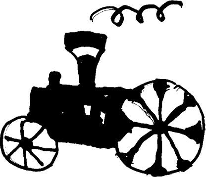
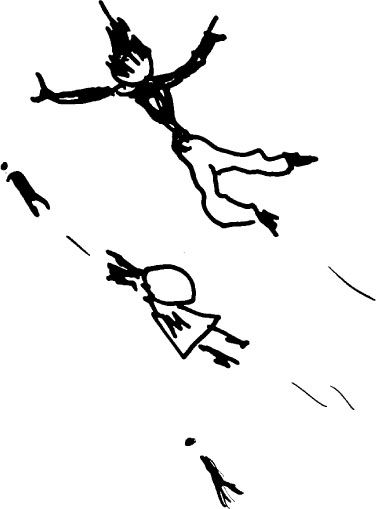
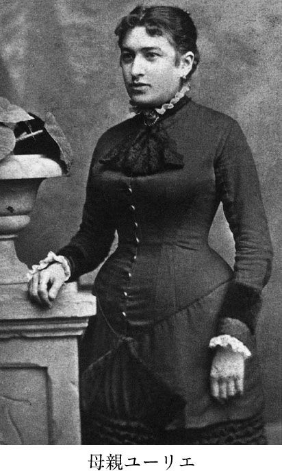

| となりのカフカ | |
| 池内 紀 | |
| (2004) | |
外国語を習うとき、初級・中級・上級といったクラス分けがされる。初級はイロハから、中級はちょっとアイマイだが、いちおう基礎的な知識をもつ人向き、上級はしかるべきテキストを読む。
私自身、ながらくドイツ語を教えたので、よくわかるが、教える側からいうと、初級がいちばん難しく、中級はまあまあで、上級がもっともやさしい。しかるべきテキストを購読するなど何でもない。中級程度は、ときおり手がかかるが、これも大したことはない。初級には手を焼く。思案したり、頭をかかえたりの連続で、いろいろ工夫をこらさなくてはならない。
『となりのカフカ』はカフカ初級クラスにあたる。カフカという作家、またカフカの小説はまだ何も知らない。しかし、名前は聞いたことがあり、顔写真のようなものを見たこともあって、難しい小説を書いたといったことは、なんとなくイメージにある。
そんな人のための本である。語学のときもそうだが、初心者というのは、とんでもない質問をするものだ。たとえばカフカの代表作の『変身』を解説していると、突然、問われたりする。主人公は、ある朝、目が覚めたら虫になっていたというが、べつに虫でなくてもよいのではないのか？ ネズミに変わっていても、カラスになっていてもかまわないと思うが、どうして虫にしたのか？
当然の疑問である。と同時に、もっとも答えるのに難儀する質問である。
虫になった息子を、父親が元の部屋に追いもどすシーンがあるが、最初のときはステッキで突き入れた。二度目は次々とリンゴを投げつける。どうしてリンゴを投げるなどしたのか。ステッキのほうが手っとりばやいのではあるまいか？
初級クラスの抱く疑問ときたら、とてつもない。とともに、とても大切な点を突いている。外国語の場合でもそうだが、初級のなかにこそ言語の骨組みや特徴が、そっくりつまっているからだ。
友人・知人の伝えるところによると、フランツ・カフカは、もの静かで、謙虚な人だった。半官半民の役所に勤め、事務カバンを下げて出張する。女性を愛するたびに誠実に悩んだ。当時「死の病」とされていた結核に冒され、我慢強く苦痛に耐えた。
勤め先から帰ると、少し仮眠をとり、夜中にせっせとノートに小説を書いていた。書きつづけるために独身を選び、家庭の幸せをそっくり捨てた。一見のところ謙虚だが、背中合わせに野心家カフカがいたはずだ。いずれ自分の時代がくると、かたく心に期していた男――。
そんなカフカは難しい人物だろうか？ たいていの人が、実はそうなのではあるまいか。いつもはごくつつましいが、ひそかな野心がなくもない。いずれ自分の認められることを夢見ている。やはり夢で終わりそうで、ときおりくじけそうになる。カフカもまたそうだった。ひとしきり熱中したとおもうと、パタリと筆がとまって、しばらくは音なし。五年ちかく、ほとんど書かなかったこともある。そののち、あらためて勇気を奮い起こして取り組んだ。
『変身』をはじめとして、たしかに風変わりだが、しかし、難解なところは少しもない。ストーリィにシャレっけがあって、ときおりクスクス笑いたくなる。描写は的確で、ほんの少し登場するだけの人物でも、いきいきした個性をもち、生彩に富んでいる。
初級クラスはよけいな知識がないので、先入見もない。自由で、身軽に考えられる。だからこそ、とっ拍子もない質問が出る。そんな読者のために、すぐとなりの席にいるカフカを書いた。
目 次
本文カット・池内紀
カフカというと、イメージがきまっている。大きな目、そげた頰、悪魔のように尖った両の耳、かたくむすんだ唇。
その顔だけでも、ただならぬ雰囲気がある。何やら恐ろしげだ。そういえば、実にへんてこな小説を書いた。ある朝、目を覚ましたら虫になっていた男の話。あるいは、同じくある朝、目を覚ましたら、何も悪いことをしたおぼえがないのに逮捕されていた――。
あのカフカである。悪い夢に出てきそうだ。小説そのものが悪夢じみている。
カフカは笑ったことがあるのだろうか？ 妻と買物をしたり食事をしているカフカ。齢をとって白髪になり、孫といっしょに写真に写っているカフカ。スポーツマン・カフカ。軍服姿のカフカ。恋人と腕を組んでいるカフカ。勲章をつけたカフカ。ノーベル賞作家カフカ......どれもまるで想像できない。
しかし――そうではない。イメージがまちがっている。まるっきり、ちがうのだ。
カフカはよく笑った。ひとりでクスクスと笑うことが多かったが、ときおりは声を立てて笑った。友人と笑いころげた。笑ってはいけないときに――たとえば勤め先の上司がものものしく訓辞をたれているとき――プッとふき出してしまったこともある。あとあとそのことを思い出して、そのたびに思い出し笑いをした。
妻と買物をしたり、食事をしたりするのが夢だった。いつもそれを願っていた。
健康に恵まれ、もっと長生きしていたら、齢とともに白髪になり、孫といっしょに写真をとっていたかもしれない。
スポーツが好きだった。水泳が得意で、抜き手を切って泳いだ。ボートを漕ぐのも好きだった。ひところ乗馬にこって乗馬学校に通っていた。それを生かして、ちゃっかりと小説の一章を乗馬学校のシーンにしている。
機械類も大好きだった。そのころ空にあらわれた二葉式の飛行機を追っかけまわし、たのまれもしないのにルポを書いた。オートバイが売り出されると、さっそく乗ってみた。故障すると妹たちに尻押しさせた。
軍服こそ着なかったが、サラリーマンの制服である背広とネクタイは、いつもきちんとつけていた。背が高かったから、長い脚に細いズボンがよく似合った。
恋人と腕を組んだ写真は残っていないが、よくモテたし、すぐに恋をした。何年かごとに別の恋人がいた。人妻の場合もあった。
勤めが公務にあたったから、長生きしていれば、自動的に勲章をもらっていたはずである。ノーベル賞は、たぶん、ムリだろう。チェコ国籍のドイツ語で書いたユダヤ人ときている。それに、あまり世の中のためになりそうな小説は書かなかった。
カフカの勤め先は保険会社だった。半官半民だったから保険公社というほうが正しいだろう。プラハ市の中心街から歩いて十五分ほどのところに建物があった。五階建てのいかめしいつくりで、上に重々しい塔がのっている。正面に鷲やライオンの紋章つき（「労働者傷害保険協会」写真を参照）。
朝八時、フランツ・カフカがやってくる。いつも定刻ぎりぎり。たいてい二、三分、遅刻した。だから若いころは二段跳びで階段を駆け上がった。
勤め先の正式の名称は、つぎのとおり。
「ボヘミア王国労働者傷害保険協会プラハ局」
「ボヘミア王国」は現在のチェコ。第一次世界大戦の終わりまでは、こんな名前で呼ばれていた。王国ではあるがオーストリア君主国の支配下にあって、ハプスブルク王家の者が王位についていた。そのため国民の大多数はチェコ人で、チェコ語を話したが、公用語はドイツ語だった。
「労働者傷害保険」は、労働者のための社会福祉である。ヨーロッパではイギリスを皮きりに、十九世紀末あたりから整備されていった。ハプスブルクの国々でも遅まきながら法律が施行された。経営者と労働者が掛け金を積み立て、協会が運営する。職場事故が起きて、申請があると、査定して保険金を支払う。
カフカは一九〇八年七月三十日付で協会に採用された。このとき、二十五歳。プラハ局の職員数は二百五十人だった。幹部は全員オーストリア人で、ドイツ語を話した。職員の多くはチェコ人で、チェコ語を話した。カフカはドイツ語で育てられたが、チェコ語もよくできた。全職員のうち、ユダヤ人は二名だった。
勤務時間は朝八時より、午後二時まで。変則的に思われるが、オーストリア帝国の官僚制がとっていた勤務システムで、早番組――遅番組に分かれていた。早番は朝が早く、昼休みなしでぶっつづけに勤務する。そのかわり午後早くに終わるので、もう一つ仕事を兼業できる。安い俸給の代償に考え出された制度だろう。たいていの小役人は内職や時間給の仕事をもっていた。カフカもひところ、父親が設立した工場の共同経営をしていた。
二時終了といっても、定刻きっかりには終わらない。二カ月に一度、遅番を務める。ときおり日曜・祝日の日直がまわってくる。
就職したときは「書記見習い」の肩書だった。すぐに正式の書記官になった。五年目で、わが国でいう係長になり、十二年目に課長、十四年目に部長に昇進。そんな経歴からもわかるとおり、有能な職員だった。
はじめは国内の企業を「危険度」によって分類する部局にいた。やがて査定の仕事についた。現場で事故が起きると、保険金申請の書類がくる。疑問がある場合、直接現場へ出かけて調査をする。
経営者はつねに掛け金は少なく払って、保険金は多く取りたがる。労働者の実数をごまかし、事故を大げさに申し立てる。書類審査でごまかしを見つけなくてはならず、現場では厳正に対処しなくてはならない。
カフカは北ボヘミア地区が担当だった。「ズデーテンドイツ」などと呼ばれていたところで、ドイツ人が多く住み、ボヘミア地方でもっとも工業化が進んでいた。職場事故も多い。そこの担当だったことからも、カフカが能力を認められていたことが見てとれる。
勤めだして二年目のことだが、局長が替わった。全職員を代表して、カフカ書記官が新局長に祝辞を述べた。
「とてもうれしい選択がなされました。まさにぴったりの人がその地位につき、その地位がまさにふさわしい人を得たのです」
そんなふうに話し出して、新しい局長の人柄、学識、また保険についての考え方を述べていった。
「こういったことは申すまでもなく、きわめて重要であり、ボヘミア広しといえども、この分野で新しい局長と肩を並べられる人はいないのです。仮にも肩を並べようなどと、そんな大それたことを思いつく者がいるとしての話ですが」
型どおりの祝辞でないことは、言葉のはしばしにも見てとれる。さらに労働者の福祉に寄せる局長の情熱を述べたあと、つぎのようにしめくくっている。
「正当であるとないとを問わず、わが協会に対する苦情は年ごとに高まっています。ついては、いまや一つのことが確定しました。よき仕事がなされるということです。求められている改革のなかで、現行の法の許すかぎり可能なものは、必ずや遂行されるということです」
やさしく、意をつくした上に、語り手の熱意を十分感じさせる。カフカのイメージが――悪い夢に出てきそうなあのイメージが――どんなにまちがっているか、こういった祝辞一つからでもわかるのではあるまいか。
新しい局長はドクター・マルシュナーといった。弁護士あがりで保険問題が専門だった。社会保険に関して自分の理論があり、またこれまでも局長づきの秘書官として職場を監督してきた。大学の講師、さらにプラハ商業学校の一般人向け夜間コースで保険算定法を教えていた。カフカは就職に先立ち、この夜間コースに通って、社会保険についてのひととおりの知識と実務を身につけた。そのとき教壇にいたのが、この人だった。
天下りの官僚に代わって専門家が局長についた。それだけ事故が多く、大きな社会問題になっていたからである。二十世紀の到来とともにつぎつぎと新しい機械が導入され、工場が近代化されていったが、労働者の多くは旧来の職人あがりであって機械化に対応できない。カフカが職場に入って四年目の一九一二年の数字だが、事故件数六十七万三千二百四十件に対して、保険金を支給したのが九千七百五十三件。わずか一・五パーセントにすぎない。
マルシュナー局長がもっとも目をかけたのが書記官フランツ・カフカだった。職場を代表して祝辞を述べたのも、局長が指名してのことだった。そのしめくくりに「わが協会に対する苦情」をあげたのは、保険金支給率の低さに、経営者から抗議の声があがっていたからであって、掛け金不払い運動に発展しかけていた。
このころから、カフカはしばしば北ボヘミアへ出張している。企業をまわり、保険業務に理解を求める。また厳正な査定のためには、労働現場の実態を把握しておく必要があったからだ。工場だけでなく、労働者の住宅や宿舎も視察にまわった。
経営者や会計主任は本庁から出張してくる役人を待ち受けている。調査にそなえ、書類や現場にしかるべき備えをほどこしている。そういったカラクリも見破らなくてはならない。
カフカは風変わりな小説を書いただけでなく、きわめて風変わりな経歴をもっていた。書類や調査を通して、急速に近代化していく産業社会の実態に触れていた。出張の列車のなかでたえず書類に目を通している。押しの強い経営者や、抜け目のない会計主任を相手にしなくてはならなかった。いや応なく近代企業の内幕というものをよく知っていた。この点、二十世紀の作家のなかで、またとない例外だった。
デビュー作も変わっている。カフカの書いたなかで、はじめて活字になったものは、保険協会の年報に発表された、つぎのような論文である。
「建築業界及び建築関連事業における社会保険の状況」（一九〇九年、無署名）
「自動車個人所有者における保険の現況」（一九一〇年、無署名）
「製材用電動鉋の傷害防止策」（一九一〇年、署名入り）
「フランツ・カフカ」の名前は、まず電気鉋と関連して世にあらわれたことになる。
当時、電気鉋には旧式の角型と、改良された丸型の二種があった。労働者は使い慣れた角型を好んだが、のべつ指をとばされる。カフカは図解（カフカの論文を参照）をつけ、旧型がどの点で危険なのか、いかなる根拠にもとづいて丸型をすすめるのかを、くわしく論じている。
「角型は構造上からも必ず作業台と鉋の刃とのあいだに空隙が生ずる」
そこに木材を押しあてて製材するわけだが、電気鉋は一分間に三千八百から四千回の速度で回転している。ほんの少し触れただけでも指先がとぶ。どんなに熟練していても、作業中には気がゆるむものだし、木材が歪んでいたりコブをもっていると、その反動で、どうしても手の位置がずれる。
親指がとぶケースは、意外と少ない。小指、薬指、中指の先端の順で欠けていく。からだのなかでも、とりわけ先端にあって、そこはとくに「意識の度」が薄いからだとカフカは指摘している。熟練や注意力だけでカバーしきれるものではない。
これに対して丸型はどうか。カフカは二度にわたって新式電動鉋を図解し、その利点を説明している。こちらでは仮に刃に触れても、せいぜい皮がむける程度。念入りにも五本指のそろった手を四つかかげ、ちょっぴり皮のすりむけた個所を丸で示した。書記官カフカの「傷害防止策」が、型どおりの小役人の報告ではなかったことが見てとれる。
カフカに『流刑地にて』という小説がある。長めの短篇で、「製材用電気鉋」について書いてより四年後の一九一四年の作。
「実にたいした機械でしてね」
小説はそんなセリフではじまっている。島で囚人が処刑される。学術調査に訪れた旅行者に処刑担当の将校が処刑機械を説明する。三つの部分からできた、バッテリー式の大きな機械だ。それぞれがあだ名でよばれていて、上の部分が《製図屋》、まん中が《馬鍬》、下が《ベッド》。まず囚人をベッドに寝かせる。馬鍬の先についた長短二つの針が、製図屋の指図どおりにベッドの囚人を突き刺しながら「刻み目」を入れていく。十二時間がかりで、しだいに深く抉りこみ、最後にグサッと刺し貫いて、穴の中に放りこむ。
「――以上でもって裁判は終了したわけで、自分たち、つまり私は兵士ともども死体を土に埋めるのであります」
小説はこのあと、思いもかけない展開をするのだが、それはさておくとして、小説家カフカが、なんとも不思議な処刑機械を書くことができたのは、書記官カフカが、順に指を落としていく機械類と親しく接していたせいではあるまいか。年報には指先の事例しかあげていないが、もっとひどいケースも知っていたにちがいない。十二時間がかりで深い「刻み目」を入れるのは、小説だけにかぎらない。近代産業そのものが、その非人間性において、巨大な処刑機械にほかならない。
カフカは物語るだけにして、いっさい告発などしていない。小説『流刑地にて』の奇妙なリアリティは、それが単なる空想の産物ではなかったからではなかろうか。書き上げて二年後に、ミュンヘンで催された自作朗読会で彼はこの小説を朗読した。八十人あまりの聴衆のうち、二人が気を失って運び出された。
「電動鉋」論文の発表と同じ年だが、カフカは北ボヘミア商工会主催の懇親会で、「社会保険の現況」について講演している。
その翌年には、八日間にわたり、担当地区の主だった工場を視察した。
一九一二年の夏から秋にかけては、短篇『判決』や長篇『失踪者』、また『変身』を書いていたときだが、この間、二度にわたり出張を命じられた。『変身』を一気呵成に仕上げるつもりでいたところだったので、途中でとぎれるのを残念がっている。
一九一三年九月、保険をめぐる第二回世界会議がウィーンで開催された。カフカは局長や部長とともに、大会に参加した。部長が講演したが、その原稿はカフカ書記官がまとめたものだった。局長も講演をした。大会が終わったあと、三日間の特別休暇をもらって北イタリア旅行をした。カフカ書記官の労を多とした上司直々のはからいだった。
一九一五年は「労働者傷害保険協会」設立二十五周年にあたり、豪華な記念誌が出された。巻頭にマルシュナー局長が「傷害防止と、その第一歩」と題した論文をのせているが、カフカが代筆した。カフカの日記にあるが、草稿を読んで局長はいたくよろこび、わざわざカフカの部屋までやってきて礼を述べた。
一九一六年、恋人フェリーツェに自作の短篇がのっている雑誌を送った。と同時に協会の年報も送っている。そこには自分がまとめた「一九一四年度保険支給業務報告」、また「砕石機械における傷害防止策」が掲載されていた。カフカにとっては小説に劣らず重要な意味をもっていたことがうかがえるのだ。
あきらかに、はっきりした考えがあってのことにちがいない。勤めのために小説に集中できないのを嘆くことはあったが、彼は終始、有能な職員だった。一九一九年にハプスブルク体制が崩壊してチェコ共和国が誕生したとき、オーストリア人幹部はいっせいに追い出されたが、カフカ課長は職にとどまった。欠くべからざる人だったからだろう。さらに部長に昇進する。能力とともに人柄を愛されていた。
建物の掃除をしていた女性が思い出を語っているが、「カフカさんは顔が合うと、いつもひと声かけてくれた」という。「坊やの熱はさがりましたか？」
先だって子供が熱を出して心配だといったことを話したせいだ。自分でも忘れていたことを、きちんと覚えていてくれた。あいかわらず毎日、遅刻しそうで、息せき切って階段を上がっていく。病身になってからは辛そうなので、いつもハラハラして見守っていたそうだ。
地位が上がって、八時出勤を変更することもできたのに、彼はずっと早番を通した。夜っぴて小説を書くには、この方法しかなかったからだ。
カフカが勤めた労働者傷害保険協会の建物は現在もそのままある。プラハ市の少し外れで、中心街とくらべ、なんとなく下町風の感じのする界隈である。外まわりはカフカのころと少しも変わらない。屋根に重々しい塔がのっかり、正面にいかめしい紋章がついている。
建物はそのままだが、保険協会ではなく、電気製品修理会社が入っているらしく、入口の柱にそんなプレートがついている。中庭に壊れた電気製品が積み上げてある。
カフカが勤めていたころ右隣りは映画館で、おりおり、仕事の帰りに寄っていった。現在はアメリカ式カフェのチェーン店。左隣りは、以前と同じ安ホテルである。支配人の話によると、たまにカフカ・ファンが泊まりにきて、壁ごしに旧の職場を味わって帰るそうだ。
早朝六時。晩秋から冬にかけては、まだまっ暗だ。カフカ家の一日がはじまる。
台所で音がする。朝食の用意。湯をわかす。炉やストーブの灰をかき出す。ドアの開け閉め。住みこみの女中の床を踏みしめるような足音。
三人娘の末っ子オティーリエは愛称がオトラ。カフカがとりわけ愛した妹である。家族で一番の早起き。早起きしなくてはならない。父親に大役を申しわたされている。七時十五分までに高級小間物商店「ヘルマン・カフカ商会」に行っていること。七時半には従業員が出勤してくる。その前に建物のドア、店のドア、倉庫のドア、帳簿の入った戸棚を開けておく。パン一切れを口に押しこみ、オトラが鍵束を握って駆け出していく。
兄フランツもぐずぐずしていられない。勤め先は八時にはじまる。徒歩で家から三十分かかる。小走りで行けば二十分だ。一方が居間、他方が両親の寝室。居間では食器を並べる音がする。寝室からは夫婦の会話のきれはし。父親の野太い声。母親がたしなめて、ささやき声に変わる。ささやきのほうが、なおのこと耳にとどく。あいまに父親の大あくび。ベッドのきしむ音。
たとえ物音や声がしなくても、やはり目が覚めるのだ。部屋のドアはスリガラス入りで、廊下の明かりがもろに洩れてくる。
しかし、文句を言えた義理ではない。家族六人のうち、個室をもっているのはフランツだけ。娘三人は成人してのちも一つ部屋を分けあっていた。女中は台所わきの窓のない小部屋住まいだ。食事をとる居間も六人がすわればすし詰めである。
プラハ・ニクラス通り三十六番地の住居は五階にあった。市当局がユダヤ人地区を取り払って大々的な都市改造をした際、モルダウ河沿いに共同住宅を建てた。ユダヤ人優先で、カフカ家も新しい住居にありついた。エレベーターつき、浴室完備、見晴らしがいい。欠点は壁が薄いのと、住居が狭いこと。
時計に目を走らせながら、カフカはシャワーをあびる。毎朝の行事だった。神経質なまでの清潔好きであって、爪をととのえ、髪を梳る、ひげを剃る。
狭いのに目をつぶって越してきたのには、浴室完備のせいもあった。いつでも水が出る。プラハ旧市では、それは例外的なゼイタクであり、かなりの家庭が昔ながらにバケツで水を運び上げていた。あるいは、たとえ水道があっても、定まった時間しか水が出ない。
時計の針はすでに七時半をすぎ、四十五分に近づいている。大急ぎで朝食をとり、何もはさまないパンをつつんでカバンに入れ、フランツ・カフカが家を出る。エレベーターはあるが、おそろしくノロいのだ。ボタンを押すと鈍い音がして、どこかで動いているようだが、なかなか五階までやってこない。たいていは待ちきれず、小走りに階段を下りていく。玄関近くでは二段とばし。
長身で痩せている。長い脚がよけいに長く見えた。ソフトの帽子に背広、ネクタイ、冬は上から厚ぼったい外套を身につけていた。そんな男が、まっしぐらにプラハ市中を西へ行く。見知った人と顔があえば、短い挨拶。相手が振り返ると、すでに角を曲がっている。
勤め先の労働者傷害保険協会は半官半民の役所であって、時間にうるさい。陰気な建物正面の飾り塔に大時計がついていて、短針が８のところを指している。長針は２のあたり。
「カフカさんは、いつも階段を二段とびに走り上がっていきました」
掃除婦をしていた女性が思い出を述べている。十五分の遅刻は慣例として大目にみてもらえた。息を切らして部屋の前に立つと、帽子を帽子かけにかけ、深呼吸をして姿勢をととのえてから、同僚のいる審査部局に入っていく。
「カフカ」はチェコ語で「コガラス」の意味。体の小さな黒いカラスである。そのためカフカ商会は、小枝にとまったコガラスを商標にしていた（カフカ協会の商標を参照）。
ニクラス通りに移ってからしばらくのことだが、旧キンスキー宮殿の一角に、黒いカラスの看板がつるされた。念願かなってプラハ市中の一等地に店をもった。第一次世界大戦の始まる少し前のことである。
営業品目は、傘、ステッキ、ハンカチ、ボタン、下着、手袋......。いずれにも「高級」の形容がつく。高級ブティック、高級アクセサリー。プラハのブルジョワたち、とりわけドイツ系ユダヤ人を顧客にした。チェコ人はほんのひと握りの富裕層だけ。開店八時、閉店七時。従業員三名と店主夫婦、娘一人が時間を割り振って店と倉庫につめていた。昼食もかわるがわるで、両親はしんがり、午後二時から三時の間に、いちど家にもどってくる。
いっぽう労働者傷害保険協会は二部制で、朝組は午前八時から午後二時、昼組は十二時から午後六時、ともに六時間勤務。
きまりでは午後二時の終業だが、きっかりには終わらない。家に帰り着くのは三時になる。両親はたいてい昼食をすませ、ソファーで休んでいた。単に休憩というのではない。息子フランツの「食べぶり」を監視する用向きも兼ねていた。
この息子ときたら、いまはやりの「ベジタリアン」と称して肉料理を食べない。もっぱら果実や野菜ばかり。若い身空で肉を食べないなど、もってのほか。とりわけ母親には気が気でなかった。勤めのほか、夜遅くまで起きて小説なんぞ書いている。それはまあまあ若い者の道楽として目をつぶるにせよ、栄養をとらないと体がもたない。息子にイヤがられても肉料理を用意して、せっついて食べさせなくては心が安まらない。
両親の目を意識しながらカフカは昼食をとる。親孝行のつもりで、ほんのちょっぴり肉を口にする。母親は皿の残りに溜息をつきながらも、やや安心顔で店にもどる。
カフカの勤め先が二部制なのは、特別のことではない。先に述べたように、当時、広大なオーストリア＝ハンガリー帝国全土にわたり、ハプスブルクの官僚制が採用していた勤務システムであって、時間を少なくして俸給を抑える。そのかわり勤めをしながら、副業を営むことができる。カフカの上司は醸造業者だった。妻と酒場を経営している者もいた。勤めから帰ると、背広からセーターにとりかえてエプロンをつける。
カフカもしばしば勤めのあと両親の店を手伝っていた。主に商品の棚卸しだった。あるいは帳簿を整理する。
三人の妹が上から順に結婚して、二番目の妹の夫はカール・ヘルマンといい、この婿と父ヘルマン・カフカが資金を出して、アスベスト工場を興したことがある。石綿精錬工場であって、事業をはじめるにあたり、父親は大いに長男の助力をあてにしていた。法学のドクターであれば会社規約作成をまかせよう。勤めのあと工場の監督ぐらいはできるだろう――。
カフカが三十歳になる前後のことだった。アスベスト工場は二人のヘルマンにちなみ〝ヘルマン＆ 〟社と命名された。共同経営を示すは長男フランツを指していた。
第一次世界大戦中、石綿は弾薬その他に使われて大量の需要をみた。戦争を見越してのことではなかったにせよ、石綿に目をつけたのは正しい選択だった。しかし、〝ヘルマン＆ 〟社は、いくつかの理由から、事業としては成功しなかった。その理由の一つは共同経営者のイキが合わないことである。長男がサボタージュして、親子喧嘩がたえなかった。また工員の未熟さから、良質の石綿をつくれなかった。小間物商人に工員指導はムリである。労働者傷害保険協会勤務であれば、長男は工場に通い慣れている。その点でもあてにされたが、ここでもフランツは落第した。父の期待を大きく裏切った。
多少とも父親は息子を買いかぶっていたのかもしれない。職場のカフカは有能だった。見習い書記として入ったのが、翌年、すぐに正書記官になり、三年目には係長にあたる職務、ついで課長に抜擢された。ユダヤ人というハンディにもかかわらず、同年代の出世頭だった。父親がその能力に期待したとしても不思議はない。
だが、たたき上げの商人ヘルマン・カフカは、ハプスブルクの官僚というものを知らなかったようである。その能力は、もっぱら書類作りに発揮され、また書類の一点のみで評価された。この点、二等書記官フランツ・カフカはきわめて有能だった。なにしろ夜っぴてペンを握っている。たとえ書くものはまるきりべつものにしても、ペンの操作ならお手のものだ。
プラハ労働者傷害保険協会は巨大なハプスブルク官僚体制の末端にあたる。上司や同僚の主だった者たちは、いずれもドクターの肩書をそなえていた。誇り高い小官吏がたいていたどるコースだが、趣味をもち、その面で知る人ぞ知る域に達している。
協会の局長は古典的な詩を書いていた。わが国でいえばアマチュアの歌人である。俳句に相当するものをひねっている人もいた。ブドウ酒鑑定の大家もいれば蝶の蒐集家もいた。世に知られたワグネリアン（ワーグナー愛好家）もいる。カフカが異例の出世をしたのには、そんな職場の性格もあずかっていただろう。
さらに父親はまた、息子の職務を見誤っていた。職場の事故に対して保険を出す。先立って労働現場を検査し、ひどい施設には改善命令を出した。命令が無視されていれば、事故があっても保険を認めない。
〝ヘルマン＆ 〟社は機械、設備、工場施設とも劣悪だった。経営者が無知であり、かつは費用を惜しんだからである。カフカは皮肉にも、アフター・ツーの第二の勤めでは、本来なら認められない条件を大目に見て、いつもは改善を命じているところを黙っていなくてはならなかった。サボタージュをはじめ、父親と口をきかなくなったのも、やむをえぬところがあった。
カフカに「大騒音」と題した短い一文がある。二十九歳のとき、プラハの小さなドイツ語新聞に発表した。
「わたしは自分の部屋、わが家の騒音本部にすわっている」
ドアの開け閉めの音、家族の足音、台所の音、ドアごしの声。「騒音本部」とユーモアめかして、「わが家」の朝の模様を書いたものだ。パジャマ姿だった父が正装し、ブラシのかかった帽子を頭にのせて出ていくくだり。
「......つづいて重々しい、男性的な、情け容赦のない轟音とともにドアが閉まる」
薄い壁がふるえるような音をたてたはずである。つづいてカナリアの声のことに触れてあるが、カフカ家にあって家族同然の住人だった。いつも二羽のつがいがいて、死ぬたびに、あとが補充された。
「カナリアの声とともに、あらためて思うわけだ。隙間ほどドアを開けて、蛇のように隣室へ入りこみ、床に這ったまま妹たちと女中に、静かにしておくれと頼むべきではあるまいか」
この小文を発表したのは『変身』を書いたのと同年である。小説『変身』では虫だった。朝、目がさめると、主人公はへんてこな虫に変わっていた。雑音に苦しんでいる日常をつづった「大騒音」では蛇だった。いずれにせよ強い変身願望のあったことをうかがわせる。
小文では父が先に出かけていく。あきらかにこれは、日曜日のこと。何か催しでもあって、それで正装して出たのだろう。
カフカ家の習わしだったが、年に何度か両親が湯治に行った。ボヘミア西部にはカールスバートやマリーエンバートなど、よく知られる温泉がある。湯治は一週間から十日あまりの滞在になった。その間、店は娘たち、とりわけオトラが責任をもった。店を開いている十一時間を一人ではきついので、兄が何時間か代理をした。
兄と妹は従業員に愛された。店主ヘルマン・カフカのようにどならないし、イヤ味を言ったりもしない。悪条件で長時間にわたり働かされる者の立場をよく理解していた。
フランツには職場での体験があった。オトラには理不尽な社会に対する正義感と怒りがあった。のちに彼女は視覚障害者の施設のボランティアをしたり、農業実習に加わって、自立のための技術を身につけようとした。それは当時、若い女性のめったにめざさない方向だった。少なからず兄の影響があってのことと思われる。
カフカは北ボヘミアの工業町へ出張するたびに、妹に宛てて工場の絵葉書や労働現場の写真を送った。「紡績王」とか「石けん王」とか称されていた新興成金は、自分の肖像をまん中にして、まわりに麗々しく工場全景や保養施設をあしらった絵葉書をつくっていた。知識人が見向きもしなかったしろものだが、カフカはせっせとそのたぐいを買い集め、オトラへの土産にした。妹の社会教育を考えてのことだったのではあるまいか。
そして九歳年少の妹は急速に成長して、兄よりも早くに自立した。父親と衝突するのを避けるためだろう、二十をすぎると自分でアパートを見つけてきて引き移った。カフカが多くの短篇を書いたのは、「騒音本部」を抜け出し、妹オトラのアパートに押しかけてのことだった。夜明けちかくに区切りをつけて両親のもとへと帰っていく。オトラは半ばそんな兄に、執筆のための静けさを確保するため、わざわざアパートを借りたふしがある。
カフカ家の夕食は遅い。通常は九時半。ようやくこの時刻に両親が店からもどってくる。家父ヘルマンは、夕食は家族そろってと定めていた。昼食の余り物を主食にあてる。またしても長男は肉料理の食べぶりを監視された。
カフカには拒否するための言いわけがあった。ことさら肉を口にしなくても健康そのものだというのだ。タバコをすわない。アルコールもやらない。強い紅茶、珈琲を口にしない。きちんと散歩をしている。夏には水泳やボート漕ぎに行く。休暇は健康ランドときめている。どうしてわざわざ動物性タンパク質をとる必要があるだろう。
いかにもそのとおりだが、実情はややちがっていた。たとえば散歩の報告に、家族が啞然とすることがあった。ふつう鉄道をあてるところを、驚くべき速足で往復したり、何キロもボートで下り、そのあと同じ距離を流れに逆行して漕ぎもどったりする。
さらに体操があった。冬のさなかの凍りつくような朝に、ほとんど上半身はだかになって体操をする。若い層に流行し、マニュアルが出まわっていた。カフカの部屋には、その体操の主唱者による絵入りパンフレットが貼ってあった。「健康体操」と銘打っているが、こんなに強引なやり方は、むしろ不健康体操ではあるまいか。
それよりもやはり小説が両親の悩みのタネだった。口論のもとにもなった。毎夜、ときには明け方ちかくまで起きている。暖房のない部屋であれば、足に毛布を巻きつけて書いている。つき合っているのもその手の連中で、カフェにすわりづめ、たわいない議論ばかりしている。
両親は息子の小説書きを、知識人の無邪気なたしなみと考えていた。職場の上司たちも詩を書いたり、歌をつくっている。絵にくわしい人、ワグネリアンとされる人。道楽が身を亡ぼすことがあるが、ほどを心得てさえいれば何てこともない。むしろ人とのつながりをつくり、引き立ててもらうきっかけになる。
ただし、ほどを心得ての話。過ぎれば何ごとも害になる。睡眠不足がつづき、食事もろくにとらないでいて、夜の灯油を濫費するのは、たしなみの域をこえているのではあるまいか？
カフカの両親にとってカフカの小説は最後まで「困った道楽」を出なかった。カフカは生前に出版した本の一つに「わが父に」の献辞をつけたが、その父はついぞ献辞をよろこばなかったし、息子の小説を読んだこともなかっただろう。せいぜいのところ、仕事の味気なさを埋め合わせる「ひまつぶし」と考えていた。カフカの小説にもっとも冷淡だったのは、もっとも身近にいて、ハラハラしながら見守っていた人たちだった。
カフカの夕食は主としてヨーグルト。木の実、バナナやオレンジといった果物、それに麦芽パン少し。
夜十一時。父親が新聞をひろげる。プラハのユダヤ系中産階級の新聞はドイツ語による「プラハ日報」ときまっていた。保守派の新聞で、労働者の運動や社会主義的傾向に批判がきびしい。高級ブティックの客筋の考えや好みを知るのに最適だった。
新聞を読み終えると、トランプをする。父親ヘルマンの唯一のたしなみだった。週末には友人や親戚筋がテーブルにつく。平日は母親が相手をした。
パイプをふかしながらカードを見て、しきりにひとりごとを言う。他人の悪口、世相批判、家族へのイヤ味。娘たちが買ってきた何やかやに触れて、きまってひとこと。
「つまらん買物をしたもんだ」
つい先日、トランプの相手をしてくれた知人にまつわり、その先見えのしない愚かさをせせら笑ったりした。息子に頼みたい用があり、その息子がすぐ隣りにいるのに、直接声をかけない。
「どうだろう、フランツに助太刀をしてもらうわけにはいくまいか――」
顔を前に向けたまま、わざわざこんなぐあいに言った。
「息子殿はお忙しくて、とても承知してもらえまいな」
母親が「通訳」をする。カフカもまた、直接父親には答えない。母親を通して伝えてもらう。用向きを言って断ると、父親は「ごもっとも」というふうにうなずき、あらためてひとりごと。「やっぱりそうだ。お忙しくて、とても親父にさく時間などお持ちじゃない」
そのあと、くどくどと皮肉っぽいセリフがつづく。突然、自分の若かったころの苦労話になったりする。
カフカは短い挨拶をして腰を上げる。訴えるような母親の目が気がかりだが、やはりすわってはいられない。自室のドアを開け、闇のなかにすべりこむ。その間にも、父親のわざとらしいひとりごとが追ってくる。
ドアを開けても、薄い壁を通して居間の声が洩れてくる。両親の寝室へのドアが開いたままで、夫婦のベッドが丸見えのことがあった。日曜の朝など、寝乱れた寝台を目にするたびに、カフカはあわてて顔をそむけた。
ドアの鍵をたしかめ、それから机に向かう。プラハの冬は寒い。零下十度、また二十度ちかくまで冷えこんだ。膝に毛布をかけ、ときには全身に巻きつけ、ペンをとった。もう一つの人生がはじまる。二等書記官フランツ・カフカが作家カフカになる。その瞬間は誰も知らない。ただ数少ない家具と、薄い壁とが、ひそかな変身をながめていた。
二十世紀の代表的な小説の一つ。とともに、もっとも風変わりな一つ。
カフカの『変身』の出だしは、つぎのとおり。
「ある朝、グレーゴル・ザムザが不安な夢から目を覚ましたところ、ベッドのなかで、自分が途方もない、虫に変わっているのに気がついた」
背中は甲羅のように固く、腹はこげ茶色で、アーチ状の段になっており、そこに無数の細い脚がついている。
「どういうことだろう？」
と、ザムザは思ったそうだが、誰だってそう思うだろう。自分はいったい、どうなってしまったのか。悪い夢のつづきなのか。
先まわりして作者が断っている。
「夢ではなかった」
たしかに自分の部屋であって、まわりはおなじみの壁。絵がかかっている。自分でグラフ雑誌から切り抜いて金ぶちの額に入れたやつだ。
実をいうと、このあたりまでは風変わりな小説でも何でもない。目が覚めてみると、へんてこな生きものになっていたといった物語なら、お伽噺をはじめとして、古今東西ごまんとある。中国の伝奇小説には、その種の変身譚がめじろ押しだ。
カフカの『変身』がちがうのは、つぎのくだりからである。
「まったくなあ」
と、ザムザは考える。なんてひどい仕事にとっついたものだ。くる日もくる日もセールスに出る。列車の接続は悪いし、三度の食事もままならない。上役は口うるさいし、会社はノルマでしめつける。ちょっとでもラクをしようとすると、たちどころにクビがとぶ。親の借金でしばられてさえいなければ、とっくにやめていたはずだ。
そんなことを考えていて気がついた。腹の上が少しヒクつく。首をもち上げてみると、こげ茶色の腹いちめんに白い斑点がちっている。脚の一つでさわってみると、ヒヤリと冷たい。あわてて脚をひっこめた――。
おわかりのとおり、主人公は、自分がへんてこな虫になってしまっていることには、とりたてて驚かない。彼がびっくりするのは、戸棚の上の時計に目をやったときである。
「ウッヒャー！」
六時半を指していた。早朝五時の列車に乗るため、四時に目覚ましをかけていたのだ。むろん、鳴ったにちがいない。とすると、あのけたたましいベルを聞きのがしたのだろうか？
朝寝坊したことには驚いても、奇妙きてれつな姿になってしまったことには少なくも驚かない。まさにそのことに読者が驚く。
「どういうことだろう？」
虫男の思いはまた読者の思いでもある。
カフカは、いつ、どこで、こんな小説を思いついたのだろう？ 「いつ」はあとまわしにして、「どこで」を先に述べると、朝のベッドの中だった。
「まったくなあ」
小説の主人公と同じようなことを考えていた。なんてひどい仕事にとっついたのだろう。くる日もくる日も書類作り。労働者傷害保険協会の小官吏はセールスこそしなかったが、ときおり出張を命じられる。列車の接続は悪いし、三度の食事もままならない。つづくザムザのセリフは、そっくりそのまま作者の思いというものだった。
「入れかわり立ちかわり人と会っても、長つづきする仲じゃないし、心を打ち明けるなんてこともない。まったくイヤになっちまう！」
夜っぴて小説など書いている。明け方にひと眠りして、それから職場へすっとんでいく。カフカもまた寝すごさないように、いつも目覚まし時計をかけていた。
「ウッヒャー！」
寝すごしかけて、とび起きた。
そういえば主人公の名前ザムザはカフカとそっくりである。片カナだとわからないが、綴りで示すと、こんなぐあいだ。
Samsa
Kafka
二つのａの前後の子音を取り換えただけ。カフカをもとにしてザムザをひねり出したにちがいない。
小説であるからには、べつに虫にしなくてもよかったのではあるまいか。書き手は自由に選べたはずである。
「ある朝、グレーゴル・ザムザが不安な夢から目を覚ましたところ、ベッドのなかで、自分が途方もないネズミに変わっているのに気がついた」
イモリでもカラスでもオコジョでもよかった。どうしてカフカは虫にしたのだろう？
ただ虫とあるだけで、終始、どういう虫であるかは告げられない。それでいて背中、腹、脚にまつわり、描写はいやにこまかいのだ。カブト虫ともとれるし、ゴキブリのようでもある。ただし、大きさは人間並み。
なぜ虫にしたのか、理由がなくもない。『変身』執筆の五年ばかり前に、カフカは「田舎の婚礼準備」という小説を書いていた。結局、書き上げないまま放棄したのだが、そこに虫が出てくる。正確にいうと、虫になった夢のシーン。主人公の青年には田舎に婚約者がいるのだが、結婚は気がすすまない。だが婚礼の準備のために、田舎へ出かけなくてはならない。
肌寒い朝で、雨が降っていた。なおのこと出かける気にならない。それでも玄関に出てきて佇んでいると、青年の意識に夢がまじりこむ。自分は「大きな甲虫、くわがた虫、あるいはふきこがね」になっているはずだという。
「一匹の大きな甲虫。そのとおり、しかもそいつは冬眠中というわけだ」
ブヨブヨした腹に細い脚をすり合わせ、かぼそい声を出す。ついでながら、青年の名はラバン。Raban と綴る。やはり二つのａの前後の子音を取り換えただけ。
そこでは虫はまだ冬眠中だった。五年して眠りから目を覚ました。固い殻をもち、ベッドの上で、無数の細い脚をワヤワヤさせていた。
さて、どうしたものか。
時は容赦なくたっていく。戸棚の上の時計が六時四十五分を知らせたとき、「ベッドの頭のところのドア」をそっとノックする音がした。母親だった。今朝はやくに出かけるのではなかったか、とたしかめにきた。
しばらくすると「すぐわきのドア」でノックの音。父親だった。拳で叩いてせき立てる。
つづいて「反対側のドア」ごしに妹が心配そうに声をかけてきた。
「兄さん、どうしたの、気分が悪いの？」
カフカは注意深く書いている。主人公がいつも三方から見守られているということ。むしろ見張られている。家族で唯一の稼ぎ手であって、せっせと働いてもらわなくてはならない。
作者の日常が移しこまれている。「カフカ家の一日」で触れたが、『変身』を書いていたころ、カフカはプラハの小さなドイツ語新聞に「大騒音」と題した短いエッセイを発表している。「わたしは自分の部屋、わが家の騒音本部にすわっている」。こちらでは「騒音本部」などとユーモアめかして、自分の小部屋の前と右と左から聞こえてくる朝の騒音を数えていった。台所の炉の音、父親のスリッパの音、ストーブの灰を掻き出す音。父と妹のやりとり、建物をふるわすような轟音とともにドアが閉まる......。そしてエッセイは、やはり一つの変身願望で閉じられていた。
また時がたって七時ちょうど、会社から支配人がやってきた。「右手の部屋」から妹がそのことを知らせてくる。「左手の部屋」から支配人が呼びかける。ザムザがひと声答えたとたん、「左の部屋」が静まり返り、「右の部屋」ですすり泣きがはじまった。
部屋の中の虫男が首を動かしているさまが見てとれないか。犬がよくやるしぐさと似ている。散歩の途中に飼主が立ちどまり、知り合いと立ち話をしているときなど、目をパチクリさせて声のするほうを順に見やっている。
「寝床でぼんやりしていてもはじまらない」
立ち上がってドアに向かい、鍵をあけ、事情を釈明しなくてはならない。虫にとって大仕事だが、それは作者にとっても同様だった。仰向けになって細い脚をワヤワヤさせている虫を、ベッドから出し、立ち上がらせ、歩かせなくてはならない。ベッドの中で思案しているザムザは、ペンをもって思案しているカフカそのものだ。解決策を順序立てると、つぎのとおり。
１ はずみをつけてベッドからころげ出る
２ 戸棚を手がかりにして立ち上がる。
３ 椅子の背もたれに寄りかかる。
４ 椅子を手で押しながらドアに近づく。
５ 全身をドアにもたせかける。
ここまでは、まだいい。鍵穴に鍵が差し込まれたままになっている。これをどのようにして廻すのか？
「残念ながら歯というものがないらしい――どうやって鍵をつかめばいい？」
ザムザは立ち往生したが、それはカフカの心境でもある。棒線つきの問いかけは作者の自問でもあった。つぎにポンと膝をたたいたのではあるまいか。カブト虫などを思い出せばいい。
「代わりにむろん、顎が丈夫にできている」
幼いころに指を嚙まれたような記憶があったかもしれない。
ザムザは顎で鍵に嚙みつき、ジリジリと廻しはじめる。手がないかなしさ、鍵の回転につれて顎をひん曲げるわけだから、おのずと自分も「鍵穴を踊り廻る」ぐあいになり、鍵に嚙みついたまま、ドアにぶら下がるかっこうになった。カフカはこれを書きながら、自分も同じしぐさをやってみて、プッと吹きだしたのではなかろうか。
カチリと音を立ててドアが開いた。
「おっ！」
支配人がうめくような声を上げ、片手で口をおさえながら、じりじりとあとずさりする。母親は近づきかけたが、その場にしゃがみこみ、ガックリと顔を落とした。父は険しい顔で拳をつくり威嚇してきた。
カフカは虫になった男のことは、ひとことも書かず、ただ三人の反応だけにとどめた。異様な事態になったことが、なおのことよくわかる。
つづいてザムザが近づこうとすると、支配人はすっとんで逃げて行った。母はうしろにとびのいた。父はステッキと新聞をつかみ、足を踏みならして、ザムザを部屋へ追いもどそうとする。
「しっしっ」と声をかけてきた。犬を小屋に追いもどすのとそっくり。
ザムザは固い背中が戸口にはさまって、片方がもち上がったままもがいている。小説『変身』はⅠ・Ⅱ・Ⅲの三部構成になっているが、印象深いⅠの終わり、父がステッキでもって、息子の尻に思うさま突きをくれた。
さらにステッキでもってバタンとドアが閉じられ、つづいてやっと静かになった。
『変身』を書きはじめたのは、一九一二年十一月十七日のこと。この日は日曜日だったので勤めがない。まる一日を書くのにあてた。はじめは「小さな物語」と名づけていた。
翌月曜からは職場に出なくてはならない。夜をあてて書きすすめた。「小さな物語」がしだいに大きくなっていく。一週間でⅠを仕上げた。二十四日の夜、カフェで友人たちに朗読した。読み手自身が笑いころげて、何度も朗読を中断した。
そのあと出張を命じられて北ボヘミアへ出かけた。小説は書きさしのまま。恋人宛ての手紙で、そのことをくやしがっている。カフカによると『変身』のような小説は、十時間ずつを二度あてて書き上げるのがいい。そのときはじめて物語が本来の動きをとるという。
Ⅱの出だしはどうだろう。
「夕方の薄闇のなかで、グレーゴルはようやく、失神にも似た重苦しい眠りから目を覚ました」
同じく主人公の目覚めからはじまっているが、このたびは夕方。ⅠとⅡが、ぴったり裏返しになっている。まるで手袋を裏返したようで、模様がきれいに逆さまだ。
Ⅰでは、ザムザは時間に追われていた。たえず戸棚の上の時計に目をやって、ヤキモキしていた。Ⅱでは、のべつノラクラしている。ソファーに寝そべったり、窓に寄っかかっていたり、はては天井に張りついて遊んでいる。時計のことは、ひとことも語られず、いつ一日が終わったのかもわからない。
壁ごしに家族の話が洩れてくる。一家の働き手を失ってどうしたものか？ 父が財産状態や見通しを、母と妹に説きながら、隠し金庫から証書や預金通帳を取り出してきた。商売の失敗で大きな借金をつくり、それを返すために息子グレーゴルがセールスに駆けまわっていた。ところが実際は隠し金庫に、かなりの貯えがあったわけだ。
やがてザムザ一家に変化があらわれてくる。音楽家志望だった妹が店の売り子になった。女中まかせだった母親が家事と内職をはじめる。ノラクラしていて、新聞を読むのが仕事だった父親は銀行の守衛になり、金ボタンつきの制服を着て出かけていく。帰宅しても制服をぬごうとしない。
主人公の部屋も大きく変わった。虫に家具は用なしとばかり、母と妹がテーブルやソファーや戸棚を運び出した。いまやガランとした部屋に、へんな生きものがうずくまっている。
扱いもちがってきた。はじめは餌用の鉢にミルクがなみなみ入り、白パンを小さく切ったのが浮かせてあった。しだいに掃除がおろそかになり、食事も忘れがち。野菜の切れはしや残り物が新聞紙にのせて放り出してある。妹が足で鉢を押し入れる。部屋はうす汚れ、グレーゴルが這いまわると、ほこりが体にはりついてくる。
ショッキングな出だしのせいで、カフカの『変身』は虫になった男の物語と思われがちだが、その変身自体は最初の一行で終わっている。むしろ主人公が日常からズレ落ちたとたんにはじまる、べつの変身が問題だ。時間の変身、家族の変身、親子や血のつながりの変身。すべてがみるまに変わっていく。
Ⅰの終わりはステッキと新聞だった。同じく部屋から這い出てきた虫男を追い返すのに、Ⅱの終わりでは果物籠のリンゴが使われる。小粒の丸いリンゴ。あきらかに長い棒のステッキとまん丸い小粒のリンゴとがコントラストの役まわりにある。
父親がつぎつぎとリンゴを投げつけ、一つが背中に命中。グレーゴルは甲羅状の背中にリンゴをめりこませたまま、ほうほうのていで元の部屋に這いこんだ。
十二月六日、『変身』を書き上げた。とりかかって二十日目にあたる。昼間の勤めと出張を差っ引いてであって、ペンの速さがみてとれる。
創作ノートが残っているが、カフカはほとんど直しといったことをしなかった。やわらかいペン字が躍るようにつづいていく。そんな中に奇妙な書きまちがいがまじってくる。主人公のグレーゴルをゲオルク、あるいはカールと書いた。「ゲオ」と書きかけて「グレ」と直したり、「カー」と書きさしにしたのを斜めに消してグレーゴルに訂正した。計九回も主人公の名前をまちがえた。
ゲオルクは短篇『判決』の、カールは長篇『失踪者』の主人公である。どちらも『変身』とあい前後してできた。作者カフカにとっては、三篇が三つ子の兄弟のように似通っていたのだろう。それで人物の名前がこんがらがったらしいのだ。
Ⅲの章では、しばらく間借人がザムザ家にいた。部屋代を家計のたしにするつもりだったが、奇怪な虫が同じ屋根の下にいるとわかって、間借人が出ていく。そのとき、こんなセリフを口にした。
「――直ちに部屋の解約を通告する。これまでの間借代は、いささかも支払うつもりはない」
カフカはノートに、まず「この十七日間の間借代」と書き、つぎに「二十六日間の」と訂正し、そのあと「これまでの」に再訂正した。
カフカはどうして、わざわざ日数をあげたりしたのだろう？ ストーリィの展開からなら、まるで無用の数字なのだ。
間借人のくだりを書いたのは、十二月三日のこと。書きはじめた十一月十七日から数えると、ちょうど十七日目。カフカの意識のなかでは、ペンをとった日からすでに、想像のザムザ家に想像の間借人がいたらしい。「虫になった男」の思いつきは、さらに先にさかのぼり、カフカはカレンダーを手にとって数え直したのかもしれない。26と書き直し、そののち、物語のあるべきかたちのままに消えていった。
『変身』の主人公は、人間存在の比喩ともいえる。ある朝、虫になった男は、どのように読み換えてもいいだろう。ある日、リストラされて行き所のなくなった人、不治の病が判明した人、老の境をこえた人。そして、その家族の物語。
虫男はカサカサに干からびて、ある日の夜明け前に息をひきとった。そのとき父親は言った。
「神さまに感謝しなくては」
そのあと家族三人は久しぶりに遠出をして、たのしく今後のもくろみを話し合った。
『変身』は書きあげたが、なかなか発表の場がなく、ようやく三年後に小さな雑誌で活字になった。ライプツィヒの書店が聞きつけた。
「〝南京虫物語〟をお書きになったそうですが、いちど拝見させていただけませんか？」
仲間うちでは、そんな名で呼ばれていたようだ。一九一六年、全七十二頁の薄っぺらな本になった。表紙に虫男の絵がつくと知って、カフカはあわてて手紙を出した。決して主人公を絵にしないこと。版元はスリラー仕立てのつくりにして少しでも売ろうと考えたのだろう。初版表紙（『変身』初版表紙を参照）には、寝乱れた髪の男が両手で顔を覆って立っている。半開きのドアの向こうに真っ黒な闇。

カフカは機械が好きだった。自転車、オートバイ、飛行機、電話、録音機、タイプライター......。新しい機種が出ると、さっそく試してみた。いろいろパンフレットを集める。あるいは見物に出かけた。熱心にあとを追っかけた。労働者傷害保険協会といったところを生涯の職場にしたのも、いくぶんかは機械への関心があってのことかもしれない。紡績工場、ガラス会社、石けん工場、砕石場など、事故の査定に出向いた先には、きっと黒い機械がうなりを上げていた。
自転車は十九世紀末に、車輪が前後とも同じ大きさの二輪式が現われた。現在の自転車にそっくりなのは、登場したとき、すでにほぼ完成されていた乗り物だったせいだろう。
少年カフカが父親に買ってもらった自転車は「プーフ型」とよばれ、細身のスマートなタイプだった。ハンドルが左右に丸みをもち、握りがやや下にある。サドルが高く、乗ると前かがみの姿勢になって、スピードが出る。ラッパがついていて、ゴムを押すと警笛が鳴る。ペダルを逆転させるとブレーキになった。
少年には何よりの宝ものだったのだろう。カフカ家へ掃除に通っていた女性が、思い出のなかに部屋のもようを語っている。「ドアの横に机、窓ぎわに戸棚、その前に自転車が置かれていて......」。いつも部屋にもちこんでいたわけだ。
母方の叔父の一人はドクター・レーヴィといって、ボヘミアの地方都市で医者をしていた。親戚のなかで、カフカがとりわけ親しんだ人である。その叔父が、当時実用化されたばかりのオートバイをもっていた。製作者の名前から「ラウリン＆クレメント号」とよばれていた。べつの会社のべつのタイプは「オドラデク号」といった。カフカの手紙の一つに、「叔父がオートバイの買い換えをした」といった記述が見えるから、両方のオートバイを試してみたのかもしれない。
一九〇七年、カフカは友人ブロートに報告している。大学を出て、イタリアの保険会社のプラハ支店に勤めはじめたときだったが、休暇に叔父を訪ねた。
「毎日、オートバイに乗っている」
おもしろい体験ができるから、やって来ないかと誘っている。
レーヴィ叔父がオートバイにまたがり、近所の娘らしい若い四人が引いたり押したりしている写真が残っていて、それによると、二十世紀初頭のオートバイはハンドルが逆Ｖ字型に長く、サドルがずっとうしろにあって、モーターとシリンダーが剥き出しである。二十世紀後半のアメリカ映画『イージー・ライダー』の主人公が乗り廻していたオートバイと不思議なほどそっくりである。カフカが乗り廻していたのと同じ一九〇七年の記録だが、オーストリア＝ハンガリー帝国全土におけるオートバイ登録台数五千三百八十七台とある。そのうちの一台が「レーヴィ叔父さん」のもとにあった。写真の娘たちが、笑いながらあと押しをしているのは、よくエンコしたせいかもしれない。
「わたしは困りはてていた。ぜひとも出かけなくてはならない。重病の患者が十マイルはなれた村で往診を待っている」
叔父をモデルにカフカは短篇『田舎医者』を書いたと思われる。よくエンコするオートバイは仕事には使えない。それに小説では冬のさなかで猛吹雪ときている。医者は馬車で出かけていった。
「一説によるとオドラデクはスラヴ語だそうだ」
カフカはオートバイという乗り物とともに、機種の名前に興味をそそられたらしく、『家父の気がかり』と題した短篇にちゃっかりとオドラデク号を使っている。「オドラデク」という言葉のかたちからしてスラヴ語のようだが、ドイツ語から派生したようでもある。
「どちらが正しいというのでもないのだろう。だいいち、どちらの説に従っても意味がさっぱりわからない」
商名に使われる名前の特性であって、意味不明ながら、そのくせしかるべき言葉のかたちはもっている。小説に語られているオドラデクは、いろんなものを「めったやたらにつなぎ合わせた」ような姿をしている。星形をした中から小さな棒が突き出ていて、これと直角にもう一つ棒があり、この棒と星形のとんがりの一つを二本足にして立っているそうだ。あるときはおそらくちょこまかと動くが、べつのときは無意味な役立たず。
「おりおりは何カ月も姿を見せない。よそに越していたくせに、そのうちきっと舞いもどってくる」
ドアをあけると、階段の手すりによっかかっていたりするというのだが、エンコして修理工場へ廻されていたオートバイが、もどってきたというふうにもとれる。二輪車の商名を借用して、カフカは奇妙な生きものの話を生み出した。
一九〇九年九月、プラハのドイツ語新聞に一つのルポルタージュが掲載された。題して「ブレシアの飛行機」。筆者はフランツ・カフカ。名前に「プラハ」と添えてあるのは、書き手が無名であって、プラハ市の住人であることを示していた。
労働者傷害保険協会に勤めだして二年目の夏である。カフカは友人ブロートと夏の休暇に北イタリアへ出かけた。ベローナの町で飛行機ショーのポスターを見かけ、旅程を変更して駆けつけた。
「ブレシアの飛行機」は、二十世紀の幕あけとともに現われた新しい乗り物をめぐる、もっとも早い文献の一つにあたる。それもいかなる技術者やジャーナリストでもなく、一民間人が興味の赴くままにルポとして書きとめた。
カフカはまず飛行場にくるまでのことをくわしく報告している。前日、ブレシアの町へ入るのに辻馬車に乗ったところ、料金をボラれかけ、口論の末に半額にまけさせたこと。翌日、同じく辻馬車に乗って飛行場へとやってきたこと。
そんな経過をわざわざこまかく書いたのは、飛行機という新しい乗り物と対比させるためだったのではあるまいか。馬車に代表されるように、日常の乗り物はすべて車輪による。汽車、自動車、自転車、オートバイ――いかに新しい機種であれ、すべて丸い車が足の代用をする点では変わらない。
ところが飛行機はまるきりちがうのだ。これが車輪を必要とするのは、助走と着陸の短い時間だけであって、あとは虚空を無重力状態で移動していく。まったく新奇のメカニズムであって、その点でも、まるきり異質の乗り物というものだ。
「格納庫が並んだ前を通っていった」
木造の粗末な建物で、カフカには「旅廻りの一座」が幕を下ろしているように見えたらしい。いかにもそのように前はカーテンで仕切られ、上に旗と飛行士の名前が見えた。
「目を転じると、前方に広大な野原がひろがっていた」
無名の筆者は、それなりにルポの手法を身につけており、即物的な書き方で、出発標示、信号シグナル、運送用自動車、風向指示旗など、目に映るものをあげていく。飛行場は、はじめて地上に出現した奇妙な空間であって、とてつもなく広く、すべてが人工物で、全体が「孤立悄然」といった印象を与えたという。
まだ飛行機のおおかたが二葉式のころで、二つの羽根のまん中に操縦席があった。飛行士が乗りこみ、助手がプロペラを廻すと、やがてモーターが始動をはじめる。ゆっくりと走り出し、ついでフワリと空に舞い上がった。
カフカのルポによってわかるのだが、当時の飛行ショーは滞空時間、高度、総飛行距離など、それぞれに記録を競い、賞金が出た。ブレシアの場合、アメリカ人飛行士が総合点一位で三万リラを獲得。滞空時間四十九分三十四秒、総飛行距離五十キロ。高度ではフランス人飛行士が一九八メートルを記録、世界初のレコードだった。
カフカはルポのしめくくりに、ふたたび辻馬車の風景をつけている。ショーの終わりはこみ合うので、少し早めに町へ向かった。飛行ショーはまだつづいており、馬車の窓から振り返ると、大空の果てをめざすように高度を上げ、機体の下に沈みかけている夕日が見えた。
カフカは空を飛ぶメカニズムに人一倍の関心があった。だからこそ、いつもはないことなのに、群衆のただ中へ入りこみ、そこでまる一日を過ごし、たのまれもしないのにルポを書いた。日刊紙の編集者は、筆者の無名をいいことに、勝手にあちこちをちぢめたらしい。
一九一二年九月、カフカはベルリンの女性フェリーツェ・バウアーを知って手紙を書いた。総計で数百にのぼる恋文の最初は、奇妙な告白ではじまっている。
「先に一つ、打ち明けておかなくてはなりません」
そんなふうに断って、私信をタイプライターで書いたことを弁明した。タイプライターがなければ、そもそも一行も書かなかっただろうというのだ。タイプライターなら、「たとえ手紙を書くだけの気分になれなくても」、ともかくも指先が動いて手紙にしてくれる――。さらに二枚目の紙を入れて書きつづけていることまで述べ、タイプミスの多い手紙をしめくくった。
最初の手紙はフェリーツェと知り合ってから、ひと月ちかくのちに送られている。書き手が逡巡していた。出そうか出すまいか、迷っていたのが見てとれる。決意させたのはタイプライターの力だが、もう一つあったようだ。ベルリンの女性が勤めている会社の機械のこと。それが気になってならなかった。
フェリーツェ・バウアーは実業高校を出たあと、はじめはレコード会社のタイピストをしていた。そのあとカフカと知り合う三年前だが、録音機の会社に移った。正確には「口述用パルログラフ」といって、しゃべった言葉をレコード盤に刻み込む。あとでレコードを再生してタイプに打てば書類ができる。毎日とびまわっていて席のあたたまらない現代人に打ってつけ。製造・販売会社はカール・リントシュトレーム社といって、ベルリンに本社があり、「日産千五百台の生産量」を誇っていた。
しっかり者のフェリーツェは会社幹部の目にとまったのだろう、三年のあいだにタイピストから業務代理人に昇進した。商用がまとまると社長の名において署名をしてもいい。この女性代理人が業務拡張のためブダペストへ出張する途中、プラハの親戚ブロート家に立ち寄った夜に、フランツ・カフカと知り合った。
「あなたは清書がたのしいとおっしゃいましたね」
レコードに吹きこまれたものをタイピストが清書する。フェリーツェは機械の使い方を説明して、気の向いたときに原稿をつくれる便利さをあげたのだろう。カフカはどうやら機械に嫉妬したらしい。知り合った女性はメカニズムの告げるままにタイプのキーをたたいている。姿の見えない主人に仕え、意のままになっている。それは「聞くだにいまいましい」ことだというのだ。フェリーツェとの恋愛は五年にわたり、この間、二度の婚約と破約にまで及んだが、それを引き起こしたのは口と指先にかかわる二つのメディア機械だった。
メカ好きの人間には、すこぶる恵まれた職場であり、またいいときに生まれ合わせた。十九世紀末から二十世紀はじめにかけて、製造、交通、メディア、医療など、あらゆる分野で急速な変化があった。手工業生産が近代的な工場生産へと移行したときである。旧来の職人に代わって制服姿の職工が登場した。腕が覚えた技術よりも、一日何時間の労働力がものをいう。
ハプスブルク・オーストリアのなかで、とりわけ北ボヘミアで工業化が進んでいた。そしてカフカ書記官が担当したのは、まさにその地域だった。それだけ有能だったからだし、また機械にくわしいということがあずかってのことに相違ない。
紡績王、石けん王、織物界の雄、自動車の王様......そんなふうによばれる成功者たちが続出した。時代の風向きを読みとり、いち早く投資して、大工場をつくり、経営者に成り上がった者たちである。カフカは出張のたびに、そのような時代のヒーローを身近に見ていた。
自分の成功を示すためだろう、彼らはパノラマ風に会社や工場を描いた絵葉書をつくっていた。まん中に花環で飾られた創業者の肖像が入り、まわりに工場全景や現場風景、威容を誇る機械群がとり巻いている。ふつうは「キッチュ（くずもの）」とよばれ、教養ある人は見向きもしないしろものだが、カフカはせっせと買いあつめ、一筆したためて妹や友人に送った。おかげで、およそ残るはずのない会社宣伝絵葉書が後世につたわった。
カフカの最初の長篇『失踪者』は巨大な蒸気船の船腹ではじまり、大都市ニューヨークに移る。主人公である少年の伯父は一代で大経営者に成り上がり、さしずめ「流通王」と称していいような人物である。いかなる会社であるか？ 「一種の代理業、仲介業務」であって、さまざまな商品と材料を大きな工場カルテルに取りつぎ、あるいはカルテル同士の仲介をする。
「購買や貯蔵、移送、販売のすべてにわたって介入し、あらゆる顧客と電話や電信で結ばれている」
カフカがこれを書いたのは一九一二年から翌年にかけてのことだが、およそ一世紀ちかくのちに実現した流通システムではなかろうか。
その心臓部にあたる部局の描写もある。無数の顔が並び、いずれも頭に鉄のバンドつきイアホーンをつけ、情報を間断なくメモしていく。かわす言葉はほんのひとこと。ロビーや廊下を、記録されるところの紙片をもって忙しなく人が往きかいする。
「誰もが前の人と踵を接して歩き、目を下に落として、できるだけ速く歩こうとしていた。あるいは手にもった書類に目をやりながら、走るように通りすぎる」
これもまた、二十一世紀のオフィス街の日常ではあるまいか。
カフカはアメリカに行ったことがなく、数枚の絵葉書と、フランクリンの『自伝』をもとにして一人の少年のアメリカ放浪記を書いた。たとえ現実のアメリカは知らなかったにしても、急激に機械化のすすむ産業社会の現場はよく知っていた。北ボヘミアの出張の途中に未来社会のメカニズムを想像するのは、さして難しくなかったかもしれないのだ。
最後の長篇『城』では、まず電話が使われた。身元の怪しげな主人公の確認のためである。
「電話で問い合わせよう」
電話が二度出てくる。先には否定したが、次には承認する。少しあとだが三度目、主人公がかけたときは、受話器にとりとめのない声がして、つぎには歌のようなものがまじりこんだ。
主人公は名前をもたず、ただＫの一字で示されるだけ。Ｋがやってきた「城のある村」自体が一つの大きな機械であって、登場人物はすべてその部品のようだ。
昼間のカフカは勤め先のタイプライターで、官僚機構の必要とする書類をつくっていた。それについて、いちどフェリーツェへの手紙で述べたことがある。自分はタイプライターに惹きつけられる。
「それというのもタイプライターの仕事は、たとえタイピストによってなされても、まったく匿名のものだからです」
カフカはまさしく自分にふさわしい題材をもっていた。長篇『審判』は、官僚体制という巨大なメカニズムを取り上げた。官僚的な司法制度が、巨大な一つの機械であったからだ。そこの主人公はヨーゼフ・Ｋと、まだ名前だけはもっていた。最後の作では、それもなくなって匿名性で押し通してある。機械産業の現場にいたメカ好きの職員の手によって、おそろしく予言的な文章が生まれた。

はじめて訪ねたのは「白鹿園」といった。ドイツの古都ドレスデン郊外の森にあって、正確には「ドクター・ラーマンの自然保養所」。森に多くの鹿がいて、それで「白鹿園」と名づけたらしい。
一九〇三年八月のことである。そのときカフカ、二十歳。プラハ大学法学部在学中で、「ドクター」の称号を得るための国家試験を一つすませたところだった。根をつめて勉強した。骨休めと称して親から費用を出してもらった。二十歳の青年に保養の必要があったかどうか疑問だが、いずれ、わが家ではじめての博士様が誕生する。両親は気前よく小遣いをもたせて送り出した。
当時、プラハからドレスデンまで列車で三時間あまり。「白鹿園」には八日間、滞在した。
二年後の夏、シレジア（現ポーランド南部）の町ツックマンテルへ出かけた。理由は先の場合と同じ。このたびは「ドクター・シュヴァインブルクの自然保養所」といって、〝ヒドラテラピー〟で知られていた。〝水治療法〟と訳されているが、やたらに水を飲ませる。七月末から八月はじめにかけて二週間ちかくいた。
カフカは水治療法については何も述べていないが、ここで知り合った女性のことは、のちに手紙に書いている。
「......人妻であって、こちらはまだほんの子供だった」
知り合って「親しんだ」という。婉曲的な書き方をしているが、ほぼ読みとれる。田舎町の保養所で退屈している人妻に、つかのまのお相手をつとめたらしい。
このあとは少しとんで一九一一年九月、サラリーマンになって四年目のこと。夏の休暇に友人とパリに旅行をしたあと、一人でスイスへまわり、チューリヒ郊外の自然保養所を訪ねた。パリで別れた友人にくわしく報告しているが、起きがけの水泳にはじまり、体操、マッサージ、昼寝、散歩など、けっこう忙しい。食事は野菜と果物が主体で、肉の代わりにオムレツや木の実が出る。午後から夜にかけてはレコード鑑賞会、講演、芝居の上演。スイス式の規律に多少とも音をあげたようだ。スケジュールが盛り沢山で、「ろくに本も読めない」とこぼしている。
翌一二年夏、特別休暇をとり、ドイツ中央部のハルツ地方へ出かけた。勤め先には長期保養を申請した。嘱託医の診断書がついており、「消化不良、神経症の兆候あり。最少一カ月の休暇を必要とする」。
七月八日、プラハを出発。ドレスデンで列車を乗り継いで、ハルツ山地の小さな町にやってきた。午後おそく「アドルフ・ユストの健康の園〝ユンクボルン〟」に到着。本部で手続きをとり、山小屋風の一室をあてがわれた。
〝ユンクボルン〟は「青春再生」といった意味である。自然療法と生活の改善により青春の活力を取りもどそうというのだ。アドルフ・ユストにドクターの肩書がついていないのは、もともと医学畑ではなかったからだ。書店経営者だったが、独学で新しい健康法を開発、豊かな森と鉱泉にめぐまれたハルツ山地に目をつけ、一八九六年、青春再生のための健康ランドを開いた。
事業は成功した。〝ユンクボルン〟はつぎつぎにまわりの土地を買い上げて大きくなり、カフカが訪れたころは総面積八万平方メートル。本部の建物を中心にして、いくつもの棟や山荘が建ち並び、それ自体が一つの村のようになっていた。
カフカは両親や妹たちに絵葉書を出した。〝ユンクボルン〟のモットーは「自然に帰れ！」。十八世紀の啓蒙主義者ジャン・ジャック・ルソーの言葉だが、ここではそれが文字どおり、自然と親しむ生活の意味に使われた。
住居は石ではなく木造り、そこでたっぷり太陽をあび、オゾンいっぱいの空気を吸って、大地から湧く水を飲む。
体をしめつける衣服はぬぎすて、なるたけ裸でいる。せいぜいがガウンをはおる程度。広い庭が男女別に仕切られていて、全裸の日光浴が日課になっていた。チームを組み、四つん這いで草地を歩いたり、バレーボールのようなスポーツをする。
残されている写真によると、当時は皇帝にならうカイゼル髭や、いかめしい八字髭が流行していた。そんな髭づらの男たちが、全裸で犬のように草むらを徘徊したり、ボールを突き合ったりしている。芝居好きが余興を演じたらしいが、全裸の人物が警官に扮していて、頭にとんがったカブト式の制帽、腰にサーベルをぶら下げている。
なんとも奇妙であり、珍妙であるが、人々は大まじめだったようである。週単位で山荘暮らしをして、せっせと健康プログラムにいそしんだ。
とりわけ食事が徹底していた。すべて自然食品で、大麦パンに、山羊のミルク、クルミ・バター、珈琲を〝フルーツ珈琲〟と称していたから、果実でつくったものと思われる。木の実の漬物、〝ハルツのニワトリの卵〟。石灰で歯をみがき、クルミ油をかためた石けんでからだを洗った。
創立者アドルフ・ユストの弟ルドルフ・ユストは、カタログ販売を担当していた。〝健康の園〟で使用されている品々を通信販売する。美しいカタログで注文をとり、全国に送付した。ユスト兄弟は現在の健康製品やエコ産業のパイオニアにあたるだろう。
こういった健康ブームに、カフカがどの程度まで共鳴していたのかはわからない。学生のころは、親の目をはなれ、自由気ままにすごしたかったせいだろう。保養所は三食つきの安価なホテルというものだ。それに、たいていの人が退屈しており、ひと夏の恋といったアバンチュールにありつける。
サラリーマンになってのちは保養を名目にして出かけていった。そしてあてがわれた一室で、もっぱら小説を書いていた。カフカの作品のうち、長篇小説は主に保養所で書かれた。大麦パンやクルミ・バターの生活のなかで生まれた。
多少とも皮肉な目で見ていたにちがいない。〝健康の園〟にやってくるのは、大半が中高年たちだった。腹がせり出している。背中が曲がっている。全身にシミがある。一般にはよき市民、あるいは小市民といわれる人々であって、威厳をもった家父、商店主、工場長、町会議員、教会役員......。
そんな人たちが神妙な顔つきで日光浴をしている。言われるとおり鉱水を飲み、体操をし、赤子のように四つん這いになっている。しわしわのペニスや、白毛まじりの恥毛をむき出しにして徘徊している。
「スウェーデン人の青年が二人いて、脚も腰も美しい」
カフカは友人ブロートに書き送った。その二人が唯一の例外だったという。
「年寄りの裸身は見るにたえない」
カフカ自身、日光浴のときは、いつも海水パンツをつけていた。痩せっぽちで、手脚だけがむやみに長い。自分のぶざまさに苦笑した。これもまた「観賞にたえないしろもの」。庭に出ず、もっぱら山荘のベランダにいた。部屋は窓が大きく、天窓が開閉式で陽光が射し落ちる。涼しい風が吹き抜けた。〝ユンクボルン〟の謳い文句は「ハルツ山中のオアシス」だったが、カフカはどうやら文明社会の一風変わった隠れ場を、それなりに楽しんだらしい。ブロートから健康志向の俗人をからかう返事がきたのに対して、ややむきになって答えている。自分は失望していない、それどころか満足している。
「この人々と交わるためにきたのだから」
労働者傷害保険協会勤務の小官吏には、友人のように、せせら笑うだけですまされなかったのではあるまいか。〝健康の園〟というものが時代の労働状況と切っても切れない関係にあり、産業化の進展と手をたずさえるようにして生まれてきたことを知っていた。学生のころは、うすうす感じていただけかもしれない。勤めはじめてのちは、それを確かめる用向きも兼ねていたのではなかろうか。劣悪な労働現場が多くの死者や傷害者をもたらし、大量の結核患者を誕生させていた。
保養所に向かうに先立ち、カフカはパンフレットや案内を取り寄せ、入念に検討した。薄給の身では、食事一つにも慎重でなくてはならない。ドクター・何がしの保養所と名のるそれぞれが、独自の施設と健康法を高らかに唱えていた。水治療法や自然療法のほかに、〝ホメオパティ〟を掲げたところもあった。〝同種療法〟と訳される。たとえば凍傷の治療には雪をあてる。火傷には熱湯にひたした布を用いる。頭痛には刺激の強い珈琲、といったぐあいだ。ジェンナーが人間の痘瘡に牛の痘瘡菌を植えつけたのと同じである。
そこには一つの考えが働いていた。肉体はもともと動的なものであって、それ自体の力をもち、おのずと治癒力をそなえている。人工の治療は、肉体がそなえた「薬治力」を発展させるだけでいい――。
〝ユンクボルン〟の創立者ユストの思想は、おおよそこのようなものであったようだ。全裸の四つん這いが肉体本来の薬治力とどのようにつながるのか不明だが、独学者の理論のなかから編み出された実践にちがいない。
そういえば親指に何重も包帯を巻いたカフカの写真が残っているが、刃物で傷つけたとき、包帯を巻きつけるだけで薬は何も用いなかった。治るまで、「二倍の日数がかかったが、二倍もきれいに癒えた」と誇らかに日記に書いている。〝健康の園〟で学んだ「肉体の薬治力」を応用したのかもしれない。
結核を発病してのちのことだが、彼はまた、こうも書いている。
「病は病によってのみ癒やされる」
自分がひそかに求めたあげくの発病だとも述べた。
ユスト兄弟はつぎつぎに健康食品や自然製品を開発して、通信販売の品目をふやしていった。フルーツ珈琲やクルミ・バターなどのほか、健康チョコレート、自然食缶詰め、「ハルツの清水」、健康ビスケット。はては「身につけてやさしい健康下着」までが、〝ユンクボルン〟の商標つきで売り出された。健康の商品化は、まさしく「金銭に換算できないものの産業化」にちがいない。
一九一三年九月、カフカは北イタリアの小さな町へ行き、「ドクター・ハルトゥンゲンの保養所」を訪ねた。一帯はガルダ湖畔にあって風光明媚なところである。ドクター・ハルトゥンゲンは水治療法の権威として知られていた。二週間近く滞在。
この間のことだが、ゲルトルート・ヴァスナーという十八歳の娘と知り合った。カフカのほうから声をかけ、そして「恋をした」。スイス生まれで、イタリアのジェノヴァに住み、「かなり変わり者だが、注目すべき特性」をもっていたと、友人への手紙で報告している。どんな特性かは述べていない。
「ぼくが先に出発して、すべて終わった」
ドイツ語のことわざに「旅先の恋は旅先に残していくべし」というのがある。故里まで、またわが家には決して持ち帰らぬこと。おりおりカフカはそんなことわざを思い出していたのではなかろうか。
一九一五年七月二十日から十日あまり、北ボヘミアの「フランケンシュタイン保養所」に滞在。長篇小説『審判』が未完のままになっていた。二度にわたり、病気保養の名目で特別休暇をとり、なんとか書き進めようとしたが、やはり仕上がらない。さしあたり『審判』は棚上げにして、同じく未完になっている『失踪者』の仕上げにかかったが、こちらもまた終わらない。
一九一八年十一月末から十二月末にかけて、シレジアにいた。前年に喀血して、以後は本来の療養のためだった。そのはずであるが、保養地の使い方はこれまでと変わらなかった。結核の発病にあって、わざわざ冬のさなかに北方へ出かけたこと自体、医者の指示と逆行したものだった。
このシレジア滞在中にユーリエ・ヴォリツェクを知った。二十一歳。プラハの靴屋兼ユダヤ教会堂守りの娘。恋をし、婚約をした。「旅先の恋は旅先に残していく」の原則を無視したわけだ。
プラハに帰り、家族に告げたところ、父親が激怒した。とりわけ相手方の職業が気に入らない。靴屋兼教会堂守りとは、その一つだけでは暮らしが立たないからだ。二つでも、しばしば立ちかねる。何を好んで、そんな家の娘と結婚するのか？
若い女に目がくらんで、わが息子殿は婚約へとつっ走った。なるたけ早く、一週間後にも、明日にも、今日にも結婚したいとか。立派なオトナが、なんてことだ。行きずりと結婚するしか手がないというのか。
「おっかないのか？ なんならお伴をしてやってもいいぞ」
必要ならオンナを買えばいい。旧世代のひとことが息子カフカをこの上なく傷つけた。そして『父への手紙』といって、全集版で五十頁をこえる一通の手紙を書かせた。
一九二〇年四月はじめ、カフカはひと月の休暇をとって北イタリアの温泉町メラーノへ出かけた。「病気療養のため」という名目だった。着いた翌日、ミレナ・イェセンスカ宛ての最初の手紙を送る。チェコ生まれの女性で、カフカの短篇をチェコ語に訳していた。当時、ウィーンに住んでおり、ポラクという銀行員の妻だった。
五月はじめ、勤め先に休暇の延長を申請、この間に全集版で三百頁にあまる数の手紙が書かれた。「療養休暇」が実のところ、何のためにあてられたか、あきらかだろう。おかげで『ミレナへの手紙』という、二十世紀の書簡文学のなかで、とりわけ特異な恋愛の記録が生まれた。
チェコ東部からスロヴァキア北部にかけて、「タトラ山地」とよばれる高地がひろがっており、最高峰は三千メートルをこえる。全体が石灰質で、豊富に鉱泉が湧き、あちこちに保養所がある。
同じ二〇年十二月、カフカは三カ月の特別休暇を申請した。結核が進行しており、勤め先の嘱託医から強く長期療養をすすめられていた。なぜ、わざわざ、冬のさなかの高地を選んだのかはわからない。このころ新しい長篇小説を考えていた。舞台は雪に埋もれた村。そこに見知らぬ男がやってくる。出だしに書き悩んでいた。少し書き出したが、書きさしのままにとどまった。
まる一年あまりのちの一九二二年一月、カフカは三カ月の長期休暇をとって、チェコ・ドイツ国境の山地リーゼンゲビルゲへ向かった。「巨大な山並み」といった意味で、二千メートル級の山々がつらなり、やはり鉱泉が湧いている。古くから保養地としてひらけてきた。夏は避暑客でにぎわうが、冬はほとんどひとけがない。
このときの写真が残っているが（「保養地シュピンデルミューレへの途上」写真を参照）、フェルトの帽子に厚ぼったいオーバー姿で、馬ゾリに寄りかかっている。背後は一面の雪景色。急な坂道のせいだろう、ソリは二頭引き。写真には舞い落ちる雪片が白い無数の点になって写っている。
夜になってようやくホテルに着いた。呼び鈴を押しても誰も出てこない。馭者が大声で呼ぶと、ようやく奥で明かりがついた。
最後の長篇『城』の出だしと、ほぼ同じである。
「夜おそくＫが村に着いたとき、辺りは深い雪に覆われていた」
そんな出だし。日記からもわかるが、カフカは保養所に着いたその夜に『城』を書きはじめた。念願の出だしがやっと定まったせいだろう。とすると馬ゾリではるばると雪原をこえてくるあいだ、彼が一心に何を考えていたか、わかろうというものだ。以後の二カ月ばかりで四百頁をこえる長篇を書きあげた。その代償のようにして結核菌が喉にとりついた。医者のもっとも恐れた喉頭結核のはじまりである。喉をやられて、しだいに食事がとれなくなっていく。
死の前年の七月、カフカはバルト海沿いの保養地で夏を過ごした。このときの宿「グリックアオフ（幸福荘）」の宣伝パンフはつぎのとおり。
「一九〇九年創業。森に至近、眺望絶好。快適な近代的設備。各階調理場付き、自炊可、水洗トイレ、長期滞在割り引き有」
病気のため一年前の六月に、早期退職。心細い年金と相談したあげく、海辺の健康ランドで格安のホテルを見つけたわけだ。この保養地でドーラ・ディアマントを知った。最後の恋人にあたり、もっとも身近で、死を見守っていた人である。
しめくくりは「ドクター・ホフマンの保養所」といって、ウィーン郊外、キーアリングという小さな町にあった。三階建ての小さな保養所で、ここも長期滞在者に大幅の割り引きがあった（「ウィーン近傍のサナトリウム」写真を参照）。入った当日の処方箋に記載されている。「身長一メートル八十四センチ、体重四十六キロ」。骨と皮に痩せ細っていたことが見てとれる。
やがてベルリンの書店から『断食芸人』のゲラ刷りが届いた。生前に出版した最後の短篇集で、表題作の主人公は断食を見せ物にしている。つまりは喉を冒され、何も食べられない男が、何も食べないのを売りものにしている男の物語の校正をした。
健康ランドの遍歴、それがそのままカフカ文学のはじまりと展開と往きついた高みとにかさなっている。文学の世界で、あまりないことだろう。カフカの小説そのものと同じように、奇妙で、意味深く、そしてなんともおかしいのだ。
このとき、カフカ二十九歳。相手の女性と、たまたま出会ったのが一九一二年八月十三日のこと。同年九月二十日、最初の手紙を書いた。
九月二十八日、女性から返事がきた。同二十八日、直ちに第二信。つぎの返事を待っているうちに月が替わって十月。同月十三日、ようやく二つ目の返事が届く。即第三信。つづいて三通書いたが、これは送らなかった。十月二十三日、第四信。
以下、送った手紙の日付だけをあげる。十月二十四日、同二十四日、二十七日、二十九日、三十一日、十一月一日、二日、三日、四日、五日、六日、七日、八日、同八日、九日、十一日、同十一日、十三日、十四日、同十四日、十五日、同十五日、同十五日、十七日、同十七日、十八日、同十八日、十九日、同十九日、二十日、同二十日、二十一日、同二十一日、同二十一日、同二十一日、二十二日、二十三日、二十四日、同二十四日、同二十四日、二十五日、同二十五日、二十六日、二十七日、同二十七日、二十八日、同二十八日、同二十八日、同二十八日、二十九日、三十日、同三十日。
こんなぐあいに年内いっぱいつづき、明けて一九一三年。念のため年明けの一週間もあげておくと、つぎのとおり。日付が二日にまたがっているのは、夜ふけのそんな時刻に書いたからだ。
十二月三十一日から一月一日、同一日、二日、二日から三日、三日から四日、四日から五日、同五日、五日から六日、六日から七日、同七日......。
相手の女性はフェリーツェ・バウアーといった。このとき二十五歳、ベルリンに住んでいた。プラハからベルリンまで、郵便は通常二日かかった。日曜日や祝日がはさまると三日になる。日曜や祝日がはさまらなくても、四日、五日とかかることがあったし、最悪の場合は、なぜか届かない。当時の郵便事情では、その種の不祥事はあきらめるしかなかった。
カフカは用心して多くを書留にした。速達を使ったこともある。親展にあたるのも利用した。とりわけ気がせくときは電報を打った。帝政オーストリア郵政局がそなえていた郵便制度をフルに活用したわけだ。
フェリーツェは当時珍しい自立した女だった。ドイツで最大の口述録音機製造販売会社に勤め、はじめはタイピスト、つぎに秘書、やがて販売代理人になった。宣伝とセールスに出かけ、契約がとれれば収入がふえる。社長に代理して契約のサインをする資格がある。
カフカの友人のマックス・ブロートとは遠縁にあたる。セールスと宣伝旅行の帰りにブロート家に立ち寄った。たまたまカフカも友人宅にいた。はじめて出す短篇集の構成を相談するためだった。
ともに二十代で、同じくユダヤ系。とりとめのない話のなかで、来年あたり、みんなでパレスティナ旅行をするのはどうか、といった話になったらしい。案は出たが、それきりで立ち消えになった。つまりがその種の話題の一つにすぎなかったはずである。
たまたまの出会いからひと月ちかくたって、最初の手紙を送るにあたり、カフカはそんな旅行プランを手がかりにした。ほかに理由がなかったせいだろう。「来年、パレスティナ旅行をしようという約束」だが、まだその気があるなら具体的に進めたい。休暇をとるなど準備がいる。その点、あらためて意向をお聞かせ願いたい――。
ベルリンの女性は手紙を受け取って、しばらく思案したのではあるまいか。プラハ局消印、送り手はフランツ・カフカ。はたしてこれは何者か？
封を切って、はじめて了解した。親戚のブロート家で出くわした人。労働者傷害保険協会に勤めているとか。パレスティナ旅行？ ......たしかそんな話はしたが、約束した覚えなど毛頭ない。見知らぬ同士がその場しのぎに持ち出してくる座興にすぎない。それをひと月ちかくたってから言ってくるとは、いったいどういうことだろう？
いぶかしいことなら、ほかにもある。たとえばカフカは最初の手紙に、勤め先の用箋を使っている。上に大きく「労働者傷害保険協会」と刷りこんであって、すぐ下に「ボヘミア王国・プラハ」とある。二重の横線が入り、下の左に協会専用郵便振替番号、右には書類番号の記入欄、その下に小さく、「返信の際は上記番号記載のこと」の注意書きがついている。
どうしてこんな無粋な用紙を使ったのだろう？ これにカフカはタイプライターで書いたが、さして長くもないなかに計十二のタイプミスがある。小さなものは二度打ちをした。そうでなければ×をつづけて消した。どちらも黒が強調される。そのため二枚にわたるタイプ用紙には、十二の黒いかたまりが散っている。
タイプに慣れていなかったのか？ むろん、そうではなかった。官僚組織の末端にあたる保険協会文書課勤務であって、毎日、お定まりの書類をつくる。つくらなくてはならない。書類番号記入欄に該当番号をつけ、ものものしい封筒に入れ、その宛先もまたタイプで打った。フランツ・カフカは、この点、二十世紀の作家のなかで類がないほどタイプに熟練していた。にもかかわらず、ほとんど一行おきにタイプミスを犯している。
勤め先の用箋になったのは、勤め先で書いたからかもしれない。手近な紙を使った。それに発信地も勤め先にしており、返事は――もし、くるとすれば――傷害保険協会気付、フランツ・カフカ様となるはずだった。
返事がくるかどうか、自信がなかったようだ。自分のことを覚えていてくれるかどうかも怪しい。だからそもそもの書き出しは、こうだった。
「もしかすると御記憶にないかもしれませんが......」
プラン旅行を持ち出しはしたものの、手紙を書くきっかけにしたまでで、それ以上には立ち入らない。かわってカフカはべつの弁明をしている。本来、自分は「几帳面に手紙が書けない人間」だというのだ。だからタイプライターがなければ、この手紙だって、とても書けなかっただろう。タイプだと、指が動いて、ともかくも手紙の形に仕上げてくれる。
つまり、そんな人間ではあるが、文通の相手として、まるきりダメというのでなければ、ためしに返事をいただけないものだろうか。
むやみにタイプミスがあることについて、現代ドイツのメディア論者Ｆ・キットラーが、興味深い分析をしている。この学者によると、タイプミスは、１・熟練した書き手のもの、２・熟練していない書き手のもの、３・慣れないシステムにおける熟練した書き手のもの、以上三種に分類できて、それぞれ意味がちがっている。カフカの場合は３のケースにあたり、いつもと「システム」がちがっていたせいだという。日ごろは「傷害保険金に関する貴方の請求に対し、該当法令に基づき、以下の如く返答いたします」式のものを書いている人が、同じタイプライターで「あなた」や「私」のひんぱんに出てくる私信をつづることになった。
あきらかに「慣れないシステム」であって、そのせいか、主として代名詞を打ちまちがえた。十二のタイプミスのうちの四つが「あなた」「私」の打ち損じで、率にして三十三パーセントにもなる。どうしても「文書化」できないものを、強引にキーでたたこうとしたからだ。
そのせいか第二信は用紙こそ勤め先のものを用いたが、タイプは使わなかった。しかし、同じく職場で書いたことは、書き出しからもみてとれる。
「タイプライターを使わないことをお許しください。私には書きたいことがどっさりあるし、タイプライターのためには向こうの廊下まで出かけなくてはなりません」
手書きのほうがキーをたたくよりも速く書けるという。たぶん、なるたけ速く書くためだろう、勤め先の用箋のうち、いちばん大きな紙型のものにした。それは第三信、十月十三日付の手紙の出だしからわかるのだ。
「十五日前の午前十時に、私はあなたよりの最初のお手紙を受け取りました。数分後にはもう椅子にすわり、とてつもなく大きな紙に四枚、あなたにあてて書きました......」
カフカの『フェリーツェへの手紙』は本になっている。原書では本文七五九頁、邦訳は二巻本で、二段組・計七一〇頁。
とりわけ奇妙なのは、用紙や書き損じ、また並外れた量の多さといったこと以上に、手紙がきまって手紙をめぐって書かれているということだろう。いまも述べたとおり、第一信は、自分が几帳面に手紙が書けない人間だといったことにはじまり、タイプライターによる手紙のことを書いていった。
受け取ったフェリーツェは手紙そのものをいぶかしがり、たぶんにその旨のことを述べたのだろう。「とてつもなく大きな紙」に手書きした第二信で、カフカはまず、住所を手に入れるまでの経過をくわしく述べた。つぎに、どんな状態のときに、いかにして手紙を書くのかを書いた。さらに先の第一信が自分にとって、どんなに決断を要した手紙であるかを述べ、しめくくりとして相手に、どんな手紙を書いてほしいかを伝えた。
「いつ、あなたはオフィスに行くのか、朝は何を食べたのか、オフィスの窓から何が見えるか、どんな仕事なのか......」
自分がひとことも書かなかったこと、もっぱらそれを相手に要求した。当人はただ長々と、手紙を書くということをめぐっての手紙を書いた。
そんな手紙の書き手に、フェリーツェはさぞかし当惑したのだろう。実務型の女性には、およそ判断がつきかねる。まる二週間、返事をしなかったのは、どう書けばいいのかわからなかったせいではあるまいか。
ともあれ誠実な彼女は遅ればせながら返事をした。それに対するカフカの手紙を、かりに個条書きにして示すと、つぎのとおり。
十五日前に最初の手紙を受けとったに際し、直ちに手紙を書いたこと。
以来二週間、なぜ返事をくれなかったのか。
手紙の何かが気にさわったのか。
こちらから送った手紙が届かなかったのか。
先に家族の目にふれて、そのまま手紙が手渡されなかったのか。
病気で手紙が書けなかったのか。
しめくくりは、みずから郵便配達人になって手紙を届けるという空想で、「あなたの住居のドアの前に立ち、無限に長くベルを押しつづけていたい」ということ。この手紙の書き手は、最初の一行から終わりの一行まで、手紙をめぐる手紙を万感の思いをこめて書きつづった。
手紙の洪水があふれ出すのは十一月に入ってからである。毎日一通、ときには二通、日によっては三通。
「真夜中をすぎました」
「いま月曜の午前十時半です」
時間を添えているのは、手紙の順を示すためだ。書留はサインと引き換えに手渡される。受け取る側にとって煩わしいが、カフカには「まっすぐ相手に届く」気がして、書留にしないではいられない。ひきもきらないので、ときにはこんがらがってくる。
「まごついたのは三つ前のお手紙で（あなたのいうような「この前の手紙」ではありませんよ）......」
書いたぶんだけ返事がほしい。フェリーツェは音をあげた。キャリア・ウーマンの途上にある女性には、そうそう毎日、手紙を書いてなどいられない。しばらく書くのを控えたところ、プラハから詰問状が届いた。
「......あなたの言い分によると、こちらからの手紙を金曜の午前に受け取ったとのこと。とすると手紙のことを知りながら、やっと土曜日になって返事を書き、そのなかでもう一度書くといいながら実際は書かず、月曜に二通を約束しながら一通も出さず、日曜の昼間はずっと何も書かず、夜になってやっと書き、それもこちらが電報を打っていなければ、速達の手紙も出していなかったことになる」
これは十一月十九日付だが、電報は前日に打ったもの。
「キミハ ビョウキ ナノカ カフカ」
さすがに電報による催促は後悔したようで、二十一日の手紙の欄外に、驚かせるだけだからもう電報は打たないと述べ、つづいて書いている。
「きみが今日受け取った四通の手紙は、わりときちんとしているでしょう」
たしかに『フェリーツェへの手紙』には、同じ日付の四通が収まっている。
なんとも不思議な、奇怪きわまるラブレター集である。五年にわたり、残されているだけで五百通にのぼる。破棄されたり、また書いても送らなかったのも含めると、もっと多い。
ドイツ語は親しみの度合いによって代名詞が変化する。ふつうは尊称といって、他人行儀なジィー（Ｓｉｅ）ではじまり、親しみが深まると、親称のドゥー（Ｄｕ）に換わる。親子、親戚、友人、恋人、ドゥーの場合は人間的親しみがまるっきりちがう。
手紙の洪水があふれ出してから十一日目、カフカは遠慮がちに、代名詞を換えてもいいか問いかけた。了承の返事をもらって、天にも昇るここちがしたのだろう、花屋に手配したバラの花束を届けさせた。つづいて、なおのことひんぱんにベルリン宛てが送られたことは、先にあげた日付一覧からもうかがえるだろう。十一月十四日 二通、十五日 三通、十七日二通、十八日 二通、十九日 二通、二十日 二通、そして二十一日が例の四通。
息子の「異常」さが家族の目にとまらぬはずはない。当然のことながら、まず母親が感づいた。ベルリンからの手紙は勤め先気付で届いていたが、カフカはむろん、家に持ち帰り、読み返していた。『フェリーツェへの手紙』には、「フランツ・カフカの母からフェリーツェ・バウアーへの最初の手紙」がまじっている。日付は十一月十六日。人称が取り換わった直後のことだ。
「偶然、あなたの御署名のある十一月十二日付のお手紙が目に触れました。あなたの書状がとても美しかったので、そうする権利がないことは知りながら、終わりまで読んでしまいました......」
日ごろ母親はやきもきしていた。もうすぐ三十歳になるというのに、息子はいまだに独身。小説とやらに熱を上げて、まるで女っけがない。やっとお相手ができたらしい。「ドゥー」使用を許してくれた。なんとか結婚までこぎつけてくれるといいのだが――。
母親が息子宛ての手紙を盗み読みしたのは、その書状の美しさのせいではなかったことはいうまでもない。母親は当の女性宛ての手紙に追伸をつけ、「もしご返事がいただけるならば」と断った上で、夫の商会の住所をしるしている。自分が便りをしたことを息子に知られてはならないからだ。フェリーツェはその切なる頼みに応じて、母親宛てはカフカ商会気付にした。
以後、何カ月か、プラハ市中の二カ所から同じカフカ姓の手紙が一つの宛先と往きかいした。どちらも手紙を書いていることを知られることを願わず、文通していること自体、知られてはならず、また知られていないと思っていた。その間の状況は多少とも、カフカの小説と似ており、小説に劣らず、奇妙で、真剣で、かつおかしいのだ。
これほど愛の手紙を送りながら、二人が会ったのは、たまたまの出会いの一度きり。
年が移って二年目に入り、さすがに女性は不安を覚えたのだろう。いちどベルリンに来てほしい。会って直接話がしたい。
「行けるかどうか怪しくなった。今日はまだ未定、明日はっきりする」
三月になると、カフカの手紙にこんな言葉が出るようになる。その「明日」がくり返し引きのばされる。仕事がつまっている、会議が入った、来客がある、会合が開かれる......。
この間、母親は着々と手を打っていた。ひそかに相手方の調査をした。家族、血縁、宗教、生活状態、健康。満点ではないが息子の嫁として不足はない。
カフカは引きのばしをはかったが、フェリーツェは応じなかった。男の泣き言にも動じない。いたわりもしない。弱気にもならなかった。彼女は断乎として心に決めていたのだろう。どんなかたちであれ、一つのケリをつけること。「手紙ごっこ」は、もうやめ。
以後の経過は、つぎのとおり。
一九一三年三月二十三日、二人はベルリンで会った。
五月十一日、家族同士が出会いをもった。
六月、内輪の婚約式。ユダヤ人社会の儀式であって、男が相手に、妻として迎える旨の文書を手渡す。
翌一四年六月一日、正式の婚約式。双方の親と親戚が集まり、祝賀の会食をする。あわせて新聞で告知する。カフカは「プラハ日報」、フェリーツェは「ベルリン新聞」にそれぞれ、婚約した旨の告示を出した。
七月十二日、カフカはベルリンへ出かけ、友人の立ち会いのもとに婚約を破棄。この「身勝手な行動」をめぐり、カフカ家で一騒動があった。そのあと、手紙がとだえる。
三カ月あまりのちの十月二十七日付、プラハ発信の電報が残されている。
「テガミ アト イマハゲンキ ココロカラノアイサツ フランツ」
つづいて便箋二十枚に及ぶ手紙が届いた。以後、いまひとたびの洪水があったはずだが、なぜか、つづく二カ月分は欠けている。残されているのは、翌一五年一月からである。第一次世界大戦がはじまっており、戦時郵便体制のため、封書は検閲局にとめおかれる。カフカは葉書を使った。タイプ文字のものは優先されると知って、葉書の両面にタイプで打った。たとえば一九一六年七月中旬でいうと、十四日、十五日、十六日、十八日、十九日、同十九日、二十日、同二十日、二十一日、二十二日、二十三日......。
一九一七年七月、再度の婚約。
同十二月、再度の婚約破棄。
三カ月後、フェリーツェはベルリンの商人と結婚した。二十代の貴重な五年間を棒に振らせた優柔不断の男である。その手紙魔の手紙を、彼女はその後、二十年以上にわたって保存しつづけた。ユダヤ人であれば、ナチス・ドイツを出て、身一つでアメリカへ逃れたが、そんなときも膨大な手紙の束を守りつづけた。カフカの手紙をめぐって、とりわけ奇妙なのは、このことかもしれない。
カフカはおシャレだった。写真が残っていて、なかなかのダンディである。作家というのは、たいてい坐り癖のついた猫背で、小柄、肥りぎみが多いものだが、カフカは逆だった。長身で、痩せていて、スラリと脚が長い。イキな縦縞の三つ揃いに、短いマントを肩から下げた姿もあるが、とても四十歳前後とは思えない。独身のせいもあって生活臭さがまるでなかった。色があさ黒く、どこか東洋風の顔立ちで、口数が少ないところから、友人たちに「インドの王子様」などとからかわれた。
若いころの写真の一つに、おりおりカフカをめぐる本の表紙に使われるものがある。山高帽をかぶり、首をややかしげて、おすまし顔。手袋にステッキ。貴公子然とした独特の雰囲気があって、表紙などには打ってつけだ（「女給ハンジィとツーショット」写真を参照）。
まさにそのような効果のために撮られたものである。山高帽も手袋もステッキも借り物であって、写真屋にそなえつけの小道具だった。さらにバックに風景をあしらった垂れ幕を用意したり、かたわらに動物の剝製を置いたりして演出した。
カフカがやや首をかしげているのは、そちらに若い女がいたからである。同じく写真屋の小道具だろうが、まん丸い帽子を頭にのせ、おどけたように笑っている。写真屋の合図に応じて、やおら二人して首をかたむけ、顔を近づけた。つづいてフラッシュが音をたて、白い煙を巻き上げたにちがいない。
カフカ本の表紙に使われるときは、カフカだけがトリミングされていて、わきの女が消えている。「ハンジィ」といった。本名の愛称ともとれるが、たぶん、店に勤めているときの名前だろう。カフェや居酒屋におなじみの若い女であって、話がまとまると、散歩についてきてくれた。ステッキガールとして同伴してくれる。同伴がどこまで及ぶかは、話次第である。
二十四歳のカフカである。友人マックス・ブロートと夜遅くまでカフェにいた。それから女の給仕を誘い出し、三人で夜の散歩とシャレこんだのだろう。そんな酔狂な連中のために、夜ふけまで開いている写真屋があって、三人でそこにしけこんだ。ブロートもまた小道具を借りて、ハンジィとツーショットをしたはずだが、その写真は残っていない。
小説『審判』の主人公ヨーゼフ・Ｋについて、カフカは書いている。三十歳になったばかり。頭取から目をかけられ、出世コースにのっている銀行員。週に一度、ひそかにエルザという女のもとに通っている。「夜明けちかくまで居酒屋の給仕をしていて、昼間だけベッドに男を迎える女」だという。エルザについては、それ以上の説明はされていない。説明するまでもなかったからだろう。まわりにミッツィやエルザがどっさりいた。市民社会の裏にあって、きちんと男の欲望を満たしていた。
一九一〇年十月、カフカは勤め先に二週間の休暇をとってパリ旅行をした。友人ブロート、またブロートの弟も一緒で三人旅だった。ニュルンベルク経由でフランスに入り、花の都パリをはじめて知った。
二十七歳のときで、少し前から日記を書きはじめており、おかげで日常がよくわかる。旅の記録は、それ自体が「旅日記」というものだ。
最初のパリ滞在は、あちこちウロついたままに過ぎた。心残りがあったのか、翌一一年の夏、スイス、北イタリア旅行の帰りに、遠まわりしてパリへ立ち寄っている。ブロートが一緒だった。この旅は、いずれ二人の共作のかたちで旅行記をつくる計画があり、そのせいで、よけいにくわしく書きとめたのだろう。おかげで、はっきり見てとれる。大都市に着くと、二人はきっと売春街を訪れた。
ミラノの場合は「エデンの園」といった。カフカはこまかく観察している。坐っているとき、また立ち上がったときの女の膝や腹のこと。客の品定めをするときの目つき。金を受けとって靴下に押しこむときのしぐさ。「エデンの園」には夜警がいて、太い棒のようなステッキをつき、時間ごとに巡回していた。
カフカはこの日、イタリアの太陽のせいで飲料水を飲みすぎたようだ。ヘンな状況に立ち入ったなかにあって、多少とも自分をコミカルに戯画化したかったのか、わざわざ昼間に飲んだものを数え上げている。劇場で飲んだザクロ・シロップ、オレンジエード、エコヌエレ通りの珈琲一杯、美術館の喫茶店のシャーベットとミネラルウォーター......。
「重苦しい気持ちでベッドに入る。口がたえず渇いていた。やるせない目覚め」
パリには五日いた。薄給のサラリーマンであれば、安ホテルに泊まり、近いところは歩く。たまにバスや電車を使った。食事はセルフ・サービスの大衆レストラン。菜食主義をはじめたころで、のべつヨーグルトを食べていた。
ブロートとホテルは同じだったが、行動は別にした。片ことのフランス語で用をたす。カメラの代用に絵葉書がそろっていた。女優のブロマイドなどを好んで買った。
場末の安ホテルは六階建て、窓からながめた印象は、こうだった。
「陰影つきのパリ。平べたい暖炉から細い、背の高い筒がのび、多くが花壺の形をしている。古風な、黙りこくった街灯の列。商店の窓、バルコニーの格子、どこにも陰影がある。さらにその上にエッフェル塔の鋭い影......」
評判のコメディー・フランセーズをのぞいた。片ことのフランス語ではチンプンカンプンだったのか、たあいないことを書いている。
「五幕目の舞台装置に感心した。紙でつくられているはずなのに、木と石づくりよりも、ずっとしっかりしていた」
パリの売春街の合理的なのに目をみはった。大きな建物の窓ごとにシャレたカーテンがかかっている。入口には番人ではなく、上品な女がいて、やさしく出迎えてくれる。どこに出しても恥ずかしくない優雅なしぐさだったそうだ。つづいて女たちがつぎつぎにポーズをとる。マダムに促される。すべてが「アッというまのこと」だったと、カフカは書いている。記憶に残っているのは、女の前歯が欠けていたこと、急にのびをして、恥部のあたりに手を置いて服をとりつくろったこと。ブロンドの髪、痩せぎみの体、そんな経過のしめくくり。
「わびしい、長い、無意味な帰り道」
そんな夜のもどり道にでも見かけたのかもしれない。遊園地「ルナパーク」のこと。
「夜中にもギラギラと明かりが照らしつけ、とめどない明暗をなおのこと浮き立たせていた。こんなにも光があって、人っこひとりいない」
おりしもウィーンではフロイトが『夢判断』を刊行し、精神分析を学問づけていたころである。フロイトは人々が眠りのなかで見る夢を手がかりにして、潜在的な意識にひそんでいる性願望を指摘した。日ごろは市民モラルを守りつつ、意識的に性を抑圧している。それが奇妙な夢を見させる。
市民モラルもまた二重性をもっていた。男たちは妻や娘を厳しく監視して、しかつめらしく純潔や貞淑を説きながら、裏ではこっそりと娼婦のもとへ通っている。カフカが『審判』の一章として書き出して、書きさしに終わった一つだが、「検事」と仮題がついていた。銀行員ヨーゼフ・Ｋは著名人とつき合っているのを少なからず誇りにしているが、ハステラー検事とは、とりわけ親しかった。検事はヘレーネという女と同居している。
「肥った中年女で、肌は黄ばみ、黒い巻き毛が額に輪になっていた」
いつもなんとも恥じらいのない格好でベッドに横たわり、三文小説を読んでいた。カフカはそれ以上は書いていないが、この女が娼婦であることはすぐにわかる。絶世の美女「ヘレナ」にちなむヘレーネは商売名にちがいない。だからこそ検事は、飽きがくると獣のように追い出した。
あきらかにカフカも時代の子であって、フロイトが見つけたような性願望をもち、市民モラルの外で演じられる秘密の性を知っていた。ひそかな欲望と愉悦が作品のいたるところにしみついている。カフカの小説に特有の奇妙な呪縛感の理由でもある。
カフカの最初の長篇『失踪者』は、こんな書き出しになっている。
「女中に誘惑され、その女中に子供ができてしまった」
主人公はカールといって十七歳。ノートにはたしかに十七となっているが、第一章だけ独立させて発表した際、カフカは十六に書き換えている。おそらく微妙な違いを感じてのことだろう。十六歳は大きな子供といったところだが、十七歳だと、すでに立派な大人である。「女中に誘惑」されるには、十六のほうが合っている。
ことの経過が章の終わりちかくに語られている。きわめてリアルであって、まず誘惑の予兆があった。住み込みの女中が、親たちの留守を見はからい、それとなく誘いかけてくる。じっとカールを見つめていたり、やにわにけたたましく笑ったり、台所で通せんぼをしたりする。わざと女中部屋のドアを開けておく。
十六歳の少年にも、ほのかに応じるけはいがあった。
「カールは通りすがりに、少しあいた戸のすきまから、おずおずとながめたりした」
ある日、女中がカールの名を呼んだ。やにわに彼の手を握りしめ、顔をゆがませながら息づかい荒く自分の小部屋につれこんだ。つづいて息がつまるほど強くカールを抱きしめ、裸にしてくれとたのみ、実際は自分から裸になった。そしてカールの服をぬがせ、ベッドに寝かせた。
「カール、わたしのいとしいカール！」
呼びながら見つめ直し、抱きすくめた。カールの胸に耳をあて、つぎには自分の乳房をゆすり上げて心臓のドキドキを聞いてほしいと言った。カールが断ると、腹を押しつけ、片手でカールの股のあいだをまさぐった。カールは思わず首を枕からせり出した。
セックスそのものには、カフカはただ次の一行をあてている。
「女中の腹が何度か自分のからだと衝突した」
少年は必死になって何かをこらえていたという。そのあと泣きながら自分の部屋にもどった。
きわめてリアルな描写のせいだろうが、カフカ自身の実体験とする見方があった。そのとき受けた心の傷、心理学で「トラウマ」と名づけられているものが、のちの生き方に影響を及ぼしたというのだ。愛した女性と婚約はしても、結婚にはたえずたじろぎ、他人には不可解と思えるような行動をとった。
当時のプラハの生活資料からもわかるが、市民の家庭にはたいていの場合、女中用の小部屋があり、住み込みの女がいた。カフカ家には住み込みの女中のほかに、通いの女がいた。カフカが十代のころは、父親の経営するカフカ商会が軌道にのり出したころで、両親はほとんど店に詰めきりだった。そんな留守中に女中が、いたずら半分に息子フランツを誘惑したとしても不思議はない。
カフカ研究家が調べ上げているのだが、カフカの従兄の一人は十六歳のとき、女中に誘惑され、その女中に子供ができたので、両親の手でアメリカへやられた。何かのおりにそんなことが話題になり、父と母がわが子への戒めとするようなことがあったかもしれない。あるいは女中についての何げないやりとりを聞きながら、多感な少年がいち早く察知したのではなかろうか。
いずれにせよ、小説冒頭のきわめて即物的な書き方が告げている。そういった出来事は、さして珍しいことではなかった。小説では両親は世間体以上に、生まれてくる子供の養育費を恐れて息子をアメリカへ追いやったらしいのだが、従兄の例に見るとおり、その種のことも少なからず起きていたはずである。
カールはアメリカ大陸を放浪したあげく、オクラホマのどこかで「失踪」する。作者はそんな主人公の経過とともに、たえず誘惑しかけてくる女を書きそえた。伯父の別荘では、そこの娘が夜ふけに待ち伏せをして「柔道の要領」でカールを羽がいじめにした。やっと大きなホテルのエレベーターボーイの口にありつき、せっせと働いているあいだ、調理場主任の女性が母親兼恋人のような役まわりをつとめた。
小説は仕上がらず、カフカはいくつもの書きさしを残しているが、そのうちもっとも長い一つでは、カールはブルネルダという「歌姫」と、そのイロ男のもとにいて、何であれ雑用をつとめている。ブルネルダはいつもだらしなくベッドに寝そべり、暑いといっては衣服をぬぎすてる。カールがいるのに男に挑みかかったり、わざとらしく風呂に入る。バルコニーに佇んでいる少年を、巨大な乳房のあいだに抱きすくめた。
ドイツ語の「歌姫」は娼婦の隠語でもある。「ブルネルダ」といった名前にしても、その筋の店で使われている源氏名とそっくりである。カフカが何をモデルに小説を書きすすめたかあきらかだ。
長篇二作目の『審判』には、主人公が週に一度通っている女・エルザのほかに、隣室の女が出てくる。ビュルストナー嬢といって、エルザとは対蹠的にしっかり者で、勤めのある身。ヨーゼフ・Ｋはひそかな思いをかけている。その日、口実をかまえて部屋に入りこみ、別れぎわに、やにわに引き寄せて唇にキスをした。相手が抵抗しないのをいいことに、唇から顔全体に、「まるで喉の渇いた獣が、やっと見つけた水を舌で舐めまわす」ようにキスをあびせる。最後に首すじにうつり、喉の上に唇をつけていた。
それから突き放すようにして自室にもどってから、寝入る前に自分の行動を思い返したところ、「満ち足りていたが、十分に満ち足りているのでもない」ことがわかったという。三十歳の銀行家Ｋが、どのような性的状態のなかにいたかが見てとれる。
さらに夜ふけに弁護士を訪ねるくだり。老弁護士の世話をしているレニという若い女が出てくるが、カフカの小説のなかで、とりわけ興味深い人物だろう。レニがしきりにＫの恋人のことをたずねる。エルザの写真を入念にながめてから、やさしくて親切な女かもしれないが、男のために犠牲になる女ではないと言った。
「あなたの恋人じゃない」
「いやいや」
とＫは言った。
「すると、いまのところはあなたの恋人かもしれない」
と、レニが言った。
「でもこの人はあなたを失っても、たとえばわたしが取り代わっても、べつにさびしく思わないわ」
つづいてレニはＫに寄りそってすわってから、自分に一つ欠陥があるのを打ち明けた。
「右手の中指と薬指とをひらいてみせた。短い指の第一関節のところまで、皮膜がのびている」
亀の水かきのようなものらしい。レニはわざわざ、Ｋの手をとって指のあいだにさわらせた。
「なんという自然のいたずらだ」
とＫはさらにその手をまじまじと見てからつけ足した。
「なんと可愛い鉤の爪だ！」
その指にキスをした。
「あら！」
レニがすぐさま声を上げた。
「わたしにキスをした！」
そしてレニは身をよじり、口を開いたまま、膝がしらで相手の膝に這い上がってきた。つづいてＫの顔を両手に抱くと、上からかぶさるようにして首すじを嚙み、キスをし、さらにＫの髪に嚙みついた。
「わたしと取り換えた」
なんども声を出した。
「ほらね、わたしと取り換えた！」
両股をひらき、小さな叫びとともに、あやうく絨毯に落ちかける。あわててＫが両手を差し出すと、強く引き寄せてきた。「あなたはもう、わたしのもの」
さらに立ち去りがけに、ところかまわずＫにキスをした。
最後の長篇『城』では、フリーダという名前で出てくる。主人公Ｋは村の酒場の給仕女フリーダと知り合い、カウンターの下で抱き合った。床にはゴミがちらばり、こぼれたビールがたまっていた。そのなかで二人は抱き合ったままゴロゴロ転がった。その間、Ｋはずっと、「自分がどこかに迷いこんでいくよう」に感じていたという。
数日あとのベッドの描写。二人は猛り立ち、顔をしかめ、相手の胸に顔をうずめて、しきりに求め合う。ひしと抱き合い、さらに激しく抱きしめ合って、求めることをやめない。
「犬が地面をかぎ廻るように、たがいに相手をかぎ合って、すべもなく裏切られ、最後の希望を託するように、舌を何度も相手の顔に這わせた」
二人が疲れはてて寝込んだあと、ベッドの上でどんな格好をしていたか、部屋をのぞいた女中たちのやりとりからも察しがつく。
「ごらんよ、なんてお行儀が悪い人だ」
と一人が言って、布きれを一枚めぐんでやった――。
カフカの小説には、つねにどこかに性の匂いがする。それは恋人同士の抱擁以上に、かぎりなく客と娼婦の営みに似ている。男と同じように女が飢えていて、「喉の渇いた獣」のように男の全身を舐めまわす。
セックスをカフカは「どこかに迷いこんでいくよう」だと述べ、見知らぬところ、ひとけのないところ、未知のせいで息がとまりそうなところだと説明した。それでいて奇妙な魅力に誘われて、さらに遠くに行くしかない。なおのこと迷いこむしかない。
『城』の女の名前フリーダは「やすらぎ」といった意味の「フリーデ」からつくられている。「やすらぎ」を失うことを知りながら、その女を抱かずにいられない。怯えながら、この上ない幸せがあった。「フリーダが自分から離れると、自分のもつすべてを失う」、そんな気がしてならなかった。
パリの体験は「旅日記」にくわしく残された。友人との共作の約束のせいだったと思われる。カフカはほかにも多くの旅をした。勤め先の出張もあった。そんなひとり旅では、書きとめられなかったが、ほかにも似たような訪問があったにちがいない。カフカの小説にはいたるところに、世紀末の雰囲気を色濃くとどめた、性の風景がちらばっている。

カフカはユダヤ人だった。祖父と祖母はボヘミアの小さな村にいた。このタイプは「村落ユダヤ人」と呼ばれていた。父の代でプラハ市民になった。「都市ユダヤ人」である。母もまたユダヤ人だった。のちのナチス・ドイツが制定した「ユダヤ人分類表」に従えば、フランツ・カフカは「一〇〇％ユダヤ人」というのにあたる。
当時、プラハの人口は約四十万、その一割あまりがユダヤ人だった。すでにゲットーは撤廃され、どこに住んでもいい。公務員や軍人の世界では出世が限られていたにせよ、原則として職業の制約もなかった。
この点、フランツ・カフカはユダヤ人であって、しかし、ユダヤ人ではなしにいられた最初の世代だった。父親が好例だが、つとめて権力側に同化した。父はヘルマンといった。息子はフランツである。ともに典型的なドイツ名であって、まさにその名のとおり、もはやユダヤ的な慣例や習俗は何一つとしてもっていない。せいぜい年に数回、お義理にシナゴーグ（ユダヤ教会堂）へ顔出しをする程度である。日常の規範はキリスト者のそれにのっとり、ユダヤ教の聖典『タルムード』ではないのである。
カフカ自身、ある齢ごろまで、自分がユダヤ人であることを、ほとんど意識していなかった。大学を出て官僚制の末端に位置する部局に就職したが、いかに彼が自分のユダヤ性に無頓着だったかを示している。職員は八十人あまりで、そのうちユダヤ人は二人きり。もう一人は「半ユダヤ人」とされる人だった。やがて職員の数は八倍ちかくにふくらんだが、ユダヤ人は終始二人にとどまった。
ユダヤ人であってユダヤ人ではなしにいられる。つかのまの小春日和であったようだ。二十世紀のはじまりとともにシオニズム運動が力を得てきた。ユダヤ人による、ユダヤ人のための国家の建設をスローガンにして、最初の候補地は漠然とアメリカ大陸のどこかだった。それがパレスティナに移った。まずウィーンにシオニズムの協会がつくられ、ついでプラハに設立された。会員は「シオニスト」と呼ばれたが、カフカの友人マックス・ブロートは、もっとも熱心な一人だった。
少なからず皮肉な事態だった。反ユダヤ主義がユダヤ人をつくったと同様に、ユダヤ人によるユダヤ性の主張が、それまで無関心だった人々にユダヤ人を意識させる結果になった。おのずとユダヤ人は、もはやユダヤ性を忘れてはいられない。
一九一一年十月、当時オーストリア帝国領だったガリシアの首都レンベルク（現ウクライナ共和国ルヴォフ）から、イディッシュ語の劇団がプラハにやってきた。プラハ・ユダヤ協会の招きによるもので、翌年の春にベルリンへ旅立つまで、市中のカフェを舞台に数多くの公演をした。カフカは毎日のように出かけていった。日記のなかに、自分が見た十七の出し物のストーリィと配役を書きとめている。さらに劇団のリーダーだったイサック・レーヴィという青年と親交をむすび、友人や知人に働きかけて劇団のために便宜をはかった。日頃はひっこみ思案な彼には、およそないことだった。
イディッシュは、ふつう「東欧ユダヤ語」などと訳される。「ユダヤ・ドイツ語」と言われていたこともある。古い文献には十三世紀ごろから言及されているが、言語として出来上がったのは十六世紀ごろと思われる。東欧一帯に散在していた「村落ユダヤ人」がドイツ語を基本にしてつくり上げた。ドイツ語の語脈のなかにヘブライ語やスラブ語系の語彙がまじりこみ、奇妙な合成言語の性格をもっている。主として農民や村の商人に用いられ、「都市ユダヤ人」からは蔑視の目で見られていた。
カフカにとって、具体的にユダヤ性と対面した最初の大きな「事件」だったにちがいない。自分と同世代の者たちが、東欧ユダヤに固有の言葉を話し、旧来の習俗や因襲をテーマにした劇を、果敢にもキリスト者社会へもってきた。はじめて東ヨーロッパにおけるユダヤ人生活の実態といったものに触れた思いがしただろう。
とともに――あるいは、それ以上に――劇団の女優に惹かれたようだ。その一人をマニーア・チシックといったが、カフカは克明に彼女の顔立ち、姿を書きとめている。唇と頰がよく動くのは、「幼いときの飢えと、ベッドと、旅と、芝居のために削げ落ちた」せいではあるまいか。
「並みの背丈だが、がっしりしていて骨太い。それを衣服がしめつけている」
彼女がユダヤの民衆歌を歌ったとき、掌を丸め、腰にそって円を描いて動かしたので、「フワッと浮いたボールとたわむれている」ような気がしたという。
最後の公演に花束をもってきた。「感謝をこめて」と書いたカードをつけ、カフェの給仕に手渡しをたのんだが、芝居がのびて花束はテーブルのわきに置かれたまま。カフカは気が気ではなかったようだ。調理場の連中や常連客が手にとって匂いをかいだりする。
「幕が下りかけたとき、給仕が花束を差し出し、チシックが受け取った。誰ひとり、愛を捧げた者のことは知らなかった」
このときカフカは二十八歳。内気な青年は、多少ともくやしそうに日記に書いている。
「花束でもって自分の愛を少しでも満足させたかったが、ムダだった。それは文学によってか、あるいはせいぜい、ベッドを共にすることによってだけ満たされるもののようである」
ユダヤ性を意識したきっかけだったが、カフカはシオニズムといった政治的な方向には向かわなかった。さしあたり興味を覚えたのは「イディッシュ」という言葉だった。劇団のリーダーであるイサック・レーヴィから直々に手ほどきを受け、自分も学びはじめた。のみならずこの言葉をめぐって講演をした。
レーヴィがイディッシュの詩を朗読するにあたり、紹介役をつとめた。友人ブロートの女友達で速記を習っていた女性がいて、指ならしのつもりで速記にとった。おかげでカフカの生涯に唯一の講演が後世にのこった。
「東欧ユダヤ人たちの詩を聞く前に、皆さまに申し上げておきます。お考えになっているよりも、ずっとこの言葉がおわかりになることでしょう」
カフカはなかなか上手に切り出している。この夜、物好きな催しにやってきたのは二十人ばかりだったようだが、カフカはまず、人々の顔に「怯えのようなもの」を見てとった。「ある種の反感をともなった怯え」であって、それはわからなくもないというのだ。
ついで言葉の成り立ちに入っていった。
「イディッシュという言葉はもっとも若いヨーロッパの言語です」
生まれてまだ四百年たらず、言葉に必要とされる言語形態を、いまだにはっきりとつくりあげていないかもしれない。借りものの語彙で出来ていて、民族移動がそのまま言葉にしみついている。ドイツ語、ヘブライ語、フランス語、スラブ語、オランダ語、古スペイン語、さらにラテン語なども、みさかいなくつまみとった。ただし「借りもののなかでおとなしくしないで、借りたときの勢いと活力をそのまま保持している」。
慎重に言葉を選びながら、蔑視されてきた言葉が、いかに民衆の活力に満ち、ゆたかな文明語であるかを語っていった。それと知らず、深く自分たちの生活の中に入っていないだろうか。
「皆さまは、いまやすぐ前に来られました。そうではありますまいか。皆さまのなかには知識のほかにも、いろんな活力が働いており、それが結び合って感覚的に理解していただける。そうなってはじめて解説役が手助けできるというものです......」
ハナから締め出してはならない。この言語への無関心は、とりもなおさず自分が本来的に属しているものへの無関心ではあるまいか。
カフカの講演にもっとも大きな影響を受けたのはカフカ自身である。以後、彼はプラハのユダヤ人機関誌「自己防衛」の読者になり、のちにそこを主な発表の場とした。『ユダヤ人の歴史』といった本をしきりに読みはじめた。イディッシュのほか、ヘブライ語の勉強をはじめる。ブロートをはじめとする友人たちがシオニズム運動に肩入れしていくなかで、カフカは政治色とは遠いところで、自分のユダヤ性を考えようとした。
一九一四年九月はじめのことだが、異様な集団がプラハ中央駅に降り立った。総数二百人あまり。男たちはおごそかなひげをはやし、オンボロの帽子に汚れた服。カフタンと呼ばれ、裾がくるぶしまで届く黒服を身につけた者もいた。女たちは丸めた荷を両手にかかえ、背中に赤子をくくりつけている。飢えと疲れで全員が放心したような顔つき。
それがユダヤ人であることは、プラハ市民にもすぐにわかったが、しかし、いかなるユダヤ人かはわからない。話す言葉がまるきり理解できない。
やがてことが判明した。同じオーストリア＝ハンガリー帝国臣民である。東方のガリシア地方からやってきた。ユダヤ人であれば、同族がことにあたるのがよかろう・プラハ市当局はボロ屑のような人々をランゲ通りのユダヤ協会へ送りつけた。イディッシュ語のわかる者が名のり出て、黒い集団はようやくパンとお茶と、手足を洗う水にありついた。
この年の六月二十八日、サライェボでオーストリア皇太子夫妻がセルビアの民族主義者によって暗殺された。七月二十三日、オーストリア、セルビアに対し最後通牒。二十八日、宣戦布告。七月三十日、ロシアに国家総動員令が発令された。八月一日、ドイツ、ロシアに宣戦布告。三日、ドイツ、フランスに宣戦布告。四日、イギリス、ドイツに対し宣戦......。
オーストリアとセルビア二国間の紛争であったものが、複雑な利害と同盟関係により、またたくまにヨーロッパ全体を巻きこんだ。
その間の一日のカフカの日記。
「ロシアがドイツに宣戦した。午後、水泳」
夏になると、カフカは毎日のようにモルダウ川へ泳ぎにいった。クロールで、なかなか達者に泳いだ。そんなカフカと同じように、開戦当初、おおかたの人が楽観的だった。せいぜい十日か二週間でケリがつく。そのあと、講和が結ばれる。
ところが十日でも二週間でも終わらず、ひと月あまりがたち、楽観が不安な予測に変化しはじめたころである、プラハ駅頭に異様な集団が現われた。
オーストリア領のガリシア地方からウクライナにかけて、多くのユダヤ人村落があった。ミュージカル「屋根の上のヴァイオリン弾き」の舞台は、そんな一つであって、たしか村をあげてアメリカへと移住した。ミュージカルの舞台ではともかく、現地の人々はさぞかしイディッシュを日常語として話していたにちがいない。
ガリシア戦線は四百キロに及び、ロシア軍コサック兵の進攻にあって、みるみる退却を強いられた。オーストリア軍部は「戦略的退却」と称し、ジャーナリズムもそのように報じていた。戦果は伝えたが、敗戦の惨状は報じなかった。
コサック兵による放火、略奪、強姦の噂が流れていた。ユダヤ人集落から、いっせいに避難がはじまった。徒歩と荷車で西へ向かった。黒い行列が西へ西へとのびていった。帝国地方官には、なすすべがない。もっぱら次の町へと順送りにした。プラハは東欧最大のユダヤ人都市であり、さしあたり最初の避難地になった。
プラハ市民には寝耳に水のことだった。報道では連日の勝利が伝えられていた。東部戦線が膠着状態にあることは聞いていたが、それは「戦略的退却」によるもので、ほんの一時のこと。そんな矢先に集団をつくって人々が逃れてきた。いったい、どうなっているのだろう？
わけがわからないにせよ、この二百人あまりが第一陣らしいことはわかった。きっと後続がひきつづく。実際、そのとおりであって、次の週には八百人、ついで千人、二千人と、列車が着くたびに避難民の数が増加していき、ひと月後には一万人をこえた。プラハのユダヤ人人口が一挙に二十五パーセントも増加した。
ユダヤ人カフカは事態を注意深く観察していた。この間の日記は、きわめて特異なユダヤ・ドキュメントというものだ。彼は勤めの行き帰りに、わざわざ中央駅まで寄り道をした。腕にヘブライ語の腕章をつけたユダヤ協会の青年や娘が、列車の到着にあわせ待機している。シオニスト連盟の役員もいた。誰もが一様に当惑し、困惑していた。たしかにユダヤ人国家の建設をスローガンにしているが、しかし、このような黒い大集団は想定していなかった。あってはならず、予想だにしなかった人々が続々とやってくる。しかも同胞であって、ユダヤの絆に結ばれている。
ドイツ語で「オスト・ユーデ（東方ユダヤ人）」と呼ばれ、西欧ユダヤ人と区別されていた。その民衆について、知らなかったわけではない。「正統派」ともいわれ、古来の教義と風習をかたく守り、男はひげ、黒いカフタンを正装とする。断食の日をきちんと守り、教義にもとづく処置をされたもの以外の肉は口にしない。食器に二種あって、一つはミルク用、もう一つは肉用。ミルク用に肉を盛るのは罪にあたる――。
フォークロアとして楽しく語られてきた。あるいはユダヤ学の著書として、学術的に論じられてきた。西欧ユダヤ人は美しいフォークロアや厳粛な学問としては知っていたが、それが悪臭ふんぷんとした、埃と垢まみれの人間としてやってきたとき、仰天した。当惑し、たじろいだ。できることなら目をそらしていたい。
だが、町のいたるところに休んでいる。広場を仮の塒にしている。いやでも対面しないではいられないのだ。
カフカはかなり皮肉な目でながめていたようだ。汚れ、疲れた人々が毅然としていて、援助し、助ける側の者が途方にくれ、おどおどしている。やってきた人々は飢えた日常にあっても、断食の日のスープよりも飢えを選んだ。食器を恵まれても、二種そろわなくては受け取らない。当然のごとくにイディッシュを口にして、ドイツ語を学ぼうともしない。
シオニストはつねづね正統派を「ユダヤの魂」と称えていた。ハシディズムといった教義にくるまれた精神性を力をこめて語ってきた。にもかかわらず、まさにそれを体現した人間を前にして途方にくれている。
ある日、ユダヤ協会の主催で「東と西の対話」が持たれた。たがいに理解を深めるために代表者が語り合う。カフカはことこまかに一部始終を書きとめている。話されたことよりも、壇上にいた者たちの物腰やしぐさ。正統派の黒服に立てカラー、いずれもくたびれていて、貧しげな身なりの青年が、目をキラキラさせ、昂然と話したのに対して、友人ブロートはしきりに上着に手をやって、ボタンを外したり、かけたりしていた。神経質にアゴを撫でる。いつもは能弁の友人が、どもり、言いよどみ、言葉につまっている。観察している自分に、特別の思いがあったのかもしれない。カフカは書いている、会場の隅で自分は「洋服かけの棒」のように突っ立っていた、ということ。
一九一五年一月、プラハ市当局は避難民の受け入れを禁じる旨の法令を出した。法律は禁じても人はやってくる。プラハ郊外に多数のバラック小屋がつくられ、東方ユダヤ人を収容した。のちにナチスが大々的に採用した強制収容所の雛型にあたる。
ついでながら、プラハ市当局は収容者から経費を徴収し、死者が出ると、弔い代を請求した。これもナチスの役人が採用した方式である。もしかすると一九一五年の前例にならったのかもしれない。
もう一度、カフカの書いたものに「ユダヤ人」の一語がしきりに出てきたことがある。チェコ人の人妻ミレナ・イェセンスカと文通をはじめ、激しい恋に移る直前のことだが、一九二〇年五月三十日付の手紙。
「......それからユダヤ性のこと。わたしがユダヤ人かどうか、あなたはおたずねになりました」
ミレナの手紙は残されていないのでくわしくはわからないが、何かのかかわりでミレナがたずねたのだろう。「カフカさん、あなたはユダヤ人ですか？」
あらためてたずねたのは、うすうすは知っていて、しかし、はっきりとは知らなかったからだと思われる。ユダヤ性は、当人が言わないかぎりは表沙汰にならない。それはふつう隣り近所のささやきでひろまっていく。ユダヤ人であってもユダヤ性を気にとめず、つまりはユダヤ人でなかった人が、いや応なくユダヤ人にされていく。
ミレナに問われて、カフカは奇妙な返答をしている。「おたずねになりました」と書いたあと、そうだとも、ちがうとも答えず、ただたずねたい気持ちがよくわかると述べた。
「プラハ生まれの女性として、ハイネの妻のマチルデのように無邪気ではいられないでしょう」
そのあと、ユダヤ人ハイネの妻のマチルデが、日々訪ねてくる知り合いのほとんどがユダヤ人だとは知らず、いつもユダヤ人だと罵っていたのが、唯一ユダヤ人ではなかったというエピソードをながながと書いた。そのあともカフカはユダヤ性をめぐり述べていって、ミレナの夫のポラック氏がユダヤ人である旨のことは言及しても、自分がユダヤ人であるかないかは、同じくひとことも答えていない。
カフカの小説には、名前からして、あきらかにユダヤ人と思われる人物は多い。しかし、作中に「ユダヤ人」といった言い方は、ついぞ出てこない。生前に自分で発表した作品がそうであり、残された膨大なノートのすべてにわたってもそうである。「ユダヤ人」が名ざしされるのは日記や私信、あるいは『カフカとの対話』といった聞き書きのなかである。
その一方で、最後の小説『ヨゼフィーネ、あるいは二十日鼠族』に語られている二十日鼠族、あるいは先立って書いた『ある犬の研究』の犬、『ジャッカルとアラビア人』のジャッカル、『ある学会報告』の猿を、ユダヤ人の比喩として読んでもかまわない。動物に託して語られたところをユダヤ性のもじりとすると、多くの謎が解ける。
最後に生活を伴にした女性はドーラといった。二人してパレスティナへ移住して、レストランを開くのを夢見ていた。「ドーラが料理をして、自分はボーイになる」などと、そんな言い方をしていた。刻々と迫ってくる死の病をからかっていたのかもしれない。
フランツ・カフカは生涯、独身だった。死ぬ少し前に若い女性と二カ月ばかり生活をともにしたが、それ以前はずっとひとり者。いいトシをした独身者に対して、多少とも軽蔑をこめた言い方がドイツ語にあるが、まさしくそれにあたる。
ただの独身ではない。ユダヤ人社会のなかで独身を通すのが、いかに困難なことであるか。ユダヤの戒律が説いている。「生めよ、ふやせよ、地に満ちよ」。社会がそれを要請している。たえず迫害を受け、差別されてきた。迫害と差別をはね返すには、みずからの血縁をふやすこと。同族をひろげること。それこそ生きのびる方法だった。この社会の暗黙の掟が告げていた。「妻のない男は男ではない」のである。
カフカの父親は六人の子をつくった。きちんと計算したように男子三人、女子三人。男子三人のうち長男のフランツだけが育って、二男、三男は一歳になるやならずで死んだ。女子三人は無事に育った。
父親の長兄は八人の子をつくった。次兄は三人、すぐ下の妹は九人、末弟は二人。四男一女で二十八人ふやしたことになる。
ユダヤ人には〝バル・ミツヴァ〟の儀式がある。「成人式」といった意味で、息子が十三歳になると、親類縁者を招いてお祝いをする（「成人式（13歳）の晴れ姿」写真を参照）。
それはモーゼの律法の暗記からはじまる。ユダヤ教会堂で朗誦し、そのあと当主の家で一同が食事をとる。その際、十三歳の成人は、定められた言葉を唱えて、両親への感謝を捧げる。
父親にとって、とりわけ晴れがましい一日である。立派に子孫を育てた。晴れがましい儀式を通して、自分の社会的ステータスというものを世に示す絶好の機会というものだ。
「ここにつつしんで、わが息子フランツの成人式のお知らせをいたします。式は一八九六年六月十三日、午前九時半より、ツィゴイナー通りユダヤ教会堂でとり行われます。皆さまの御出席を心よりお待ち申しております」
そんな招待状が残っている。中央に大きくFranzの名が飾り文字で入れてある。ユダヤ人社会では十三歳で成人だった。通常、つづく一年は親のもとで働く。お礼奉公であって、十四歳になると家を出た。カフカの父親は、まさしくそのようなコースを経て、たたき上げの商人になった。
その後の行程も、ほぼ決まっていた。地道に何年か働いたころ、親類筋から話がもちこまれる。結婚仲介業者がいて、花嫁候補を見つくろってくる。相手の女性が齢をくっている場合は持参金が多い。交渉は仲介業者が受けもった。カフカの父親は、まさにそのようにして結婚した。婚期を逃していた母親の持参金が、プラハで知られた高級ブティックの店、〝カフカ商会〟を開くための資金になった。
母方の叔父の一人をルドルフといった。痩せた、気弱げな人物で、プラハ郊外のビール会社の簿記係をしていた。小さなアパートに住み、つましい独身生活を送っていた。何かの用でカフカ家を訪れると、好んで少年フランツに話しかけてくる。控え目で、礼儀正しく、愛想がいい。少年も、なぜかルドルフ叔父に心を惹かれた。のちに日記をつけるようになると、〝Ｏ・Ｒ〟の記号をあてて、その言動をくわしく書きとめたりした。オンケル（叔父）・ルドルフの略字である。とりわけ印象深い人物だったからに相違ない。
父親はおりにつけ、この妻の身内を笑いものにした。「角のない牛」とか「去勢馬」といってからかった。ところが、しだいにわが家の長男が、その牛や馬とひとしいものになっていく。しがない独身の簿記係が話題になったときなど、父親はきっと苦々しげに、長男フランツを見やっていたのではなかろうか。
といって、カフカはべつだん、独身主義者というのではなかった。それどころか切実に結婚を望み、家庭を夢見ていた。父親への手紙に書いている。
「結婚し、家庭をつくり、生まれてくる子供を抱きとめ、このさだかならぬ世の中で養い、さらに少々は導くなんてことは、そもそもひとりの人間にできる最大のことにちがいありません」
女性にモテないわけでもなかった。むしろ逆であって、二十すぎから毎年のように恋愛をした。休暇中に訪れたところで、判でおしたように恋人を見つけた。それを得々と友人に報告したりした。
ただ結婚までは進まない。二十五歳をすぎ、定職を得てから、当然のように話がもちこまれてくる。父親とちがい、大学出で〝法学ドクター〟であれば、持参金をチラつかせるケースはなかっただろうが、親類筋が黙っていない。母親がやきもきしている。
そんなさなかに書いた小品だが、『ひとり者の不幸』と題されている。
「ひとり者をつづけるのは、なんともひどいらしい」
そんな書き出し。ルドルフ叔父から聞いたことなどがヒントになったのではあるまいか。
「いつも人とは戸口で別れを告げ、階段を寄りそって上がってくれる妻はいない」
そんなふうに独身者の不幸を数えていく。病気になればベッドの隅から、ひとけのない部屋を見つめていなくてはならず、夕食は手ずから家に運んでくる。よその子を、さびしくながめているだけ。自分でもどう振舞えばいいのかわからないので、若いころに会ったことのあるひとり者の誰か彼かを思い出して、身なりや振舞いを考える始末――。
しめくくりが、なんとも暗示的だ。
「いずれ、そんなぐあいになるだろう。遅かれ早かれ、そんなふうになる。このからだ、この頭、この額。このおデコを手でピシャリとやるわけだ」
二十代半ばの青年が少し笑いをこめて、自分の行く末を予告したぐあいなのだ。
二十九歳の夏にベルリンの女性フェリーツェを知った。会ったのは一度きりだが、文通がはじまった。カフカははじめ、宛て先を勤め先にしていたので、しばらくは家族に気づかれなかった。やがて母親が感づいた。母親はとりわけ、この種のことに敏感なものであって、とても隠し通したりできないのだ。
両親はきっと、ただならぬ思いでいた。息子にやっと「いい人」ができたらしい。ほんのひと夏の恋愛遊びではなさそうだ。期待半分、心配半分だったと思われる。結婚に進んでくれるのはうれしいが、どんな家柄の娘ともしれない。相手方の財産状態も人柄も不明。さっそくその筋の者に調べさせる手はずをとった。ただし、息子に知られてはなるまい。「手紙ストーカー」のくだりで触れたが、母親はフェリーツェへの秘密の手紙に書きそえている。返事がいただけるなら、わが家ではなく、つぎの宛て先にしてほしい。
「プラハ市アルトシュテッター・リング、キンスキーパレ十六番地」
カフカ商会の住所であって、ここならフランツに知られるおそれがない。
手紙は毎日のようにやりとりされるのに、ちっとも具体化しなかった。両親は気をもんでいる。ひそかに身元調査をすませたところでは、相手方は辛うじて合格。不満がなくもないが、こちらはすでに三十にちかい。トウの立った花婿候補なのだ。ぜいたくの言える立場ではない。
カフカ自身、わが家のそんな雰囲気を肌身で感じとっていた。すぐ下の妹はすでに結婚して子供がいる。二番目の妹の婚約もととのった。
先立って一年ばかり前から結婚仲介業者が候補者をもちこんでいた。そんなやりとりの際、つい話が「いまだ独身の息子殿」に及んだりしたと思われる。同じ屋根の下にいるのだ。そんな兄をさしおいて妹の件を進めるのは、順序ちがいというものではあるまいか？
一番の友人マックス・ブロートは一つ年少で、二十八のときに結婚した。ほかの友人たちも、おおかたが家庭をもった。外堀がつぎつぎに埋められていく。
一九一三年、カフカ三十歳。ベルリンの恋人に書き送っている。妹の結婚式に自分が案内役をする。
「古ぼけた燕尾服に、ひび割れたエナメル靴、小さすぎるシルクハット。異様なほど蒼ざめているのは、いつもの睡眠不足のせいなり。そんな姿で晴れの場にまかり出る......」
少し戯画的に述べているのは、自分たちの結婚式を匂わせてのことだからで、「夢のなかで、きみとの結婚祝いをした」とも書いている。相手の女性がその気になったとしても不思議はない。
そんな矢先に、新婚まもない友人ブロートから絵葉書がきた。南仏リヴィエラに滞在中。カフカは返事を書いた。自分もこの秋、一週間ほど南仏で過ごす予定。なにげなく、そんなやりとりの経過を恋人への手紙に書いたところ、すぐさま返事がきた。自分も南仏へ同行したい、そんな申し出がつづられていた。
ベルリンの女性は、手紙の書きっこをするのを切り上げて、現実の一歩を求めたわけだ。男の旅行に同行を申し出るのは当時の女としては勇気がいったはずだが、彼女は敢えてそれをした。申し出を拒まれたとき、なぜそれが許されないのか理由を求めた。
「ぼくは一人で車室にいるべき人間であって、これからもそうだ。全力でつなぎとめているきみとの結びつきを、旅をともにすることで危険にさらしてはならない。どうかそれをわかっておくれ」
なんとも奇妙な弁明であって、女性がわかろうとしなかったのに無理はない。
彼女はあらためて具体的な申し出をした。復活祭の日曜日にベルリンまで来てもらえないか。ほんの一時間でいい。やはり会って話をしたい。
プラハ発ベルリン行きの列車は終着駅であるベルリン・アンハルト駅に着く。駅から歩いて十分ばかりのところに〝アスカーニッシャー・ホーフ〟というホテルがあった。「快適な滞在、家族向きの落ち着いた夜」と広告にある。カフカはベルリンに来ると、いつもここに泊まった。ホテル名の「ホーフ」は「中庭」という意味だが、べつに「法廷」の意味でも使われる。恋人の求めに応じてやってきたとき、カフカは法廷に引き出された被告のような気がしたのではあるまいか。いずれ判決が下るであろう。
以後の経過は、つぎのとおり。
一九一四年六月 カフカ（三十一歳）、フェリーツェ・バウアー（二十七歳）と正式に婚約。
一九一四年七月 カフカ、フェリーツェとの婚約を解消。
一九一七年七月 カフカ、フェリーツェと再度婚約。
一九一七年十二月 カフカ、フェリーツェとの婚約を再び解消。
「正式に」というのは双方の家族の同席のもとに、しかるべき口上を述べ、会食をするのだが、その前に、それぞれの親が地元の新聞に、わが家の息子、また娘が婚約した旨を告知する。まず世間に知らせるわけだ。ついで家族同士の固めの儀式に移る。
カフカ側は「プラハ日報」、フェリーツェ側は「ベルリン日報」に小さな囲みの記事を出した。ついで住居探しにとりかかり、仮契約をした。六月一日、正式の婚約式。新居の内装、家具調度の準備に入った。
そこまで進んでいたのを、翌月に解消した。双方の家族の知らぬこと。カフカがベルリンへ出かけ、友人の立ち会いのもとにフェリーツェと話し、婚約を破棄した。ホテルにおける「法廷」が思わざる展開をみせたわけだ。
このあとカフカは友人と、バルト海の海岸で十日ばかりを過ごした。そのときの「海辺のカフカ」の写真（「海辺のカフカ」写真を参照）があるが、海水パンツ姿で、にこやかに誰やらと話している。プラハの友人に手紙で報告した。
「......これが一番いいのだ。避けようがなかったからには、人が思うほど動揺もしていない」
多少とも強がりがまじっていただろう。両親の怒りと落胆は目に見えている。わざわざ遠い海辺で十日あまりも過ごしたのは、衝突の日を先送りしたかったせいではなかろうか。重い心でプラハに帰り、覚悟したとおりになった。
それがどうして三年後によりをもどしたのだろう？ くわしいことはわからない。二人はまず、ドイツとチェコ国境の小さな町で再会した。そのあと手紙のやりとりがあっただろうが、なぜかこの間のものが欠けている。説明と釈明ののち、和解が成立した。いちど破局をみただけに、なおのこと理解が深まったはずである。少しあとの日付でカフカの母親からフェリーツェへの手紙が残っていて、和解と償いのよろこびを伝えている。あらためて結婚話の進んでいたことがうかがえるのだ。
この間にあたるが、カフカはかなり長い、へんてこな小説を書いている。途中でとぎれていて、タイトルもついていない。仮に名づけると「中年のひとり者」。その出だし。
「ある夜のこと、中年のひとり者ブルームフェルトが階段を上がっていた」
七階に住んでいる。階段を上がりながら、いつも、つい思案する。「このようなひとり暮らしは、まったくもってやりきれない」
わが家にもどったからといって、誰が出迎えてくれるわけではない。ひとりぼっちは辛いものだから犬を飼うのを考えたが、世話がやけるし、先に老いぼれる。へんな病気でもしょいこまれたら大変だ。まあ、この先もひとり暮らしを続けるとして、やはりそばにいてくれるものがほしい。
「さほど手がかからず、ときおり足蹴にしてもかまわないし、締め出しをくらわしても文句を言わない」
自分が望むとき、いそいそと跳びついてきてくれる生きもの。
カフカはこの小説の前半を、フェリーツェに朗読した。中年男がひとり暮らしをぼやくところなど、再び結婚へと向かっていた二人に、笑いをさそったのではあるまいか。主人公は犬は断念するが、やはり犬的なものがほしいのだ。いつも忠実に待っていて、シッポを振って迎えてくれる。うるさければ表へ放り出してもいいし、ときには足蹴をくれてもかまわない。
はたしてカフカは、自分の小説の隠された意味に気づいていなかったのか。それとも笑いながら読んで聞かせていたときに、危険性に気がついたのか。主人公ブルームフェルトは「花（ブルーム）」と「野（フェルト）」を組み合わせた名前である。フェリーツェの姓のバウアーは「農夫」の意味。対のコンビとしてつくられたのが見てとれる。とすると自分はしょせんは結婚に不適格な人間であると、それとなく伝えるために朗読したのだろうか。
再度の解消は、喀血し、「二つの肺にまたがる結核」を診断されたのちのこと。当時、結核は「死の病」とされていた。とともにカフカは友人に伝えている。これは自分が「招き寄せた病」だということ。
一九一九年のはじめ、北ボヘミアの保養地でユーリエ・ヴォリツェクを知った。父親は靴屋兼ユダヤ教会堂守り。二つの職を兼ねているのは、一つでは暮らしが立たないためだろう。夏に婚約。父に告げたとき、貧しい家の娘に憤懣やるかたない父親は、怒りにまかせて口にしたらしい。
「女はきっと、えり抜きの下着をつけていただろう。プラハのユダヤ女は抜かりがない。となればおまえはむろん、結婚を決めたというわけだ......」
そんなひとことが、三十六歳のひとり者をいたく傷つけた。
翌年、婚約を解消。おりしもカフカは人妻ミレナと、激しい思いの手紙を往復させていた。手紙の恋が現実の恋に変化しかけたとたん、逃げるようにして身をひいた。
カフカは二十代半ばに「田舎の婚礼準備」という小説を書いている。主人公の青年には田舎に婚約者がいて、いずれ結婚する手はずになっているが、どうにも気が進まない。相手にせき立てられて、しぶしぶながら結婚準備のために田舎へと出かけていく。
小説は未完に終わり、草稿のまま残された。六年あまりのち、まさしく小説のとおりになった。「中年のひとり者」を書いたとき、あきらかに結婚へと向かっていた。しかし、結果は小説の予告どおりになって、作者は中年のひとり者にもどった。
ベルリン娘との再度の婚約を前にしていたころだが、ノートに線を入れ、「ひとり者／夫、独身生活／結婚生活」の二項にわけて、それぞれの利点をくらべている。ひとり者の項は、つぎのとおり。
「力をそっくり保持できる」
「ただ自分にのみ責任」
「厄介ごとなし、仕事に集中」
あきらかに独身の秤が重い。それでも思い直したように、結婚生活の項に書き入れた。
「力をつけ、より多くが担える。それも真実なり」
父親と衝突して、手ひどく傷ついたあと、『父への手紙』を書いた。そのなかで自問自答するようにつづっている。どうして結婚しなかったのか？
書くことこそ自分の「務め」であって、これに邪魔立てするものは拒まなくてはならない。結婚はその種の危険の可能性であって、逆に大いに手助けしてくれるかもしれないが、しかしながら可能性に変わりはない。危険があるというのに、どうして結婚に踏みきれるだろう。
小説を書くこと、それこそ自分の人生であって、これまでほんの少ししか成功しなかったとしても、書くことを邪魔立てしかねないものは、やはり拒否するしかないではないか――。
人一倍結婚と家庭に憧れながら、迷いに迷ったあげくに断念した。これからも成功はおぼつかないとしても、これこそ自分の人生であってみれば、どうしてペンを放棄できるだろう。
「往きつ戻りつの迷いはあっても、最後の出口はきまっていて、拒まなくてはならない」
しみるような孤独のなかで、果敢に挑みかけている無名作家の日常がつたわってくる。
カフカは二十六歳のとき日記を思い立った。そんなときのいつもの流儀だが、ふさわしいと思うノートを選んだ。紙型から「四つ折り」とよばれ、一般には「大学ノート」といわれるもの。死後、十二冊の同じタイプのノートが残されていた。さらにノートの綴じから外したルーズリーフ式の束が二つ。
全集では終わりの巻が日記にあてられる。カフカの全集は、まず友人マックス・ブロート編集のものが出た。ながらくこれが定本だった。ブロートの死後、二十年ちかくかけて手稿そのままの全集が編まれた。二つの全集の日記の巻を較べると、へんなことに気がつく。量がまるきりちがうのだ。ブロート版と較べて手稿版は倍ちかくぶ厚い。死後に日記がふえたわけではないだろう。ブロートが省いたものが、当初のノートどおりに入ったからだ。
日記には日常のことがあれこれ書かれていて、その人を知るために都合がいい。カフカの日記は一九〇九年から一九二三年にわたっている。二十六歳から死の前年までであって、格好の資料というものだ。読んでいくと、やはりへんなことに気がつく。個人的なことが、さっぱり見えてこないのだ。たとえばカフカは右の期間を通じて、労働者傷害保険協会に勤めるサラリーマンだった。昼間の大半をとられ、また勤め先にはいろいろな出来事があった。だが、カフカは職場のことは、ほとんどといっていいほど日記には書いていない。
日記をつけはじめたのは、三人の妹たちがつぎつぎと結婚しはじめたころである。父親経営のカフカ商会もいたって順調で、目抜き通りに店をかまえた。余勢をかって義理の息子とアスベスト製造の会社をつくり、長男フランツが名義上の専務になった。考え方のちがいから父親と衝突した。慣れぬ仕事にせっぱつまって自殺を考えたこともある。だが、それがわかるのは友人への手紙からであって、日記にはほとんど何も書かれていない。
ベルリンの女性フェリーツェをはじめとして、何人かの女性とつき合い、三度にわたって婚約、また三度にわたって婚約を解消した。その身辺にも、いろいろと事件があった。しかし、こういったことも、ほとんど日記には綴られなかった。
日記をつけたのは十四年に及んでいるが、ずいぶん片寄りがある。一九一二年から一四年の二年間だけで三分の一あまりを占め、この間、四つ折りノートをせっせと使っていたことがわかる。最初の長篇小説『失踪者』や有名な『変身』、また二番目の長篇『審判』にとりかかっていたころである。
さらにこまかく見ると、またもや、へんなことに気がつく。見たところ日記の記述のようだが、実は日記ではなくて小説の出だしらしい。というのは一行目はまったく同じで、二行目から少しずつ変わってくる。そういったのが三つ、四つとつづいたりする。人は日記に手を入れることはあっても、三度四度と同じ書き出しにしたりはしないものだ。
十二冊のノートは、ほぼ年代順にたどっていける。日記におなじみの日付が入っているからだが、きちんと入っているわけではなく、ずいぶんとびとびで、まるきり日付のないのがつづく。ときおり、あとから日付が書き入れてある。カフカはきっとカレンダーを見やりながら、記憶をたしかめたのだろう。もともと数字に弱かったせいか、日付が一日ズレていて、同じ日が二度出てきたりする。
ノートの順にたどっていくと、急に二年ちかくとんだりする。おしまいの何頁分か、白いまま残して使わずにいたものを、つぎのノートが終わったあとに取り出して、最後の頁につづけ、うしろ始まりに使ったからだ。白い頁を使いきったあと、先の日記の余白にも書きつづけた。
カフカの日記が、およそふつうの日記とちがうことがおわかりだろう。ここには日常の記録と小説の断片とが混在している。日記なら記述を適当に切り上げられるが、小説が進み出せば、勢いのままに書きつづけるしかない。どんな余白でもかまわなかった。
友人ブロートは全集を編むとき、日記ノートのなかの小説断片を抜き出して創作の巻に移した。同じ書き出しのものは、よりまとまっている一つに限った。いっぽう、手稿全集はそれをしなかった。そのため量が倍ちかくになった。
たいていの場合、ブロートのやり方が正しいだろう。すっきりしているし、身辺の記録と創作は分けるのがいい。だが、カフカでは、まちがっていた。創作を身辺の記録としたり、逆のケースがまじっていたが、それ自体はたいしたことではない。根本的なまちがいがあった。つまりカフカにとっては、小説そのものが日常の記録にひとしかったということ。創作の切れはしが、つまりはカフカの日記だった。だから当然のことながら、小説を書いているあいだは日記がとだえる。日付入りの日記をつけるときは小説が書けなかった。
いかにも日記の余白に、うねうねと小説が入りこんでいる。しかし、カフカ当人にとって、両者が同じ一つのものであれば、へんてこなノートの使い方は、少しもおかしくない。また、労働者傷害保険協会のことや父親との衝突が語られていなくて当然である。それは小説のモチーフになり、姿を変えて、これ以上ないほど克明にしるされていたからだ。
日記用ノートの最初の記述。
「一行が通り過ぎると、見物人は立ちつくした」
何のことだかわからない。日付もない。日付はようやくノートの九頁目に「五月十七／十八日」とあるだけ。年号がついていない。それがどうして一九〇九年とわかるのか？
最初の記述のあと、四つの断片をはさんで「踊り子エドゥアルドワ」が出てくる。一九〇九年五月、プラハ市主催の五月祭にペテルスブルクより帝室ロシア・バレエ団がやってきた。アンコールに応えてエドゥアルドワ嬢がチャルダッシュを再度踊ったと新聞が伝えている。
「夢のなかで私はエドゥアルドワ嬢に、もう一度チャルダッシュを踊ってくれるようにたのんだ」
カフカの日記では、夢のなかとなっている。アンコールをたのんだが、よこからべつの男が列車の時刻を伝えて邪魔立てをした。
「意地悪な女とお思いでしょう？」
踊り子はそんなふうに謝って、去っていく。
ロシア・バレエ団の公演がカフカには、よほど印象深いことだったらしく、三年ちかくのちに恋人フェリーツェ宛ての手紙でも、そのことを述べ、夢に出てきたことを伝えている。そんな事実を考えあわせて、この記述が五月公演のすぐあとになされたと推測できるのだ。
日記では短い斜線を入れて、同じ踊り子をめぐる三つの記述がつづく。一つは彼女が腰につけている花のこと、二つ目は電車のなかで楽士にヴァイオリンを弾かせて踊ってみせたこと、三つ目は表情や衣服のこまかい描写。
最初の日付「五月十七／十八日」は、下に「彗星の夜」と添え書きがある。ハレー彗星が地球に近づき、プラハでは五月十八日から十九日にかけての夜、とりわけ四時から五時のあいだに、もっともよく見えた。そのため何千もの人々が川向こうのラウレンツィ山で夜を明かした。
カフカは日記に、批評家のブライ夫妻とともに、彗星見物で夜明かししたことを書いている。日付が両日にまたがっているのは、そのせいだが、「十七／十八」はまちがいであって、正しくは「十八／十九」でなくてはならない。この夜、友人ブロートも同行していて、彼の日記には「五月十八／十九日」となっているのである。
つぎの記述に日付はないが、十日のちであることがわかる。記述のなかに「今日は五月二十九日だが――」とあるからだ。何日間も一行も書かなかった。ボート遊び、水泳、日光浴、おかげで腰も肩も胃腸も快調だが、「胸は寒々しく、頭はカラっぽ」。
このころ、べつのノートに長篇小説を書いていた。「ある戦いの記録」のタイトルで一度書いたが、気に入らなくて燃やしてしまった。あらためて取りかかったが、やはり思いどおりにいかない。「胸は寒々しく、頭はカラっぽ」は、たぶんにそんなスランプ状態を伝えている。
「私が受けた教育は多くの点で、むしろ害があったと言わざるをえない気がする」
そのつぎの一つも、まったく同じ書き出しだが、二行目からはガラリとちがってくる。ブロートは、あとのちがいを考えてか、同じ出だしの二つを採用した。
「しばしば思ってしまうのだが......」
つづいて、このように始まる断片が三つ。一つ目、二つ目、三つ目と順に記述が長くなる。さらに「つい思ってしまうことがしばしばあるのだが」と語順を換えて短いのがつづき、同じ趣旨のものが計四つ。ブロート版は、もっともまとまりのいい一つを取って、あとの三つは省いた。手稿版は四つをすべて収めている。
この四つの中身は、同じ出だしの先の二つと同様に、「私が受けた教育」をめぐっている。たしかに一つを取れば、日記で意見を述べたふうに読める。家庭教育について、若かったころのカフカの考えとして引用できる。
しかし、総計六つの断章としてながめると、どうなるか。あきらかに文体練習である。ペンで書かれ、もっぱらペンのためだけに書き換えられた。その走りぐあいをたしかめる。短距離走者がスタートの練習をするのに似ていないだろうか。フォームを定め、跳び出してみる。首をかしげながらまたもどり、再び手と足の位置を決め、少し姿勢を変化させて試みる。さらにまた一度。最後にガラリと大きく手足の位置まで変えてみた。同じ出だしながら記述が順に長くなるのもまた、グラウンドにおけるスタートと助走の風景とそっくりではなかろうか。
一九一一年十二月十三日。
長篇『失踪者』に取りかかったが、思いどおりにいかない。草稿を燃やしてしまって、しばらくのこと。「疲れのせいで、このところ一行も書いていない」と述べたあと、暖房のある部屋と、寒い部屋とをウロウロしたせいか足がだるく、そのまま長椅子に寝そべっていて、へんな夢を見たという。
「犬がこちらのからだの上に横たわり、ダラリと脚を顔にのせてきた」
びっくりして夢から覚めたが、恐怖のあまり、しばらくのあいだ、目を開けて周りを見廻す勇気がなかった。
この夢は二カ月あまり前の記述と少し似ている。十月九日付のもので、かなり長い。これも見た夢のこと。夏に友人ブロートとパリ旅行したとき、いっしょに売春宿を訪れた。友人は寝そべっている女を相手にした。自分は「うつむいてばかりいる女」にした。上からかぶさってくるのを押しのけて、太腿を何度もまさぐりつづける。やがて女は両脚をのばしたまま起き上がった。そしてこちらに背中を向けた。
「......驚いたことに赤い封蠟のような斑点が背中に点々と散っている。ほかにも全身にいっぱい、赤いしみがある」
拇指を太腿の斑点にそえると、指にも封蠟の粒子のようなものがついてきた――。
現実の記憶と夢の風景とが入りまじっている。あるいは逆かもしれない。夢のシーンを借りることによって、ようやく現実の記憶を表現にまでもっていける。日記はこの点、なかなか調法である。夜見た夢を、すぐさま書きとめることができる。夢の記憶を克明に追うなかに、新しい文学的可能性がひそんでいないか。
フロイトの『夢判断』が出たのは、この十年あまり前、二十世紀の幕開けの一九〇〇年のことだった。医学博士フロイトは患者が見た夢を聞きとり、それをこまかく分析して、夢を手がかりに潜在意識という人間の未知の分野にたどり着いた。
カフカはフロイトの理論にヒントを得て、夢の記録を思い立ったのだろうか？ むろん、そんなはずはないだろう。『夢判断』を読んだ形跡はないし、ウィーン大学医学部講師ジークムント・フロイトの名前すら知らなかったと思われる。友人たちとはいろんな話をしているが、伝わっているかぎり、そこにフロイト理論が話題になったことは一度もない。
そもそも『夢判断』はながらく、まともな書物とみなされていなかった。精神分析が学問として定着するまで、フロイトは何であれ性と結びつけて解釈するエロ学者であって、『夢判断』の初版六〇〇部は、十年後にも大半が売れ残っていたのである。
あきらかにフロイトとはまるきりべつのところで、カフカは夢のもつ意味に気がついた。勤めと小説とを両立させた、きわめて不規則な生活のなかで、きれぎれな眠りに夢がまじりこんでくる。
「ヨーゼフ・Ｋは夢を見た」
文字どおり『夢』とタイトルのついた短篇は、『審判』の主人公と同じ名前であって、おそらく長篇のどこかの章に使うつもりで書いたのだろう。
「天気がよかったので散歩しようと思った。そう思ってほんの二歩あるきだしたばかりだというのに、もう墓地に来ていた」
夢ではよくあることだが、一足とびに思わぬところに到着している。墓地にはベレー帽をかぶった男がいて、石に文字を書いていた。
「ココニ眠ルハ――」
くっきりと彫りこまれ、燦然とした金の文字。ヨーゼフ・Ｋがうっとりとながめていると、やがて目の前で墓石の上に自分の名前がしるされていく。
フロイトは『夢判断』の後半で、夢が性とともに、死ともきわめて近い関係にあることを分析しているが、その見本のような報告が書きとめてある。
「ある朝、グレーゴル・ザムザが不安な夢から目を覚ましたところ......」
小説では夢から覚めたことになっているが、自分が「途方もない虫」に変わっていた顚末は、そのままそっくり夢におなじみの変身ではあるまいか。「不安な夢」から目が覚めたあと、セールスマン・ザムザが、もう一度ベッドにもぐりこんだのちに見た夢が、詳細に語られたぐあいである。
「だれかが謗ったにちがいない。悪事をはたらいた覚えがないのに、ある朝、ヨーゼフ・Ｋは逮捕された」
薄暗い部屋と、早朝のベッドのなか。これが『審判』のはじまりだった。身に覚えのない逮捕そのものが、儚い夢のつづきではあるまいか。
「Ｋは夜おそく村に着いた」
最後の長篇『城』も、色濃く夢の要素をもっている。霧と闇につつまれた村と一軒きりの居酒屋。ちょっとしたやりとりのあと、主人公は、すぐさま藁袋の上で眠りこけた。
翌朝、城をめざして歩き出すが、なぜか城が一向に近づかない。へんなふうにそれたり、進むにつれ、むしろ遠ざかったり、午後がたちまち夜の闇につつまれたり、こういったこともまた夢におなじみのところであって、長篇小説の構造そのものが夢のロジックを応用したかのようなのだ。
日記用ノートは十冊目から、ガラリと書き方が変化する。記述が短くなり、ときには、二、三行だけ。たまに長いものがまじるとき、きまって冒頭に「ヴェルフェル（友人）の夢」「父をめぐる夢」「タリアメントの戦いの夢」といったメモがついている。
十冊目に移る直前、カフカは喀血し、肺結核と診断された。当時、結核は「死の病」とされ、治療の手だてがなかった。空気のきれいなところで静養し、栄養のある食事をとる。ただ、それだけ。
十冊目、十一冊目、十二冊目は頁数が少ない。カフカ自身が剝ぎ取ったからだ。いちど日記に書いたものから選び出し、そのぶんをべつに取りのけた。
「真実の道は一本の綱の上を通っていく。その綱は空中ではなく、地面すれすれに張られており、通らせるよりも、むしろつまずかせるためにある」
長期休暇のあいだ、カフカはボヘミアの片田舎にいた。朝は散歩、昼は日光浴、夜は早く休む。サラリーマン生活とは百八十度変わった生活のなかで半年あまりを過ごした。
つづく三年あまり、ほとんど小説を書いていない。長い空白である。ただ、間断しつつ四つ折りノートに、二つのことをつづけていた。一つはこれまでと同じ夢の記述であり、もう一つは、頭をかすめる想念を、なるたけ短い言葉で書きとめること。日記が「カフカ工房」の二つの小さな作業を担っていた。
「真実の道は......」は煮つめる作業の一つであって、これに１のナンバーをつけた。以下、109まで書きためてルーズリーフ式の束にした。たとえば５のナンバーのもの。
「ある一点をこえると、もはやもどれない。その一点まではたどりつける」
16は奇妙な一行だ。きちんと自分で清書をしたのだから、書き誤りではないだろう。
「鳥籠が鳥を探しにいった」
番号をつけたのは、整理のためと同時に、一歩ごと足元をたしかめるようにして、思考を進めるためだったにちがいない。それぞれがゆるやかにつながり合い、全体がいまの自分の考えをすべて示したもの。ときおり８／９と数字がとんだり、同じ番号がかさなっている。カフカがよくした数えちがいのようだが、たぶんここではそうではないのだろう。二歩進んだ跡、あるいは同じ一点に足踏みしたしるし。「死の病」のなかで、カフカはひとり、そんな思考パズルを楽しんでいたのではなかろうか。
日記のノート、またそこから抜き出した紙の束が、何よりも自分を示すものと考えたのだろう。一九二〇年に知り合った恋人ミレナに、これまでの日記をそっくり渡したことがある。半年後に手紙でたずねた。
「日記から、私という人間のもっとも大切なことがわかりましたか？」
その後は、多少ともミレナの目を意識したのかもしれない。人名はイニシアルに略され、個人的なことは、ほんの一語か二語にとどめられた。
ミレナと別れてのち一年ちかく、心の空白を示すように、日記もまっ白。
最後の記述は一九二三年六月十二日付、ちょうど死の一年前。勤めをやめて長篇『城』に心血をそそいだが、やはり完成しなかった。刻々と結核が進行するなかで、短篇は一つ、二つと書いていた。そんなさなかのことらしい。
「ますます書くのが不安になる」
言葉の一語一語が槍になり、とめどなく自分に向かってくるというのだ。唯一の慰めは、自分が望むからそうなるまでのこと。当人が自分を慰めるように、日記をしめくくっている。
「おまえだって武器をもっているではないか」
カフカは奇妙な小説を書いた。よく知られた『変身』をはじめとして、なんともフシギな経過が語られている。どうしておもしろいのか、よくわからない。そのくせ、強く記憶に残る。
数多くの短篇短篇のほかに長篇小説を三つ書いている。短篇に負けず劣らず奇妙な小説であって、何も悪いことをした覚えがないのに逮捕されたり、城のある村へやってきた男が、どうしても城にたどりつけず右往左往したり――。しかも三篇とも未完であって、作者が途中で放棄した。
もし短篇だけであれば、風変わりな物語を書いたマイナー作家の一人で終わっていただろう。フランツ・カフカが二十世紀文学に欠かせない一人になったのは長篇小説によってである。だが三篇ともカフカ自身が本にしたわけではない。当人はノートに書きさしにしたまま死んでしまった。ほかにもマイナー作家に終わっている公算が大いにあった。ノート類をすべて焼き捨てるように遺言していたからだ。二度にわたり、その旨を友人に伝えた。「フランツ・カフカ」が文学史に残ったのは、遺言を守らなかった友人の誠実な「裏切り」のおかげである。
小説が書かれた頃のことをみていくと、やはり奇妙なことに気がつく。いずれもごく短い期間に集中して書かれているのだ。
最初は一九一二年秋から翌年の春にかけてで、カフカ、二十九歳。長篇『失踪者』のほか短篇『判決』『変身』などが、ほぼ同時に生まれた。『失踪者』は、かつて『アメリカ』の名で出ていたものだ。友人が誤ってタイトルをつけた。
第二期は一九一四年の夏から翌年のはじめにかけてで、長篇小説『審判』や中篇にあたる『流刑地にて』などが踵を接するようにしてできていった。
第三期は一九一七年の春から夏にかけてのこと。短篇集『田舎医者』収録の十四篇のほか、数十の書きさしをノートにつづった。
第四期は一九二二年の冬から春にかけてで、長篇『城』、ほかに『ある犬の研究』『断食芸人』などを書いた。
おしまいは死の前年の一九二三年十一月末から翌年一月にかけての間、最後の短篇集収録の『小さな女』や『歌姫ヨゼフィーネ』など、また多くの断片のルーズリーフが残された。
正確にいうと第一期に先立って、二十代の半ば、二度にわたり長篇を試み、一稿、二稿と書き直し、併せて多くの小品を書いた時期がある。
どの場合も半年たらずの期間であって、とりわけはじめの二カ月ほどに集中し、やつぎばやにできていく。そのあと高まりがしだいに低下して往き悩みはじめ、何度も中断する。断片や書きさしに移行、やがてペンがとまり、いわば「冬眠状態」に入っていく。
高まりの絶頂のようなときは数十頁を一晩で書いた。速記用の略字をまじえたりしたのは、書く手がもどかしかったせいだろう。たてつづけに作品が生まれている間、主人公の名前がこんがらがったらしく、ノートには『失踪者』のカールと『変身』のグレーゴルと『判決』のゲオルクが、しばしば入れ替わって出てきた。グレーゴルで書いてきたのが、急にカールになり、ときにゲオルクになる。気がついて、あわてたように斜線で消して訂正している。
いのちを削るようにして長篇に取り組んだのに、高揚が終わったあとは冷淡だった。かりに邦訳の頁数でいうと、『失踪者』は三百三十五頁で、そのうち発表したのは第一章にあたる三十九頁だけ。『審判』は三百十九頁。発表したのは、このうちの二頁分。小さなエピソードを小品として短篇集に入れた。『城』は全四百二十七頁。すべてノートのままにとどまり、そっくり焼却を申し渡されていた。
短篇にわたっても同様で、生前に活字にしたのは全部で三百六十頁。いっぽう、未刊分は千頁ちかくにのぼる。きわめて限られた期間に驚くべき量と質の小説を書き、そのほとんどを世に示さなかった点でも、きわめて奇妙で、へんてこな作家だった。
天才的なタイプにつきものの創造力の気まぐれなのか？ ただカフカの場合、その人となりにまつわって天才的なところは少しもなかった。多少とも気弱で、言動ともにつつましい。きちんと勤めに出て、小官吏の職務を実直に果たしている。友人の尽力で出版の話がもち上がっても、当人がいつも尻込みした。
それに創作にとりかかるのは、なぜか私生活に特別の事情のあったとき、あるいはせっぱつまった状態に陥ったときと一致している。ベルリンの女性フェリーツェと知り合い、しきりに手紙を書き出したころ、最初の長篇や『変身』ができた。
彼女との婚約を一方的に解消し、罪悪感に苦しんでいたころが創作の第二期にあたり、『審判』や『流刑地にて』が生まれた。
第三期の短篇群は、あれこれ迷いつつフェリーツェと再度の婚約をした時期に書かれた。その直後に喀血、再度の婚約解消。五年に近い「冬眠」に入った。
その間、結核が進行。医者の強いすすめで北ボヘミア高地の保養地に赴いたとき、『城』にとりかかった。
最後の創作は、生涯にはじめて親元をはなれ、隠れ住むようにして恋人とベルリンにいたときである。どの場合も、色濃く私的な事情がかかわっていた。
ベルリンの娘のフェリーツェと知り合ったのは、先に述べたとおり、一九一二年八月半ばのこと。九月二十日に最初の手紙を出した。ひと月あまりも遅れたのは、あれこれ迷っていたからである。交際を求めるのを逡巡した。日記からわかるのだが、カフカはある予感に苦しんでいた。はじめはいいとして、やがて収拾のつかない男女間のもつれが生じ、それに巻き込まれ、とどのつまりは相手を深く傷つけることになるのではあるまいか――。
それでも決心して手紙を送った。日記では「まぎれもない判決」と述べている。
最初の手紙を出して三日のち、カフカは小説『判決』を書いた。「Ｆに」と献辞があるのは、フェリーツェに宛てて書いたもう一つの手紙にあたるのかもしれない。邦訳で十四頁の短篇であって、夜の十時ごろに書きはじめ、朝の六時に書き終えた。机の下で足が棒のようになっていて、引き出すのに苦労したというから、よほど没頭していたのだろう。起きてきた妹たちに、わざわざ読んできかせた。月曜のことで、その日は「病気」にして勤めを休んだ。
それからまた三日後、長篇『失踪者』に取りかかった。一カ月半ばかりのちには全体の三分の二ちかくを書き上げていた。昼間は勤めに出て、二度にわたり一泊二日の出張を命じられたなかでのこと、一気に物語の生まれていったことがみてとれる。
長篇もまた一つの「判決」ではじまっている。
「女中に誘惑され、その女中に子供ができてしまった」
そこで十七歳のカール・ロスマンは貧しい両親の手でアメリカへやられたというのだが、世間体と、養育費のことを恐れて、親がわが子を異国へ追放した。
さしあたりはニューヨークの伯父に救われるが、三章目で、いま一度の「判決」が下される。理不尽な理由によって、少年は伯父のもとから放逐される。大陸放浪がはじまり、仲間ができた。ともにシステム化した社会からのあぶれ者で、一人はロビンソン、もう一人はドラマルシュといった。
カフカはおりにつけ、名前に遊びを入れたが、ここでもそのようだ。ロビンソンはイギリスの作家デフォーの小説でおなじみだろう。船が遭難して、絶海の孤島に流れついたロビンソン・クルーソーであって、いわば海の「失踪者」というものだ。もう一人のドラマルシュはフランス語のド・ラ・マルシュ、つまり、どこまでも歩いていくやつ、そんな行方知れずの男。
五章目で主人公のカールは大きなホテルのエレベーターボーイの職にありつく。同じホテルの調理主任はしっかり者の女性で、カールは俸給とチップをすべて彼女に渡して貯金してもらった。
カフカ自身が取っていたやり方である。勤め先の俸給と、たまの原稿料をそっくり母親にわたして貯金してもらっていた。母親はおりおり、自分のへそくりを少したしてやっていたらしい。
同じ五章に、調理主任にたのまれてカールが貯蔵室の備品調べをするくだりがある。
「きちんと調べ上げたリストを渡したところ、お礼に万年筆をもらった」
主人公はひとりでこっそり商業通信文の勉強をしていた。いつまでもエレベーターボーイをする気はなく、特技を身につけておきたかったからである。それまで勉強に使っていた万年筆の先がひっかかって書きにくかった。小説の右のくだりのつづきは、こうだ。
「新しい万年筆でノートに課題をすませた」
手稿版『失踪者』の編纂者が報告しているが、小説のノートと同じである。備品調査のくだりあたりは、インクがかすれぎみ、やむなくカフカは万年筆を取り代えたらしいのだ。その新しい万年筆で、「ノートに課題をすませた」。いつまでも役所勤めをつづける気はなくて、小説という「特技」を身につけるためだとすると、書かれた人物と書く人とが重なってくる。小説の主人公は作者その人でもあるわけだ。
少年が商業通信文の勉強をしていたのは、エレベーターボーイ用の共同部屋で、仲間がふざけ合っていて騒々しい。そのためカールは毎夜、「両耳に綿をつめて」、課題に取り組んでいた。これもまた作者その人の姿である。「カフカ家の一日」で見たとおり、長男フランツはカフカ家の狭い住居で、たえず騒音に悩まされており、毎夜、両耳に綿をつめて小説に取り組んでいた。
実務肌のベルリン娘には、新しくできた恋人が小説などにかかずらっているのが不満だったらしい。そのことで不平を洩らしたとき、カフカは手紙で述べている。自分の書きものに嫉妬しないでおくれ。
「長篇小説はこのぼくであり、ぼくの物語はぼくであるからには、どこにいったい嫉妬の余地はあるのだね」
多少とも奇妙な言い方ではあれ、この上なく正直に述べたわけだ。とりわけ理解して欲しかった一点だが、恋人には最後まで理解できない一点でもあった。
長篇『審判』をカフカは一九一四年八月に書きはじめ、約二カ月で全体の三分の二を書き上げた。
「だれかが謗ったにちがいない。悪事をはたらいた覚えがないのに、ある朝、ヨーゼフ・Ｋは逮捕された」
有名な書き出しである。痩せぎすの監視人が二人、逮捕に出向いてきた。ヨーゼフ・Ｋには、この日がちょうど三十歳の誕生日だった。それに合わせて勤め先の同僚がいたずらをしたのかと思ったりした。
出だしはよく知られているが、小説の終わりは、あまり知られていないだろう。「最期」の章は、つぎのようにはじまっている。
「三十一歳の誕生日の前夜――九時すぎ、通りに音が絶えたころ――二人の紳士がＫの住居にやってきた」
そのあと石切り場に連れていかれ、ナイフを胸に突き立てられる。
三十歳の誕生日から三十一歳の誕生日の前夜までと、小説はきっかり一年のワク組みがされていた。執筆の一九一四年八月は作者三十一歳のときにあたる。二カ月前の六月にフェリーツェと公式に婚約。七月に解消。そのあとナイフを胸に突き刺されたような気持ちで、バルト海へひとり旅をした。
家庭をもつと小説が書けなくなる――カフカが結婚を躊躇した一番の理由だった。にもかかわらず、まわりに押されて婚約した。つづいて一方的な解消。相手を深く傷つけた。六月生まれのカフカにとって、三十歳から三十一歳の誕生日を迎える前と後に生じたこと。小説の「逮捕」と「最期」とに対応していないだろうか。
全体の出だしと最終章とが、そっくり裏返しのつくりになっている。はじまりは朝、終わりは夜、出だしは痩せっぽちの二人の監視人、しめくくりは肥っちょの二人の紳士。主人公はパジャマでベッドに寝ていたところを逮捕され、黒服に着換えろと言われた。処刑に際しては、黒服姿で待っていたのが、服をぬげと言われる――。
まるで手袋の表と裏、靴の右と左を思わせる。どうしてこんなことになったのだろう？
作者が同時に書いたからである。手稿ノートを見るとわかるが、カフカは第一章を書きあげると、すぐに最終章に取りかかった。トランプをめくり返すように、ディテールを逆にした。もしかすると、処刑のシーンのイメージが先にあって、それを逆転させて出だしを決めたのかもしれない。
先の『失踪者』の失敗にコリたのだろう。小説自体が失踪して「とめどない物語」になってしまった。そこでこのたびは先に時間のワク取りをして、きっかり物語の進行を一年にした。あいだを順に埋めていけば、おのずと小説は完結する。そのはずだったのに、やはり完結しなかった。『審判』の主人公が巻きこまれた裁判と同じように、いつまでたっても決着をみない。
残されたノートには「商人ブロック弁護士の解任」とメモのついた章があって、量でいうと一番長い。主人公ヨーゼフ・Ｋは裁判が遅々として進まないのは弁護士のせいだと考えて、解任を告げに行く。
「中途半端のままにしておけないのだ。中途半端は仕事においてのことだけでなく、何ごとであれバカげている」
ヨーゼフ・Ｋは、このように考えた。作者カフカが自分の小説に対して考えたことそのままではなかろうか。八月に取りかかり、二カ月たらずで三分の二まで書いたが、そのあと遅々として進まない。勤め先から一週間の休暇を取り、集中して取り組んだりもした。「中途半端は仕事においてのことだけでなく、何ごとであれバカげている」からであって、ヨーゼフ・Ｋの呟きは、作者自身の呟きでもある。弁護士を取り換えると、審理をまたはじめからやり直すことになるが、やむを得ない。とはいえ、もしかすると、「訴訟のはじめは終わらせようとして、訴訟の終わりになって、またはじめようとした」などと人に言われるのではあるまいか？
最後の章を先に書いて、はじめに終わらせようとした作者自身の述懐でもある。
終わりに近い章として書いたと思われる「大聖堂にて」の章。ヨーゼフ・Ｋは大事な顧客を大聖堂に案内する役目を引き受け、現地で十時に落ち合う約束をした。
「Ｋは時間ぴったりに来た。入ったとき、十一時が鳴った」
書き誤りではないだろう。へんてこな裁判に巻きこまれ、主人公は日常の秩序から、また時間からもズレていく。それを当人は気づいていない。
婚約解消後、数カ月のちのことだが、カフカはフェリーツェと約束して、ドイツ国境の小さな町で会った。日記によると、元の恋人に言われたそうだ。小説にかまけて、生活が無秩序になっている。早く床につくこと、部屋を暖かくしておくこと。「だいぶ前から一時間半進んでいる時計」をきちんと合わせておくように。
どうやら作者の時計もまた、一時間以上も狂っていたらしいのだ。
長篇三作の主人公の名前だが、最初の作はカールだった。略すとＫである。二作目はヨーゼフ・Ｋ、最後の作は、ただＫの一文字。
正確にいうと、カフカはつねにわきにピリオドをつけている。Josef K.そしてK.である。この種のピリオドは省略のしるしであって、カフカはあきらかに、Ｋではじまる名前の略として使っていた。Ｋを頭にもつ人物を見こしていた。それがむろん、Kafkaであってもかまわない。
最後の長篇『城』は冬の高地の保養所に入った日に書きはじめた。
「Ｋは夜おそく村に着いた。あたりは深い雪に覆われ、霧と闇につつまれていた」
結核の身でありながら、どうしてわざわざ雪の高地へ出かけたのか。かかりつけの医者の家族がそこへ行くので同行したらしい。結核を発病して五年目の患者に、どうして医者は許したのだろう。結核が「死の病」であった当時、もはや希望のない状態を見きわめて、好みのままにさせたのか。
ホテルに着いたのは真夜中ちかかった。小説の出だしの「Ｋは夜おそく村に着いた」と同じである。当然、「あたりは深い雪に覆われ、霧と闇につつまれていた」。
長篇『城』は二十五の区切りをもち、そのうち十九には章名にあたるものがついており、おおかたは執筆をはじめて三カ月で書き終えた。章名のないのはカフカ自身が書きさしとみなしたもので、つづく半年あまり、何度も中断しながら、ねばり強く書きついだが、やはり完成しなかった。九月になって、最終的に放棄。未完のノートとして残された。
タイトルの『城』はカフカがつけたものではない。ノートにはタイトルが記されていなかった。作者が『城』と名づけるつもりであったかどうかはわからない。
主人公は測量士となっているが、当人が申し立てているだけで、測量の道具一つもっていず、また測量にとりかかりもしないし、そのけはいもない。
『城』にあたるドイツ語「シュロス」は、「閉じこめる」という意味の動詞シュリーセンの名詞形である。主人公が閉じこめられた世界を右往左往したあげく、ついには行きくれる物語。
まさしく作者カフカと同じである。小説世界に入り、閉じこめられ、「城」をめざして進むのだが、どうにも完結しない。Ｋにとっての城と同じで、近づいたと思うと、わざとのように道がそれて、遠ざかり、やがて闇に沈んで見えなくなる。
とびきり現代的な小説であって、主人公はやはり測量士にちがいない。閉ざされた世界の閉鎖ぶり。その硬直とおかしさ、グロテスクさを測っている。目盛りで示すように告げてくる。Ｋの彷徨とともにしだいに目盛りが高まっていく。終わらないからこそ、なおのこと強烈に高まっていく。読者はまたそれと知らず、作者カフカの前進と彷徨に立ち会っている。カフカの小説の不思議さ。異様な迫力の理由である。
カフカ家のアルバムを開きながら、カフカが生きたプラハを歩いてみよう。

幸いにも、プラハの観光案内所には「プラハ観光カフカ・コース」のパンフレットがある。ドイツ語、英語、フランス語、イタリア語と揃っていて、英語版でいうと〝ガイド・トゥ・フランツ・カフカズ・プラーグ〟である。地図（地図参照）に見るとおり、番号が振ってあり、手で引くように案内してくれる。
フランツ・カフカの生家。カルフェン／カプロヴァ通りとマイゼル／マイゼロヴァ通りの角、通称「塔の家」。
ヴェンツェル／ヴァーツラフ広場56番地。一八八三年にカフカ家が住んだところ。
ガイスト／ドゥシュニ通り17番地。一八八三――八七年にカフカ家が住んだところ。
ほぼ、こんなぐあいだ。
通りの名が二つずつなのは、カフカのころのドイツ語と現在のチェコ語の二重標示のせいである。９の数字まで「カフカ家の住んだところ」が、めまぐるしく移っていく。父親が高級小間物、いまでいうブティックの店の繁昌とともに、少しずつ、「上等の住居」へと引っ越したからである。それは当時のユダヤ人家族のおおかたがたどったコースだった。
まずはヴァーツラフ広場から歩き出すとしよう。地下鉄・博物館前。チェコ救国の英雄ヴァーツラフの騎馬像があって、何かあるとプラハ市民はこの広場へやってくる。
三十五年前の「チェコ事件」のときも、それから二十年後の「ビロード革命」のときも、十万をこえる人々がこの広場を埋めつくした。チェコ事件ではソ連の軍事力が「プラハの春」を押しつぶしたが、そのときの死者を悼む花が、まる二十年間、一日もたやさずそなえてあった。ビロード革命では、ほとんど血を流すことなく一党独裁体制を打ち倒した。このたびの春はホンモノで、もはや冬にはもどらない。
広場というよりも、ポッカリとあいた巨大な長方形の箱といった感じ。蓋にあたるのが大空だ。旧市中に向かい、わずかずつ傾斜していて、つい足がトットと速くなる。しかし、足早に通り過ぎるのはモッタイない。どの建物も優雅なつくりで、壁や軒の飾りが美しい。落ち着いた雰囲気があるのは、二十世紀初頭のアール・ヌーボーとよばれた様式で統一されているからだろう。
カフカの少年・青年期にかけてのことだが、プラハ市が大がかりな都市改造をした。中世以来の町をこわし、最新流行のスタイルでつくり直した。フランツ・カフカは、そんな「変革の時代」の子であって、これはときおり思い出してもいいことなのだ。
「長方形の箱」のちょうどまん中あたり、とりわけ美しい建物の一つの正面ファサードに「グランド・ホテル」の飾り文字が見える。一階がカフェとレストラン、二階にギャラリーと小ホール、三階から上がホテル。プラハ市中のカフェのうち、〝カフェ・アルコ〟には常連のように通ったが、このホテルのカフェでも、ときおり友人と落ち合い、おしゃべりをした。一度だけだが二階の小ホールで自作の朗読会をした。
よく見ると、グランド・ホテルのななめ向かいに、「ルチェルナ・パサージュ」の標識がある。パサージュは「通り抜け」といった意味、建物のなかの通路を自由に通れる。「ルチェルナ館」への近道でもある。
チェコ語のルチェルナはランタンのこと。「明かり」である。入っていくとわかるが、やがて通路が十字に交叉していて、小広場のようなところが眩しいほど明るい。ドーム状をしたガラス天井のせいだ。大きな半円のステンドグラスをかぶせたようで、そこから玄明な光が降ってくる。
二十世紀はじめにできた「アミューズメント・センター」で、映画館、劇場、画廊、カフェ、クラブなどが入っている。カフカは映画が好きで、ひところはキーノー・ルチェルナの出し物が変わるごとにやってきた。切符売り場の横手の階段を上がると映画館に入っていく。背高ノッポで脚の長い青年カフカは、切符を握り、二段とばしで上がったようだが、切符売り場も階段も、そのころと少しもちがわない。
ところで、ドーム状をしたガラス天井から、へんなものがぶら下がっていないだろうか。ヴァーツラフ広場にあるのとそっくり同じ騎馬像だが、こちらの英雄ヴァーツラフは馬の背中ではなく、腹にまたがっている。つまり、馬が四つ脚を上にしたかたちでつるしてある。いつ、誰が、どうして、こんないたずらをしたのか。
「プラハの春」に対するソ連の武力介入のあと、ある日、突如としてあらわれた。抗議の意思を示すため、英雄のまたがる馬を逆さまにしたらしい。これだけ大がかりなつくりものが、突然できるわけがなく、プラハ当局は調べれば「犯人」はわかったはずだが、あえてそれをしなかった。いまもって一切が不明となっている。プラハ市民がいかに知恵深いオトナであるか、こんな経過からもわかろうというものだ。
旧市街のまん中に唯一ひらけた空間は、昔のドイツ名で旧市大リング通りといった。とたんにウィーンを思い出す人がいるかもしれない。オペラ座前にあってウィーン旧市を取り巻いている太い帯は「リング通り」の名で知られている。だが、プラハのほうがうんと古く、元祖リング通りというものだ。「大リング」と称するわりには、ごく小さく、中の建物が撤去されて、大きな広場になった。
旧市庁舎のわきに観光客がつめかけている。小屋根つきの豪壮な天文時計があるからで、定時になると、からくり仕掛けがはたらき、きらびやかな衣服をまとった人形の聖人さまがしずしずとあらわれる。

広場に面した大リング五番地、建てた人の名前をとって「オペルトハウス」とよばれ、カフカ一家が八度の引っ越しのあとに落ち着いたところである。やがて、ななめ向かいの旧宮殿の一階にカフカ商会が店を開く。プラハ市の中心地に店と住居をかまえ、父親はさぞかし念願かなった思いがしただろう。第一次世界大戦がはじまる少し前のこと。
カフカ・コースの地図でわかるとおり、一家が落ち着いたのに対して、入れかわりカフカ自身が転々とした。
ビレク／ビクロヴァ通り10番地は妹ヴァリが借りていた。ネルーダ／ネルドヴァ通り48番地は妹エリの借りたもの。〝錬金術師通り〟の小さな住居は妹オトラが借りたもの。
三人の妹のところを、順に居候していたのが見てとれる。正確にいうと、夜の数時間だけ。ノートとペン、ちょっとした夜食の包みをもって兄がやってきた。ひとしきり小説を書き、やがてまた両親のもとへもどっていった。そのあと少し寝て、目覚まし時計でとび起き、大急ぎで朝食をとって勤めに出た。
長篇『審判』や数十の短篇は、そこでできた。二十世紀の作家のなかで、カフカはもっとも妹たちに助けられた人だった。しっかり者の妹三人がいなければカフカの文学は生まれていなかったかもしれない。
〝錬金術師通り〟とはへんな名前だが、いまもその名前でちゃんとある。プラハ観光のメインコース、モルダウ川の向こうの旧プラハ王城。現在は大統領府だが、観光客に開放されていて、入場料なしに入っていける。
正門に至る広い道路よりも裏門につづく坂道がいい。春や秋には乳白色をしたもやがもつれるようにして流れていく。のぼるにつれて町が足下にひろがり、あちこちに塔が槍のように突き出ている。プラハは「百塔の街」などといわれてきたが、きちんと数えると総計四百をこえるそうだ。
裏門からすぐのところ、王城の東のはての風変わりな一角である。さまざまに色分けされた小さな住居が並び、なにやら芝居の書き割りを思わせる。
別名が〝黄金小路〟。四百年あまり前、ボヘミア国王ルドルフ二世に招かれ、世に知られた錬金術師や魔術師がプラハにやってきた。多少ともいかがわしいところがあったにせよ、当時のレッキとした化学者、ハイテク技術者たちであって、王城わきの小路に住みつき、秘術をつくして黄金や不老長寿の薬を生み出そうとした。
石畳がすりへっている。入口は狭く、窓も小さい。二階建てだが、全体が小さいので、背の低い長屋がのびたぐあいだ。まん中に近い左手、白っぽい壁に小さなプレートが打ちつけてある。
「かつてここにフランツ・カフカが住んでいた」
末っ子のオトラは、カフカがもっとも愛した妹で、妹はまた何かにつけて兄の支えになった。〝錬金術師通り〟に空き部屋があると知って、オトラはすぐに契約した。彼女自身はほとんど使わなかったから、兄のために借りたようなものである。
リング通りの家から歩いて三十分ばかり。ひょろりと背の高い男が少し前かがみになって坂道をのぼっていく。手にはいつもどおり、筆記用具と夜食を入れた包み。低い戸口でカフカは何度か、おでこをぶつけたのではあるまいか。夜ふけの王城は、死に絶えたように静まり返っている。
ここにいた一九一六年十一月から翌年の四月にかけては第一次世界大戦のさなかであって、薪も石炭も不足していた。暖房ひとつない小部屋で、外套をひっかぶり、足に毛布を巻きつけ、手をランプであたためながら、およそ発表のあてのない小説を書いていた。
二十世紀の文学的情景のなかで、とりわけ印象深い一つではあるまいか。このフランツ・カフカもまた一人の錬金術師にして魔術師だったといえなくもない。中世の先輩たちとちがうのは、言葉の魔術と錬金術でもって不滅の霊薬をつくり出そうとしたことだった。
市中から王城に向かう途中、モルダウ川に近い辺りだが、シナゴーグ（ユダヤ教会堂）がいくつかある。古い地図によると、かつては十いくつもあった。もっとも古いのが〝旧新シナゴーグ〟。もともとあった古い教会堂に新しく建て増ししたので、こんなへんてこな名前になった。
旧の部分が地中にめりこんだふうに見える。中に入るためには、まず階段を下り、中に入ってから階段をのぼる。もともと地中に埋まっていた。ある日、ユダヤの教父が掘り当てた。そんなふうにいわれている。
ユダヤ人に教会堂の建設が許されなかったころ、市当局が思いついた大義名分にちがいない。公には建てさせない。しかし土の中から掘り出した見つけものであれば、大目にみることとする。そんな解決策と引き換えに、ユダヤ人に大枚の寄付を申し渡した。

カフカが生まれたころ、プラハはヨーロッパ最大のゲットーをもち、そのなかの各地区がシナゴーグをそなえていた。住む地域が制限されているので、ユダヤ人たちはもっぱら建て増しでしのいだ。通りや中庭の上に張り出しをつけ、その上に部屋をつくって屋根をのせる。中庭が上にいくほど狭まって、天頂の穴から光が射していたりした。カフカはそれを「光のタン壺」と名づけていた。
ゲットーは取り壊されたが、〝旧新シナゴーグ〟のある辺りには、色こく過去がしみついている。通りが入りくんでいて、小路が枝分かれし、さらにべつの小路がのびている。ここばかりは地図も役立たない。通りが気まぐれに折れ曲がり、自分がどこにいるのかわからない。方角をあてにして歩いていくと、思いもよらぬところにとび出してくる。
界隈全体が、プラハ観光の目玉の一つのユダヤ墓地とよく似ている。限られた墓地内に、つぎつぎと墓石が運びこまれたため、何重にもひしめき合い、かさなり合い、通路にせり出して行く手をはばみ、ついには石の迷路をつくり出した。
そんな迷路からころがり出て、西へ向かうとしよう。カフカ観光の地図では、リング広場の右手にいくつか数字がついている。プフラスター／ジェナ通り６番地は、カフェ・アルコのあったところ。シュトゥックハウス／ヴァツェンスカ通りとツィーゲン／コツィ通りの角に、カフェ・サヴォイがあった。
カフカはカフェで友人たちと会い、できたての小説を読み上げたりした。『変身』のときは、読んでいる当人がまっ先にプッと吹き出し、なかなか朗読にもどれない。
「おいフランツ、もっとまじめに読めよ」
友人から苦情が出た。
〝カフェ・サヴォイ〟には小さな舞台があって芝居もできた。東欧ユダヤ人一座がやってきて、「イディッシュ」とよばれる東欧ユダヤ人に独特の言葉で公演をしたとき、カフカは連日やってきて、広報係のようなことをした。「イディッシュについて」と題し、生涯に一度きりの講演もした。自分がユダヤ人であることを、はっきりと意識した「事件」であったからだ。
さらに少し西寄り。地図の数字では三つばかりもどったところだが、旧労働者傷害保険協会の建物がいまも残っている。十九世紀の半ばにつくられたものだろう、五階建てに塔がのったかたちで、全体がみるからに重苦しい。中庭に入る大門があるが、職員は右手の玄関を出入りした。ドアを入ったところが門番のいる小部屋、奥に天井の高い廊下、やや狭い階段。
カフカは平凡なサラリーマンとして、ここへ通った。有能で、精勤だった。順調に出世して、最後には課長といった役職についていた。部下として働いた人が述べている。
「この課長ほど真実と公正を重んじる人はいなかった」
カフカは奇妙な小説を書いただけでなく、奇妙な経歴をもっていた。二十世紀の産業社会の、もっとも尖鋭な現場とかかわり合っていた。おりしもめざましく工業化が進んでいたころで、大工場がつくられていく。経営者たちは、おおかたが一代で企業を興した者たちであって、国を問わず、このタイプはきまって押しが強く、抜け目がなく、世慣れているものだ。そんな連中とわたり合って、経理のからくりを押さえなくてはならない。
半官半民の労働者傷害保険協会は、ハプスブルク官僚体制の末端にあたり、グロテスクなまでに肥大した管理システムの見本というものだった。カフカ課長はそのあたりのことも身にしみてよく知っていた。二十世紀の作家に、およそ珍しい経歴といわなくてはならないだろう。
建物は元のままだが、現在は電気製品の修理会社になっているらしく、中庭に壊れた電気製品が積み上げてある。門番の小部屋は倉庫代わりのようで、新製品のポスターが貼ってあった。チェコでも日本製が進出していて、チェコ語のなかに〝パナソニック〟や〝トーシバ〟の文字がおどっている。
早いとこ勤めをやめて自由になりたい。サラリーマン・カフカの念願だった。年金のつくギリギリの年月を勤めてから、病気のせいもあって「自ら願い出た退職者」の道を選んだ。そのときのやめ方が、いかにもカフカらしい。保険協会に古くから掃除にきていた女性が伝えている。
「カフカさんは、まるで二十日鼠のように、ひっそりとめだたず消えていかれました」
住居、勤め先、カフェ、散歩の道筋......一巡するとわかるが、おそろしく狭いのだ。せいぜい数キロの範囲であって、これがカフカの生きた世界だった。
勤め先のあったところは場末の感じで通りの建物も安っぽい。市中に近づくにつれて通りも建物も立派になる。三つ星、あるいは四つ星の高級ホテル。制服制帽のボーイが大型のスーツケースを担ぎ出してくる。目のさめるような金髪の女が、イキな三つ揃いの紳士とつれだってお出ましだ。
もう一度、川へ向かうとしよう。カフカもモルダウ川が好きだった。その一角に市立水泳学校があった。
当時はプールが川とつながっていて、泳ぎに自信のある向きは、そのまま川へ出て泳いだ。カフカもそんな一人だった。ボートは月給をもらい出してから買ったもの。ボート置き場につないでおいて、日曜日には川を漕ぎ上がった。下りはオールを上げて昼寝をする。うっかり寝すごし、はるか下流まで流され、大あわてで漕ぎ帰ったこともある。
モルダウ川の中之島にテニスコートがあった。カフカ観光をすると、思いがけない発見をする。ボートを漕いだり、テニスをしているカフカ。あるいはカフェで自作を読み上げながら笑いころげているカフカ。
イメージに定まった暗いカフカ像がまちがいであって、観光コースで出くわすのが、ほんとうのカフカではあるまいか。
ゆかりの場所のほかにも、思いがけないところにカフカがいる。町角の壁に落書があって、特徴のあるカフカの肖像のまわりに、小説の主人公の人間や動物がマンガ風に描きそえてある。もしカフカがそれを見たら、大いによろこんだにちがいない。
モルダウ川にかかる有名なカレル橋。欄干に点々と黒い彫像が並んでいる。聖人や聖女を刻んだもので、もとは白い像だったが、砂岩のすきまに埃がこびりつくものだから、洗ってもすぐに黒ずんでくる。黒衣の聖人や聖女たちだ。
夏でも川面からの風はひやっこい。かなたに悠然と盛り上がるのがフラチャニの丘。上にそびえるのが旧王城で、まるで石造りの軍艦が山上に乗り上げたぐあいである。
カフカは勤めから帰ってくると、ひと休みした。仮眠をとる。そのあと毎日のように散歩をした。橋の上で足をとめ、彫像をながめる。身をよじらせた聖人たちは、いつも何か訴えているような気がするものだ。風があると、紙を裂くような、かすかな音がある。
カフカの住居をめぐる数字は、〝錬金術師通り〟のあとに二つあるだけ。マルクト／トジシュテ通り15番地。そこのシェーンボルン宮殿の一室を、一九一七年三月から八月にかけて仕事部屋にしていた。
「宮殿の一室」というと豪華だが、建てられてから数百年、一度も陽差しをあびなかったという部屋で、家賃がグンと安い。第一次世界大戦末期の石炭はもとより、食べ物にも不自由したころ、この部屋で勤めと小説執筆との二重暮らしをつづけた。おそろしく無理な生活をしていたわけで、やがて喀血をみる。結核に肺を冒され、「死の病」を診断された。
最後の一つはユダヤ人墓地。カフカ家の墓のあるところだが、カフカ観光のしめくくりに墓地なんてつまらない。それは絵葉書ですませることにして、シェーンボルン宮殿より上にのびる石段をのぼっていこう。少し息が切れかけたころ、旧王城の手前の急坂にとび出す。
はてしなく城壁に並んだ四角い窓。正門入口に昔ながらの衛兵が二人、銃剣をもち、金モールに金ボタン姿で、威儀を正して立っている。
そういえば『変身』の主人公ザムザの父親は、息子が虫になってしまったのち、銀行の用務員として働きはじめる。頭をきれいに二つに分け、金ボタンつきの制服を着て出かけていった。帰ってきても制服をぬごうとしない。そのまま食事をして、椅子の上でうたた寝をする。やがて制服のあちこちにシミができたが、金ボタンばかりは、いつもピカピカ光っていた。こちらはさしずめ「金ボタン人間」への変身だった。
衛兵の制服にシミなどない。人形のようにピクリとも動かない。豪壮な鉄の門には、旧帝国の紋章だった双頭の鷲がとまっている。金ムクの翼の上に広大な空がある。夕方などに訪れると、夕陽の加減で、門も鷲も衛兵も影絵のように見える。ラテルネ・マジカ――プラハ名物の影絵芝居とそっくりだ。
「カフカが生きたプラハ」地図の番号解説
❶フランツ・カフカの生家。カルフェン/カプロヴァ通りとマイゼル/マイゼロヴァ通りの角。通称「塔の家」。
❷ヴェンツェル/ヴァーツラフ広場56番地。1883年にカフカ家が移ったところ。
❸ガイスト/ドゥシュニ通り17番地。1883--87年にカフカ家が住んだところ。
❹パリ/パリシュカ通り6番地。1887--88年、カフカ家の住んだところ。
❺ツェルトナー/ツェレトナ通り2番地。1888--89年、カフカ家の住んだところ。
❻旧市大リング通り2番地、通称「ミヌータの家」。1889--96年、カフカ家が住んだところ。
❼ツェルトナー/ツェレトナ通り3番地、「三人の王の館」。1896--1907年、カフカ家の住んだところ。
❽パリ/パリシュカ通り36番地、通称「船の家」。1907--1913年、カフカ家が住んだところ。
❾旧市大リング通り5番地、通称「オペルトハウス」。1913年来、カフカ家が住んだところ。
❿ビレク/ビクロヴァ通り10番地。妹ヴァリが借りていた部屋。1914年夏、カフカは仕事場にした。
⓫ネルーダ/ネルドヴァ通り48番地。妹エリが借りていた部屋。1914年9月--1915年1月、カフカが仕事場にした。
⓬ランガー/ドロウハ通り16番地、通称「金の鱒館」。1915年3月--1916年2月、カフカが仕事場にしたところ。
⓭"錬金術師通り"23番地。妹オトラが借りていた住居。1916年11月--1917年4月、カフカが仕事場にしたところ。
⓮マルクト/トジシュテ通り15番地、旧シェーンボルン宮殿。1917年3月より8月まで、カフカが部屋借りをしたところ。
⓯東へ進むとシュトラシュニッツ・ユダヤ人墓地へと行く。1924年6月3日、死去。11日、埋葬。
⓰フライシュマルクト/マスニャ通り18番地。1889--1893年、カフカの通った小学校。
⓱旧市大リング通り12番地、旧キンスキー宮殿。1893--1901年、カフカが通ったギムナジウム。1912年以来、同じ建物の一階にカフカ商会が店をもっていた。
⓲オープストマルクト/オヴァチニ通り1番地。1901--06年、カフカが通ったプラハ大学法学部。
⓳ナツィオナール/ナロドニ通り12番地。プラハ・ドイツ系学生用ホール。カフカはしばしば訪れ、友人マックス・ブロートと知り合った。
⓴旧市大リング通り16番地、弁護士レーヴィの事務所。1906年、カフカは司法研修の見習いをした。
オープストマルクト/オヴァチニ通り14番地、プラハ地方裁判所。1906--07年、カフカは司法研修生として通った。
 ヴェンツェル/ヴァーツラフ広場25番地、保険会社"アシクラツィオーニ・ジェネラリ"プラハ支店。1907--08年、カフカが勤めたところ。
ヴェンツェル/ヴァーツラフ広場25番地、保険会社"アシクラツィオーニ・ジェネラリ"プラハ支店。1907--08年、カフカが勤めたところ。
ポジチェル/ナ・ポジチ通り7番地、労働者傷害保険協会。1908--22年、カフカが勤務した。
旧市大リング通り17番地、通称"一角獣薬局"。名前は建物の標識にちなむ。ベルタ・ファンタ女史のサロンが開かれ、1910年以来、カフカはおりおり訪れた。
プフラスター/ジャズデナ通り6番地、"カフェ・アルゴ"。プラハのドイツ系知識人のたまり場だった。
シュトゥックハウス/ヴァツェンスカ通りとツィーゲン/コツィ通りとの角、"カフェ・サヴォイ"。1910年、イディッシュ語劇団が公演をした。
トロヤ地区果樹園芸協会。1913年以来、カフカはおりおり庭師見習いをした。
スメツカ通り6番地。ユーリエ・ヴォリツェクの家族の住居。1919年--20年、カフカはユーリエと婚約。
 ヘレン/パンスカ通り8番地、"プラハ日報"社。カフカが短篇を発表した数少ない舞台の一つ。
ヘレン/パンスカ通り8番地、"プラハ日報"社。カフカが短篇を発表した数少ない舞台の一つ。
シャレン/スコジェプカ通り1番地、友人ブロート家の住居。
ウーファー/ブジェホヴァ通り8番地。ブロートが結婚後に住んだところ。
ショテク公園地区。カフカが好んで散歩した界隈。
市立水泳学校。カフカが水泳に訪れ、自前のボートをもっていたところ。
ソフィー/ゾフィン島。カフカがテニスをしたところ。
（「プラハ観光カフカ・コース」より）
西 暦（年齢） 事 項
一八八三年 七月三日、チェコのプラハに生まれる
一八九三年（一〇歳）ドイツ語教育によるギムナジウムに入学。
一九〇一年（一八歳）ギムナジウムを卒業。プラハ大学へ進む。当初は化学、美術史、ドイツ文学などを学び、その後、法学専攻。
一九〇二年（一九歳）十月、生涯の友マックス・ブロートを知る。
一九〇四年（二一歳）小説「ある戦いの記録」（第一稿）執筆。
一九〇六年（二三歳）〝法学博士〟の称号を得て、司法実習につく。
一九〇七年（二四歳）小説「田舎の婚礼準備」（第一稿）執筆。イタリアの保険会社のプラハ支店に就職。
一九〇八年（二五歳）三月、文芸誌「ヒューペリオン」に小品八篇を「観察」のタイトルで発表。活字になった最初のもの。七月、ボヘミア王国労働者傷害保険協会に就職。
一九〇九年（二六歳）日記をつけはじめる。九月、マックス・ブロートとその弟とともに北イタリア旅行。旅行記の一つ「ブレシアの飛行機」をプラハのドイツ語日刊紙に発表。秋、「ある戦いの記録」（第二稿）執筆。
一九一〇年（二七歳）正式の職員となる。身分は第二書記官。小品五篇を「観察」のタイトルで発表。十月、ブロートとその弟とともにパリ旅行。
一九一一年（二八歳）北ボヘミアの工業地への出張が多くなる。夏、マックス・ブロートとともに北イタリアよりパリへ旅行。九月、チューリヒ近傍のサナトリウムに滞在。イディッシュ語（東欧ユダヤ語）劇団のプラハ公演に立ち会い、強い印象を受ける。父のアスベスト工場の経営に参加。長篇小説「失踪者」（第一稿）執筆、のちに焼却。
一九一二年（二九歳）夏、ブロートとライプツィヒ、ワイマール旅行。八月、ベルリンの女性フェリーツェ・バウアーを知る。九月、文通のはじまり。「判決」「変身」「失踪者」（第二稿）執筆。小品集『観察』を刊行。
一九一三年（三〇歳）第一書記官に昇進。五月、『火夫』（「失踪者」第一章）を刊行。六月、「判決」を文芸年鑑に発表。九月、ウィーン、ヴェネツィアなどを旅行。
一九一四年（三一歳）六月一日、フェリーツェ・バウアーと正式に婚約。七月十二日、婚約を解消。リューベックよりバルト海旅行。八月、長篇小説「審判」にとりかかる。ほかに「流刑地にて」など。グレーテ・ブロッホと文通。
一九一五年（三二歳）一月、フェリーツェと再会。文芸誌に「変身」を発表。『火夫』によりフォンターネ賞。
一九一六年（三三歳）七月、フェリーツェとマリーエンバートで休暇を過ごす。妹オトラが借りていたプラハ王城内〝錬金術師通り〟の小部屋に通い、短篇を執筆。十一月、ミュンヘンで「流刑地にて」を朗読。『判決』を刊行。
一九一七年（三四歳）七月、フェリーツェ・バウアーと再度の婚約。八月十二日夜、喀血、肺結核と診断される。婚約を解消。
一九一八年（三五歳）四月、保養を切りあげてプラハにもどる。五月、勤務再開。夏、ヘブライ語の学習。十月、スペイン風邪で一カ月あまり病床につく。この間にオーストリア＝ハプスブルク体制崩壊、チェコ共和国誕生。
一九一九年（三六歳）『流刑地にて』を刊行。夏、ユーリエ・ヴォリツェクと婚約。十一月、「父への手紙」を書く。
一九二〇年（三七歳）秘書官に昇進。四月、療養のため南チロルのメランに滞在。ミレナ・イェセンスカへの手紙のはじまり。五月、短篇集『田舎医者』を刊行。七月、ユーリエ・ヴォリツェクとの婚約を解消。十二月、療養のため長期休暇をとり、スロヴァキア・タトラ山地の保養地に移る。
一九二一年（三八歳）二月、医学生ローベルト・クロプシュトックを知る。入月、プラハにもどり、勤務につく。
一九二二年（三九歳）一月末、北ボヘミアの山地の保養地シュピンデルミューレへ赴く。その地で長篇小説「城」にとりかかる。ほかに「断食芸人」など。七月一日、労働者傷害保険協会を正式に退職。九月まで南ボヘミアの保養地プラニャに滞在。
一九二三年（四〇歳）七月、バルト海の保養地ミューリツでドーラ・ディアマントを知る。パレスティナ移住を考えてヘブライ語の学習再開。九月、ベルリンにドーラ・ディアマントと住む。「小さな女」「巣穴」執筆。
一九二四年（四一歳）病状悪化。三月、プラハにもどる。「歌姫ヨゼフィーヌ」執筆。四月、低地オーストリアのサナトリウム、ついでウィーン近傍キーアリングのサナトリウムに移る。ローベルト・クロプシュトック、またドーラの看護を受ける。短篇集『断食芸人』の校正刷り届く。喉頭結核のため断食を強いられる。六月三日、死去。六月十一日、プラハ＝シュトラシュニッツのユダヤ人墓地に葬られる。八月、『断食芸入』刊行。
カフカ初級クラス・十二回講義。しめくくりは修了祝いのプラハ旅行つき。そんな予定ではじめた。一回ごとにまとまりをつけ、全十二回でカフカの全貌が見えてくる。ずいぶん欲ばったことをした。
これに先だち『カフカの生涯』と題した評伝を五年がかりで書いていた。書き終えてから二年ばかり、うっちゃらかしていた。熱をさまし、冷静になって手を入れよう。そんな考えがあった。
四百頁をこえる厚い本になりそうで、はたして誰に読んでもらえるやら。冷静になってみると、むしろそのほうが心配になってきた。読者のいない本ほど悲しいものはない。それはつまるところ、多少ともおごそかな紙の束にすぎない。
それとなくカフカの手引きする小さな本があっていいのではあるまいか？ そんなことを思っている矢先に、ちょうど似たような考えをもつ編集者がいて、新書のカフカをたのまれた。書き下ろしとなると、なかなか取りかからないのを見てとって、その編集者はべつの編集者に話をして、「小説宝石」一年間連載ということになった。「小説宝石」という雑誌は知っていたが、自分がそこに書くということは考えていなかったので当惑した。
編集長の意見によると、べつに特別の配慮はいらないという。それでふだんどおり、書きたいことを書きたいように書いた。こちらはふだんどおりだったが、「小説宝石」の読者は、ふだん見慣れぬものがまじりこんで当惑なさったかもしれない。連載のときのタイトルは「カフカがやってくる」。どうしてそんなタイトルにしたのか、いまとなっては思い出せない。
初心者向きに書いたが、実をいうと、あちこちに上級クラスが入っている。「はじめに」で述べたように、初級を教えるのがもっとも難しく、そこには対象の骨組みから特徴、本質的なものに触れないではいないのだ。難しいことを難しく言うのはやさしいが、本質にあたることをやさしく言うのは、とても難しい。
幸いにも先立って、大部な『カフカの生涯』があり、すぐ前に控えていた。手製の虎の巻であって、自分で自分をカンニングできる。
『カフカの生涯』（二〇〇四年七月・新書館）は、ひと月早く世に出た。やはりぶ厚い本になり、誰もが尻ごみしそうである。もし『となりのカフカ』を読んで、もっと知りたく思われたら、『カフカの生涯』に入ってほしい。『となりのカフカ』に、ときおりサインが入れてあって、大きなカフカとつながるようになっている。
そんなわけで、こちらには参考文献はつけていないが、大きなカフカには七頁にわたってあげている。つまるところ同じものが、この新書を生み出した。カフカ・アルバムには、クラウス・ヴァーゲンバッハの『カフカ写真帖』（新版）とヴォルフガング・ローテ『美術のなかのカフカ』を借りた。
光文社新書編集部の草薙麻友子さんには、とてもお世話になった。それに「小説宝石」の吉田由香さん、どうもありがとう。
二〇〇四年七月
池内紀
池内紀（いけうちおさむ）
1940年兵庫県姫路市生まれ。ドイツ文学者、エッセイスト。1966～1996年、神戸大、都立大、東大でドイツ語、ドイツ文学の教師。その後は文筆業。主な著書に『諷刺の文学』（白水社、亀井勝一郎賞）、『海山のあいだ』（マガジンハウス・角川文庫、講談社エッセイ賞）、『ぼくのドイツ文学講義』（岩波書店）、『ゲーテさん こんばんは』（集英社、桑原武夫学芸賞）など。主な訳書は、ゲーテ『ファウスト』（集英社、毎日出版文化賞）、『カフカ小説全集』（全六巻、白水社、日本翻訳文化賞）など。旅のエッセイも多数。
となりのカフカ
2004年８月20日初版１刷発行
2004年９月10日 ２刷発行
2013年４月30日電子書籍版発行
著 者─池内紀
発行者─丸山弘順
装 幀─アラン・チャン
発行所─株式会社光文社
東京都文京区音羽１‐16‐６（〒112‐8011）
電 話─編集部 03（5395）8289
メール─sinsyo@kobunsha.com
®本書の全部または一部を無断で複写複製（コピー）することは、著作権法上での例外を除き、禁じられています。
©Osamu Ikeuchi 2004